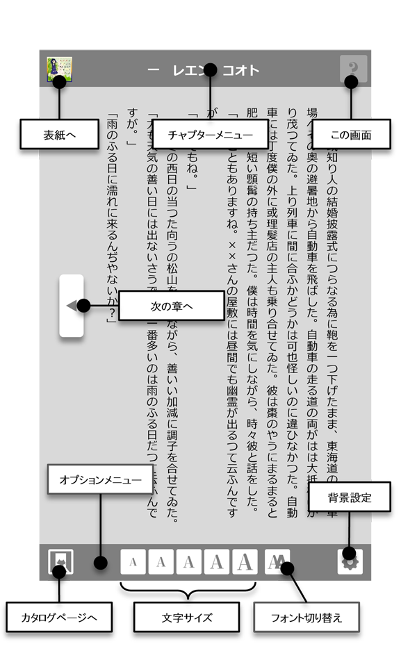
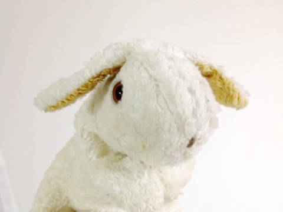
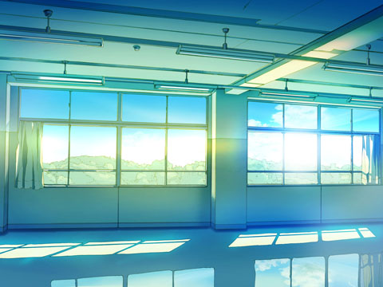
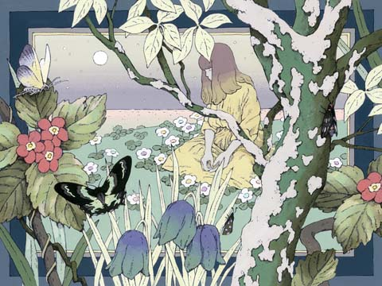
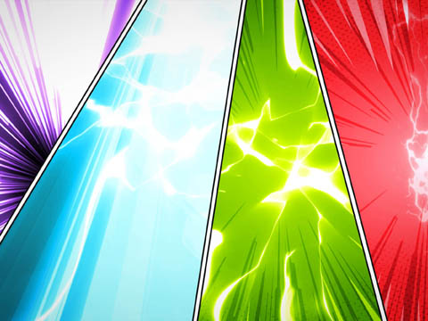
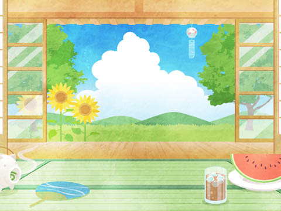
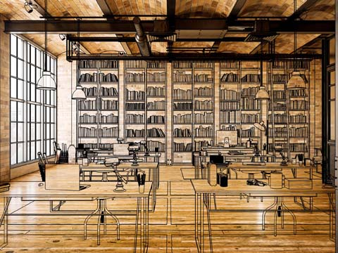
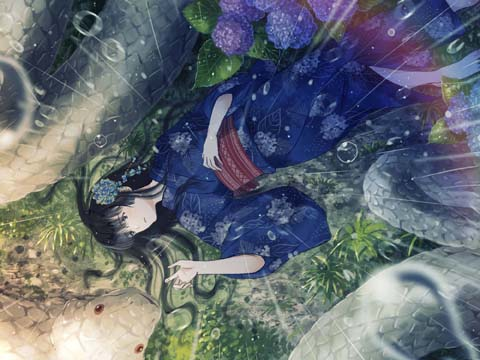
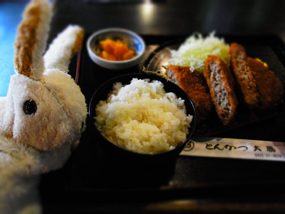

- 最初から始める
- 用語解説
- あとがき
- 奥付
01
二〇二Ｘ年……六月十日……
時間、空間ともに予測誤差の範囲内……
わたしの名前……名前は……
「因果律限界に接近しています。記憶は大丈夫ですか、エリ」
そう、エリ。わたしの名前はエリ。手のひらの中の「テセ」に答える。
「たぶん大丈夫。名前もなんとか……それに年齢……誕生日……血液型も……」
「心配です。逆に言えばそのくらいしか覚えていないということですから」
テセはクリスタルの超立方体構造の小型タイムマシーン――Tesseract Time Travel System――通称テセラックに内蔵された人工知能。外見は一辺５・６７９１cmの立方体。水素原子のボーア半径の２の30乗倍。生体伝導スピーカーが内蔵され、指で触れていると会話もできるし、音楽を聴くこともできる。
「必要なことはすべてあなたのメモリーに記憶させてる。それより、わたしの転校手続きは？」
「すべて手配済みです。新しい住所を表示します」
立体映像はこの時代にはまだ無い。テセをパームモードに変化させてスマホに擬態、レトロなアプリに模した地図にルートを表示した。
「鍵は？」
「郵便受けの中にあるそうです」
視線を上げると、ドラマやアニメで見た令和の時代の景色が広がっていた。
「視界クリア。ここはまだ因果律の中みたい」
タイムリープを重ねるほどにリープインのアタック・ショックが大きくなる。時間軸、パラレル軸ともに概ね三〇〇年を超えると「因果律限界」の壁が現れ、その先へ飛び出すと肉体は崩壊、帰らぬ人となる。だけどわたしには、そのリスクを負ってでも果たすべき任務があった。それは――
「それより、この世界でのわたしの名前は？」
「木下絵里。私立
02
俺の名は島津明。私立刻府高校二年。十六歳。とくに趣味もないし、モテもしない。平凡な高校生。親友の有馬
毛利唯 十六歳 １５２cm46kg 一月十二日生 山羊座 Ａ型 幼馴染で優等生な生徒会副会長、従順で引っ込み思案 徳川星花 十六歳 １６２cm49kg 八月 二十九日生 乙女座 AB型 宮之原財閥の令嬢にして生徒会長、高飛車で自信家
03
幼稚園の頃は幸せだった。 誰が賢い、誰がそうでもない、というのはぼんやりとはわかっていたが、今ほど残酷な壁は存在しなかった。毛利唯と親しくなったのもその頃。だけどいまは、成績とスクールカーストの壁がある。唯は国立大志望、俺はアニメかゲームの専門学校。それぞれの進路を歩むよう「指導」されているのだ。おかげで――いや、おかげでってわけでもないが、唯とは久しく口も聞いていない。 今回もまあ、気後れはあったが、たまたま渡り廊下で姿を見かけたので、声を掛けた。ちゃんと口を聞くのは二年ぶりとか、そんな勢いだ。 「よう」 って手を上げたら、少しびびってるようにも見えた。 「来月の花火大会、一緒に見に行かない？」 情けないことに、声を震わせながら聞いた。 「見に行くというのは、夕方からその目的のために外出するということですか？」 あたりまえのことをあたりまえに聞き返してくる。これが唯だ。あのキノコみてえな髪をしていた唯がいつのまにか女子らしい女子になって、夏服のブラウスに透ける肌を、俺は直視できなかった。 「ああ、そう。そうなんだけどさ。有馬も一緒なんだけど、どうかな」 俺の存在は、モテる有馬と抱き合わせで販売されるクソゲーのようなものだ。しかし、遊んでもらえればクソゲーだって浮かばれる。 唯は頬に指をあてて首を傾げた。 「でも、有馬くん、徳川さんと行くんじゃないの？」 そう、有馬は徳川と――って、えっ？ 待って。 「徳川って、生徒会長の徳川？」 「うん」 「あの恋愛感度ゼロ男が、学園のスーパーアイドル狙い？ ありえなくない？」 「いや、逆」 「逆って？」 「有馬くん、最近よく徳川さんに呼び出されてるの。知らなかった？」 「は？」 唯の話では、徳川星花って女は生徒会長になってからやりたい放題、生徒会室に黒魔術用の天幕を張って、そこによく有馬を連れ込んでるらしい。 「島津くんも、有馬くんと同じオカルト部でしょう？ 聞いてないの？」 いや、聞いてないけど、くっそー、有馬の野郎ーっ！ 俺も連れ込まれてえーっ！ 「――あ、ごめんなさい。いまの、有馬くんには伝えないでください」 待って待って待って、聞いちゃった俺はどうすればいいの。 俺は絵に描いたようにオロオロしながら、 「そ、それで、ええっと、花火大会は？」 なんてことを聞いたりしたが、心の中はそれどころじゃねえ。 「そちらもごめんなさい。うちは門限が厳しいから、夕方以降の外出は無理です」 そうやって敬語で答える唯に、俺は途方もない距離を感じた。 身の回りにいる唯一の女子、唯一の唯。その唯が、えれえ遠くに行っちまった。 なんかもう、有馬を問い詰める気力なんかねえわ。
04
徳川星花に挑むとなると、きっかけ――生徒会室に入る口実が必要だ。 幸い俺は有馬千寿が部長を務めるオカルト部の副部長だ。部員はゼロ。正式な部室がほしいと申請しては却下され続け幾星霜。今回はこれを突破口に、 「そろそろ我々にも部室がほしいのですが！」 と、生徒会長・徳川星花に挑んだ。 とは言え。そんな提案、秒で却下されると覚悟していたが―― 「部室のことは考えておくわ。でも、どうしてセンジュが直接言いに来ないの？」 と、色よい返事……って、センジュ？ 下の名で呼び捨て？ いや、戸惑っている場合ではない。 「まあ、いろいろあって……ち、ちなみにこんどの花火大会なんですけど、俺達オカルト部と生徒会と合同で見に行ったりしませんかーとか聞いたりしてー」 俺がキョドりながら聞くと、徳川の声から甘いラズベリーの笑みが消えた。 「お誘いありがとう、島津さん。でもね、星花はあなたの誘いには応じない。理由はあえて口にしないわ。でも、わかるでしょう？」 「ああ、はい……」 「さーて。本当にわかってるのかしら？」 毒を含むため息を吐いて、星花は目を細める。 「わかってるなら言葉にしてご覧なさい」 なんという恥辱プレイ。 「そ、それは俺が庶民だからですか？」 「ふうん、あなたはそう思ってるのね？ でも、それだけかしら？」 「あとは……ブサイクとか……運動音痴とか……オカルトマニアのクソオタとか？」 俺は星花に促されるまま、己の欠点を並べ立てた。 「あーっはっは！ まるで劣等感の塊ね！ でも、ブサイクも運動音痴もクソオタも星花が言ったんじゃないわ！ すべてあなたが言ったのよ？」 いや、でも、言わせたのはそちらですよね？ 「星花はあなたのことなんとも思わなぁい。だって、眼中にもないもの。なのにあなたは、勝手に壁を作って勝手に離れていくのよ？ 残念だわぁ、星花のファンがそうやって消えていくのわぁ」 シナを作って語尾を伸ばす言い方が、なんかムカつく。だが、徳川の声が妙に艶っぽく、髪をかきあげるたび、足を組み替えるたびに花の香りが広がって、罵倒されてるのに気持ちいい。むしろこのまま罵倒されたい。もっともっと言葉でいたぶられたい。俺がその罵倒の快楽に酔っていると、星花は不意にトーンを落として言った。 「あなた、毛利唯と幼馴染なんでしょう？」 俺に顔を寄せて、少しドスの効いた低い声だ。 「ああ、そうだ……ですが、なにか？」 俺はしどろもどろ。 「花火大会の件、あの女と縁を切ると言うなら、考えないでもなくてよ」 はあ？ それはいったい、どういうことだ？ 「いや、でも唯とは幼稚園からの付き合いで……いや、付き合っちゃいないが……」 俺が戸惑うと、徳川星花は軽く舌打ちをして、また元の口調に戻った。 「なぁんてね。冗談よ。本気にしないで」
05
ちょうど朝のホームルームがはじまる時間。教室に滑り込むと、いつもなら二～三分は遅れる担任の織田勇児が、珍しく定刻通りに教壇に立っていた。 「一分遅刻だぞ、島津」 俺が急ぎ席を目指すと、織田の隣には金髪の見慣れぬ女子がいた。髪はシルクブロンドの柔らかなセミロング。チラ見していると、両親の仕事の都合で引っ越してきたのだと織田は彼女を紹介し、「木下絵里」と板書した。スタイリッシュな徳川星花、あるいはミニマムな毛利唯に比べると、女子感の強いボディ。俺が席についてカバンを机に掛けると、「席は島津の隣が空いているから、そこで」と、織田は俺の隣の席を指差した。
木下絵里 十六歳
１５６cm50kg 七月七日生 蟹座 Ｂ型夏の初めに転校してきた金髪の美少女 まだどんな性格かわからない
転校生が教壇からこちらへと歩く間、胸元に目が行く。俺は変態ではないが、男の性だ。彼女が俺の隣に座るとき、ふと漏れる吐息に体の芯が疼く。 「はじめまして。島津明です」とりあえずは自己紹介。 「わたしは木下エリ。聞いたと思うけど」軽い微笑みを含んだ転校生からの返答。 「教科書ある？ なければ俺のを――」 そう言葉を交わす間、彼女の横隔膜は胸のふたつの膨らみを静かに上下させる。ときめきと緊張の一時間目は足早に過ぎ去り、昨日の今日でフラれ耐性がついた俺は、休み時間にさりげなく切り出した。 「このあたりは、夏の花火が有名なんだけど、よかったら一緒にどう？」 ひねりも何もないストレートな誘いだ。さて、この女はどんな言葉で俺を打ちのめすのか――などと考えていたら、「いいよ。詳しいスケジュールを教えて」と、スマホの予定表を開いた。 なにこの急展開。もしかして、いまこの瞬間、恋が始まったのか？ 俺はクールな素振りを決めるが、ココロの中では天使たちが踊りだす。 「当日は迎えに行くよ。まだ一ヶ月先だけど。木下さんはどこに住んでるの？」 「エリでいい。木下は慣れない。そっちもアキラでいい？」 放課後、俺はエリのあとをつけた。ストーキングではない。たまたま行きたい方向が一致し――と考えていると、どうやらエリも何者かを尾行しているようで、度々不自然に足を止めた。いったいどういうことだ？ と思った次の刹那、エリは路地に入り、俺もとっさにそれを追うと、身構えたエリの後ろ姿が見えた。エリは目の前の男に駆け寄り、その勢いで背中に触れると男は崩れ落ちる。俺は思わず身を隠した。相手は我が校の制服。いったい何が起きたのか、エリが去ったあとで駆け寄ると、被害者は親友の有馬だった。声を掛ける。体を揺する。有馬の反応はない。脈は？ 有馬のトレードマークの一個だけ珠のついた謎のブレスレットを避けて、手首に指を当てるが脈がみつからない。服の背中は焦げ……そんな……まさか……？ 死んだ……？ 咄嗟のことで、声すらも出ない。俺は立ち尽くし、警察も救急車も呼べず、ただ足元に転がったエリの携帯らしきものを拾って、気がつくと家へと駆け戻っていた。 逃げ込むように部屋へ。スマホだと思って手にしたものは、カバンの中でクリスタルの板に変わっている。この全体がディスプレイになっているのか？ タップしてみると、「未登録のオーナーです。利用者を登録してください」と、音声ガイダンス。 案内されるままに操作を続けると、クリスタルの板は立方体のキューブに変形―― 「Tesseract Time Travel System、テセラックへようこそ。テセラックは安全で快適な時間の旅へあなたをご案内します。ナビゲーターは人工知能、テセ。最新式の生体伝導システムで、あなただけに音声を伝えます。さあ、テセに話しかけてください――」 軽くエコーがかかった女性の声で俺に語りかけた。 オカルトとＳＦが好きな俺は、この混沌とした状況を二秒で把握。 「つまりこいつはタイムマシーンで、要は過去や未来へ行けるということか？」 「そうです。テセラックには時間軸の移動をマクロで連続的に行い、パラレルワールドへの超越を手助けする『パラレルトラベルモード』が搭載され――」 テセの説明は続くが、俺はもう上の空だ。 このマシーンを使えば、有馬が殺される前の時間に戻って、エリの凶行を止めることだってできる。未知の危険があるが……ええい！ 戸惑ってる場合じゃない！
06
放課後、俺はエリのあとをつけた。ストーキングではない。たまたま行きたい方向が一致し――と考えていると、どうやらエリも何者かを尾行しているようで、度々不自然に足を止めた。いったいどういうことだ？ と思った次の刹那、エリは路地に入り、俺もとっさにそれを追うと、身構えたエリの後ろ姿が見えた。俺は思わず声を上げる。
「エリ！」
俺の声にエリは振り返る。黒髪のエリ。ここはまだ唯と武田が結ばれる世界線だ。
「貴様は！」
エリはその鋭い視線を俺に向ける。
「その人の友達だ。彼を助けに来た」
「友達……？」
「ああ。その人は有馬千寿っていってね。覚えてないかな」
俺はいままでに経験したことのすべてをエリに話した。唯のこと、星花のこと、それに織田のこと、
07
昨日の有馬千寿変死事件を受けて学園内は騒然とし、校門の外には警察や雑誌の取材が詰め掛けていた。その学園でいちばん空に近い場所。屋上。塔屋の梯子を上って、その上。エリを呼び出して、先に行って待っているつもりが、エリはすでに待ち構えていた。俺はその正面に対峙、 「昨日、お前が落としたスマホを拾った」 と言ってやると、エリは鼻で笑った。 テセラックという超越的なテクノロジーマシンをスマホ呼ばわりか、とでも言いたいのだろう。例えるなら、江戸時代に行ってスマホを落としたら、拾ったヤツから「延べ板を落とされましたぞ」と言われたときの顔だ。 「これが何かは知っているつもりだ」 そう言って懐から取り出したテセラックは淡い緑色に輝いている。 「お前は何かあっても、こいつで他の時代に逃げられる。それで堂々と犯行に及んだんだろうが、これがこっちの手にある以上、そうはいかないはずだ。さあ、白状してもらおうか。お前の目的を！」 エリはおそらく未来から来た人間だ。これがないと未来にも帰れないし、しおらしく言うことを聞くしかない。と、思っていたら、 「テセ。ディアクティベート」 エリが言うと同時に、俺の手のテセラックから光が消えた。どうなったんだ？ 停止した？ どうすれば再起動できるんだ？ こねくりまわすが、うんともすんとも。 「無理よ。マスター権限を持つわたしにしか再起動できないわ」 「うるさい。そんなことはわかってる――」わかってないけど。「いいから目的を話せ！ これがないと困るんだろう？」 「別に。いくつでも予備はあるわ」 なんてこった。これじゃあスマホを延べ板としか認識してない江戸時代の民草と同じだ。 「こんなとこに呼び出すなんて、スカートの女子に梯子を上らせて下から覗くつもりでもいたの？」 「はあ？」 そんなモン見たら、俺のこの怒りがピンク色の妄想で弾け飛ぶだろうがよ。 「じゃあ、配慮が足りないお馬鹿さん」 俺は……エリを問い詰めたあと、テセラックで有馬を助けに行くつもりだった。だがその道は断たれた。いったい俺は……俺はどうすれば……！ 気がつくと俺は江戸時代の民草のように、這いつくばって土下座していた。 「頼む。何の目的があるかは知らんが、有馬を助けてやってくれ。親友なんだ」 「無理よ。諦めて」 「こいつでタイムリープできるんだろう？ あいつが生きてる時間に戻って、そこからやり直せば時間は分岐するんじゃないのか？」 「正確に言うと違う。時間は分岐しない。ただテセラックでタイムリープする当事者がその世界線を選んでるだけで、わたしが何かをしてもわたしの現実が変わるだけ。あなたの世界線で死んでしまった有馬が生き返ったりはしない」 エリはまくしたてるが、俺には飲み込めない。俺はただ胸に現れる言葉を吐いた。 「なんで有馬を殺しちまったんだよ……」 「そうしなければ、あなたが死ぬから」 「俺が？」 「今度の土曜日、有馬が花火を煙火筒ごと手に入れて、その暴発であなたは死ぬ」 「だったらそうならないように気をつければいいだけだろう？」 「それを回避したら、別の方法で死ぬの！ 何をどうやっても、有馬のせいであなたは死ぬ！ あなたが死なない世界線を求めて、因果律限界近くまできて、やっと見つけたの！」 俺が何か聞くごとに、俺には理解できない理屈で言い返される。 「あなたが有馬を助けに行く前にわたしに話してくれて正解だった」エリが言う。 「もし、有馬を助けてたら、どうなってた？」 「おそらく、あなたは死んでたわ」 校内放送が、午後の休校を案内する。有馬の件で職員室は大騒ぎだ。 「これからどうするつもりだ？」 エリに尋ねると、 「あなたの生存する世界線が確定次第、もとの世界線に帰る」 エリは答えた。 しかし……エリが何者かは知らないが、どうしてそこまでして俺を……？
08
徳川星花はこの一週間、喪に服する意図で黒いドレスを着て登校していたが、あいつには制服という概念はないのか？ 毛利唯は俺を気遣って、大丈夫？ 自分をしっかり持ってね、と話しかけて来ながら、最後には自分のほうが泣き出していた。 カウンセリングやら、雑誌の取材やら、暗い一週間が過ぎ、そしてこれ以上引きずっても受験に響くとの配慮から、有馬千寿殺人事件の話題は消えていった。エリが捜査線上に上がることもない。あいつのことだ、裏で何かしら手を回しているのだろう。そのエリも、そろそろ未来へ帰るはずだ。 また幾日かの日が過ぎて、その日は朝からぼんやりと部屋全体が緑色に輝いていた。寝ぼけながらも目を凝らしてみると、光源はテセラックだった。すぐに手にとって、 「何がおきた？」と話しかけると、生体伝導で返事が返った。 「時空波の異常を確認、緊急起動しました」 「時空波の異常？ というのは？」 「因果律限界の外に、巨大な時空の歪みが発生しつつあります」 「わかるように言ってくれ。俺は二十一世紀の人間なんだ」 テセの話によると、長周期のタイムリープを行うと、「因果律限界」というのが現れるらしかった。要は、確定していない未来、あるいは可能性がいろいろあって絞りきれない過去？ みたいなものに行き着いて、その先では原因と結果が結びつかないのだそうだ。 「西暦一五八二年、琵琶湖畔近江八幡付近に、因果律外より何者かがリープイン。その衝撃による時空波が多くのパラレルワールドに波及し、混乱を招いています」 「何者か？」 「識別完了。二〇二Ｘ年よりはじき出された有馬千寿のようです」 「有馬が？ 有馬が生きているのか？」 いや？ 一五八二年に生きてるってことは、今はとっくに死んでるってことだから、生きてるというのはおかしいな。 「有馬千寿は、二〇二Ｘ年の現在においては、すでに死んでます」 「まあそうだろうよ、俺の聞き方が悪かった。俺が聞きたかったのは、有馬は十日前にエリに殺されて死んだ。タイムリープして過去に行くタイミングなんかなかった、ということだ」 「そのときにすでに多重化していた可能性があります」 「ああ……多重化……」 なんかこういうの、授業であった。もう習った言葉かもしれないけど、俺には心当たりがない。知ってるフリして頷いておくか、それとも聞き返すべきなのか。 「つまり、別の時代から来た有馬千寿が、あのときの有馬千寿とコヒーレントな状態にあり、殺害された際にその一方が過去へ飛んだものと考えられます」 察してテセが説明してくれるけど、専門用語増やすな。 「つまり、有馬千寿は生きていたってことだな？」 「有馬千寿は生きていました。いまは死んでます」 まあ、そうだろうよ。聞きたいのはそうではなくて。 「要は、有馬千寿を、過去の世界から連れ戻すことができる、と？」 「論理的には可能ですが、時間の遡行はおよそ三〇〇年が限界となります」 「つまり？」 「有馬千寿がいるのは四〇〇年以上の過去。二〇二Ｘ年を原点とするあなたでは、リープインの衝撃に耐えられず、肉体が崩壊するでしょう」 そうか。そういうことなのか。もどかしいな。 「それって、五〇年ずつ細かく分けてタイムリープしてもダメなの？」 「それは五〇センチのジャンプを一〇〇回重ねたら五〇メートルの大ジャンプができると言っているようなものです」 人工知能のくせに、説明が妙に人間臭い。 「わかった、テセ。こういうのはどうだ？ 太郎くんは五〇センチジャンプできます。花子さんはその二倍飛べます。クレアは花子さんの三倍飛ぶことができて、太郎はクレアの四倍の高さまで飛べます。果たして太郎くんは何センチ飛べるでしょう」 「自分で考えろバーカ」 「なんだとう！」 だが、何か方法があるはずだ。有馬が生きているとわかった以上――いや、死んでいるんだけど、助け出す手段はある。 「問題は、仮に有馬を助け出したとして、その有馬のせいで俺が死ぬってことだ。それだったら有馬が死んだ日に戻って、エリの凶行を止めたほうがまだいい」 「因果律限界の外ではそもそも因果律が正常に機能しません。通常のタイムリープとは違った結果がもたらされると考えるのが妥当でしょう」 「わかった、テセ。もういい。お前の言葉は俺には難しすぎる。とにかくできることからやっていこうと思う。まずはタイムリープがどういうものか、試したい」 そう言うと、テセがさっそくスタンバイ。 「リープモードを選択してください。リープインした先の肉体に宿る場合はコヒーレント・モードを、別の体で出現する場合はセパレート・モードを選択してください」 「つまり、どういうことだ？」 「コヒーレント・モードは上書き保存、セパレート・モードは新規保存だと考えてください」 「なるほど！ よくわからん！」
09
俺を包む視界のすべて――言うなれば宇宙全体が拡大と同時に縮小し、空間が捻れた感覚のあと、俺は一ヵ月後の花火大会の日にタイムリープしていた。 「い、い、いま何が起きたんだ？」 「タイムリープは、テセラック内部に別の時間軸の宇宙をロードし、その内側と外側を入れ替えることで行います。四次元空間に貼り付けられたふたつの三次元面の表裏転換……つまり紙袋の裏返しを宇宙全体で行うようなものです」 「その説明で理解できる人類はいねえよ」 「その理解にはまず、四次元空間での三次元世界の見え方を理解する必要が――」 「いや、もういい。のんびりしていると日が暮れてしまう」 からっと晴れ上がった花火日和の空に、幾筋かの風が舞った。 本来なら、俺は徳川と唯のどちらと花火を見ているのだろうかと、そんな期待に胸をときめかせるシチュエーションだが、残念ながらフラれた。そういえば、殺人鬼のヤツも誘って、ＯＫをもらったのだった。だがもう、世界線は変わった。おそらく俺は、人で混雑する川下神社を避けて、川上岬あたりで一人寂しく花火を見上げていることだろう。 この時間、太陽へ向かって歩くと川上岬に出る。 夕日を遮る切通を超えると、案の定俺はそこにいた……と、思ったら木陰からもうひとつの影が現れる。金髪？ エリじゃねえか。両手で何か抱えているが、未来の俺はなんで律儀に約束を守ってるんだ？ 俺は茂みに身を隠し、聞き耳を立てた。 「ショットガン・マイクで音声を拾うことができます。起動しますか？」 「便利機能満載だな、テセ。頼むよ」 テセが拾った一ヵ月後の俺とエリの声が、生体伝導で俺の内耳へと伝わる。 「どうしたんだよ、そのうさぎ」と、未来の俺。 「そこにいたから」と、未来のエリ。 何やら楽しげであるが、有馬の件はどうなった。というか、なんでうさぎを捕まえているのだ。 「いたからって捕まえるなよ。可愛そうだろう」 その通り。 「可愛そうじゃないよ。これから家族になるんだよ」 わからぬ。 話を聞いているうちに、「そこの茂みで、一ヵ月前の俺が聞き耳を立ててるよ」と、一ヵ月後の俺が俺を指さした。なんでバラしやがるんだ。 「聞いてるか俺ー！ 事件はすべて解決するし、有馬も帰ってくるぞー！」と、俺。 「みんな大丈夫だから心配しないでー！」とエリまで。 ということは？ どういうことだ？ 有馬も生き返って、エリが言ってたようにそれで俺が死ぬってこともなくなったのか？ 「じゃあ、どうやってそれを成し遂げたか一ヵ月後の俺に聞いてみたらいいんじゃないか？」と、テセに聞いたら、 「未来を知ったうえで行動すると、世界線がズレる可能性があります」なんてことを抜かしやがった。ＳＦかよ。まったく。 草の影に潜んでいると、うさぎを抱えたエリがこっちに近づいてくる。だけど俺はまだ心のモヤモヤが晴れてない。口も聞きたくねえ。 俺は草むらに身を隠したまま、とっとと元の時代に戻った。
10
俺を包む視界のすべて――言うなれば宇宙全体が拡大と同時に縮小し、空間が捻れた感覚のあと、俺は一週間前の有馬千寿殺害事件の日にタイムリープしていた。 「い、い、いま何が起きたんだ？」 「タイムリープは、テセラック内部に別の時間軸の宇宙をロードし、その内側と外側を入れ替えることで行います。四次元空間に貼り付けられたふたつの三次元面の表裏転換……つまり紙袋の裏返しを宇宙全体で行うようなものです」 「その説明で理解できる人類はいねえよ」 「その理解にはまず、四次元空間での三次元世界の見え方を理解する必要が――」 「いや、もういい。のんびりしている場合じゃない。もうすぐ犯行時間だ」 俺は殺人現場が見える雑居ビルの喫茶店に入って、コーヒーを頼んだ。薄暗い二階の角の席から、ぎりぎり現場を見ることができる。 有馬はスマホを見ながらキョロキョロとあたりを見渡して路地の奥へと歩いてくる。どうしてこんなところに来たのか謎だったが、エリに呼び出されて来たのだろう。すぐにエリが現れ、殺害の実行。有馬は倒れ、アスファルトの上に鈍い音を響かせた。直視できなかった。俺はトイレに駆け込んで吐いた。 有馬を助ければ俺が死ぬとエリは言うが、それをどの程度信じていいかわからない。自分で体験してもいない未来のために親友を見殺しにするなど唾棄すべき行為だが、エリによれば、どの世界線に行っても俺は有馬を助けて死ぬのだという。 ならばせめて―― 俺はさらに三日前にタイムリープした。 「有馬お前、この店のケーキ好きだったよな」 俺は有馬を誘って、駅前のパーラーにいた。有馬が好きだって言ってたケーキを手当たり次第に頼んで、テーブルに並べる。 「ああ、そうだけど、なんで誕生日でもないのに奢ってくれんの？」 有馬のトレードマーク。一個だけ珠のついた謎のブレスレットが懐かしい。 「いいから食ってくれ。五個でも……十個でも……貯金下ろして来たんだ」 「おいおい、なんで泣いてんだよ。お前も食えよ。めっちゃ美味いから」
11
それから何度か、殺される前の有馬に会いに行った。 あいつには、エリに殺されることは伝えなかったが、行くたびにあいつが好きだったケーキを奢って、そして泣いた。 「それにしても、ひどいよお前」 「ひどいって、何が？」 俺は少しでも明るい話題をと思って、徳川星花のことを聞いた。 「徳川星花によく誘い込まれてるって話。なんで言ってくれなかったんだよ」 「言ったじゃん。このまえ」 「あれ？ そうだっけ？」 俺がタイムリープしていることを悟られたくない。ここは話を合わせておいて、更に三日前にタイムリープ。 「それにしても、ひどいよお前」 「ひどいって、何が？」 「徳川星花によく誘い込まれてるって話。なんで言ってくれなかったんだよ」 「よく誘い込まれるって？ 今日が初めてだよ？」 ああ、しまった。今日がその日だったか。 「ごめんごめん、勘違いしてた」 「なんかね、理事会が生徒会を解散させるつもりなんだって」 「は？」 「それで、星花が黒魔術で式神を召喚して理事長を殺すって言い出して……」 って、星花呼び？ お前からも下の名前で呼び捨てなのかよ。 「でもなんで、生徒会を解散……？」 「星花が好き勝手やりすぎなんだよ。生徒会室に黒魔術用の天幕吊るして、生徒会の方針は全部降霊会で決まってる」 「そりゃ解散させたくもなる」 「副会長の毛利が理事会側についてるから、生徒会はいっつもピリピリしてんの」 唯が理事会側……。俺にはこの理事会と生徒会の対立、どっちが正しいなんてことはわからなかったが、真面目な唯が理事会を支持することは容易に想像できた。 翌日……と言っても、いつの翌日だかもうよくわからないが、部室の件で生徒会長に呼び出された。 「オカルト部の部員はもうあなた一人。将棋部からは、オカルト部を潰せって言われてるんだけど、さあて、どうしたものかしら」と、徳川。 将棋部の野郎……。 「どうすると言っても、オカルト部を続けるのは有馬の遺志だ」 「そうねえ。一人で部を持つなんて、本来は無理な話。でも、条件次第では考えなくもないわ」 条件次第――。星花の性格から、生徒会の確執の件だと俺は直感した。唯と縁を切るならオカルト部は存続、そうでないなら取り潰し、どうせそんなことだろうとタカをくくっていたら―― 「魔術を見せて」 と、生徒会長は過発酵した甘酸っぱい笑みを浮かべた。 「はあ？ いまなんと？」 「わたしに魔術を見せてくれたら、オカルト部も存続させてあげるし、部室もいまの倉庫の隅じゃなくて、正式なものをあげるわ」 「いや、オカルト部ってのは魔術を使ったりはできなくて、ＵＦＯ探したりとか、古代遺跡に思いを馳せたりとか、そういう他愛もないもので――」 「呪い殺してほしい子がいるの」 そう来たかー。 「死因は問わないわ。その子が死んだら、あなたの魔力の証明になる。どう？」 この人、俺に人を殺せって言ってるー。しかも「その子」ってたぶん唯だー。 俺が渋い顔をしていると徳川は笑い出す。 「あーっはっは。冗談に決まってるじゃない。星花、そんなに邪悪に見える？」 そーゆー風にしか見えねえよ。 「センジュから聞いてるでしょう？ 理事会のことも、毛利のことも」 「ええ、まあ、徳川さんもいろいろと大変だって……」 俺がそう言うと、徳川は顔を寄せてくる。きめ細かな肌に薄く乗ったファンデーションと艶のある唇が、俺の心臓を鷲掴みにする。 「星花って呼んでいいのよ」 「ああ、はい」 「呼んでみて」 「星花さん……」 「さんは要らない」 「星花」 何をやっているのだ、俺は。 「あん。いい声。もういちど耳元で言ってみて」 「星花」 俺が名前を囁くと、今度は徳川から、 「ア・キ・ラ」 と耳元に囁いて、吐息を吹きかける。 「センジュがいなくなってタイクツしてたの、わたし」 いったいどういう仲だったんだよもー。ケーキ返せよ、有馬ー。 「わたし、毛利にちょっとだけ悔しい思いをさせてあげたいの。それだけなら協力してくれるでしょう？」 「それだけって？」 「あの子の思い出を、わたしが奪うの。どう？ ドラマチックじゃない？」 「いや、でも……」 というか、どういう意味だ？ 「副会長は、武田教諭に呼び出されて視聴覚教室。しばらく帰ってこないわ」 星花は――って、俺まで星花呼びしちゃってるけど、星花は艶かしく揺れるように立ち上がって、真紅の天幕へと体を滑り入れる。 「――来て。アキラ。この中で『せ』のつくこと、しよ？」 うわー。やっべー俺ー。なんかもー、やっべー。
12
唯が武田教諭に呼び出されたと聞いて、悪い予感がした。武田教諭といえば学園随一の変態教師と名高く、女子生徒のストーキングや女子トイレ盗撮などの報告が上がっている。何度か理事会でも問題になったが、証拠が上がらずそのまま居座る学園のガン。その実態は、天元突破とも伝説巨神とも初号機とも呼ばれる超越したオタクで、滅多矢鱈と機械に詳しく学園の監視システムはすべて武田が設置・コントロールし、犯罪の証拠をもみ消すなど朝飯前、視聴覚教室に最新のサラウンドシステムを導入、そこを根城に教材費で数々のアニメのメディアを４Ｋ7.1チャンネルのデジタル・シネマ・パッケージで購入、オタクはコンテンツを消費することで性的欲求を昇華させているというものもいるが、武田はこれらのコンテンツをチョコレートやキャンディに替えるかのようにして摂取・吸収、史上最凶最悪の変態にまで変容している――と、有馬が言っていたので、おそらく真実なのだろう。そして、武田が毒牙にかけるのは、唯のような従順な優等生と相場が決まっていた。 視聴覚室のドアを開けると、椅子に座らされた唯と白衣姿の武田が目に入った。唯は足を投げ出し、武田がその足元にしゃがんでいる。 「なにやってんだ、お前ら」 相手は教師であったが、思わず「お前ら」などという言葉が出てしまった。 「補講をしてくれるっていうから、いま靴と靴下を脱いだところ」と、唯。 「なぜ靴下を脱ぐ必要がある」 俺が聞くと、変態武田がメガネを人差し指で押し上げて立ち上がる。 そして右手に靴、左手に靴下を持って、「大気の摩擦のない月面で靴と靴下を同時に落とすと、同時に地面に落ちる。その実験をして見せるためだよ」と声を張る。 「キミならわかるだろう？ 島津明」 何言ってんだ、こいつ。 「わからなくはないが、ここは月面じゃない」 武田、虚を突かれて二秒フリーズ。 「そうだ。忘れていた。この実験は中止しよう」 「中止しようじゃねーんだよ！ 生徒を脱がせて何をするつもりだったんだよ！ このド変態野郎！」 「ド変態とは失礼な！ 私のような教師は日本中どこにでもいるだろう！」 「そうなんだよ！ いるんだよ！ 日本中津々浦々てめえみてえな変態クズ教師ばかりだ！」 しかし、切れている場合じゃない。 「今度やったら殺す」「ああ、はい」ああ、はいじゃねえ。 唯のことも大事だが、この機会だ。 「ところで、タイムリープについて知りたい」 「タイムリープ？ 待っていろ、資料がある」 「ほう！」 待っていると武田は操作室に入り、アニメの上映を始めた。 「これは？」 「タイムリープものでイチオシのアニメだ」 それからうっかりテレビシリーズのアニメを二話まで見せられてしまったが、 「生徒が真剣に悩んでんですよッ。もっと真剣に考えてもらえませんかねえッ！」 青筋を立てて訴えた。 「待て待て、三話まで見てくれ。三話を見てハマらなかったら諦めよう！」 「そーゆー問題じゃーないんですがねえッ！」
13
さすがに、誘われるがままにのこのこと天幕に入って『せ』の付くことをやりましたなど、唯に言えるわけがない。が、今なら唯の姿はない。ど、ど、ど、どうする、俺。どうするもなにも、やるしかないだろう。だ、だよな。やるしかないよな。 真紅の天幕からはゆらゆらとランタンの明かりが漏れ、星花の影を映している。衣擦れの音が聞こえる。この中で星花は――そう考えると心臓が爆散するほどに高鳴るが、非モテの俺に巡り合わせたチャンス！ 逃すものか！ 天幕に入ると目の前に、 「来てくれたのね、アキラ。見て……」 と、星花の御開帳！ 濡れた眼がゆっくりと瞬きをする。黒魔術用の黒檀の祭壇に血色の羅紗がドレープを重ね、その粘膜質の襞の隙間に、星花は白い指を這わせる。 「こ、これが……」 「そう……すべてあなたのものよ……」 星花は唇に触れた毛先を指で流して、蕩けだす瞳で俺を見る。 「有馬もこれをやっていたのか？」 「そうよ。彼の汗って、蜂蜜のような甘い香りがするの。わたしはその香りに酔いしれて、彼が果てるまでただ天幕を見て揺れるだけ」 これは確かに、親友だからってそうそう話題にできることじゃない。 「これからはアキラ、あなたがセンジュの替わり。わたしを、悦ばせて」 「だ、だけど俺にそんな大役が……」 不詳島津明、学業は不得手ではないが、『せ』のつく方面は…… 「ああん、ここまで来て、逃げるの？」 「逃げるだなんてとんでもない！」 「星花に恥をかかせないで。ア・キ・ラ」 ああ……耳元に星花の甘い吐息が……！ 「ね。わたしを……卒業させて……」 そこに―― 「会長、失礼します」 と、唯が入ってきた。 俺と星花がいまにも『せ……』に及ぼうというタイミングで！ 「将棋部が部室の件で陳情に来ています。どうしますか？」 唯は動じることなく、星花に尋ねる。 「却下よ。ぶぶ漬けでも出して追い返しなさい」 星花もまた、この高校生にあるまじき行為を恥じもせずに受け答える。 「承知いたしました」 一礼して天幕を出る唯が、ちらりとだけ振り向いて俺に聞いた。 「何やってんの？ 島津くん」 「な、何をって……せ、せ、世界史のレポートを……」 俺の目の前の机には、世界史の参考書と地図と資料とがずらーっと御開帳され、俺は星花の赤点補習用のレポートを書かされようとしていた。 「それ、有馬くんもやらされてたけど、会長をあまり甘やかさないでね」 呆れる唯を、星花は睨みつける。 「邪魔しないで、毛利唯。このレポートを仕上げないとわたし、世界史の単位を落とすことになるわ。そうなったらあなた、責任取れるの？」 なぜ唯が責任を取らされるのか、星花のそのロジックはわからぬ。あるいは俺もなぜ星花のレポートをやらされる羽目になったのか、わからぬ。 唯の目は、ただただ俺を軽蔑していた。
14
オカルト部の部室は、演劇部が使っている倉庫の隅の謎のデッドスペースにあった。そこにはたまに吹奏楽部の楽器が置かれ、バレー部が脱いだ靴下を投げ込み、月水金は将棋部が使っている。
「おお？ 今日は将棋部の部室だ。なんでオカ部が来るんだ？」
と、将棋部の部長、
15
廊下へと出ると、担任の織田先生に呼び止められた。 「もう大丈夫か、島津」 と、織田先生は親友を失った俺を気遣ってくれる。あれからずっと、織田先生だけは親身になって話を聞いてくれた。 「悩みがあったら、なんでも言ってくれ」 そう優しい微笑みをこぼされ、俺は素直に付き従って、進路指導室に入った。このところずっと見聞きしたことを人に言えず、正直なところかなり消耗していた。織田先生になら、すべて話しても良いのかもしれない。 「あの話、俺は信じていない。だから、気にするな」 ソファに腰を下ろしながら、織田先生は言った。が、あの話とは？ 「あの話？」 「ああ。監視カメラ映像も見せられた。確かにお前らしき人物が現場から逃げ去る様子が映っていたが、なあに、他人の空似だ。気にすることはない」 「……って、その情報はどこから？」 「校内の情報と引き換えに、雑誌記者から聞いた。お前を来週号の表紙にするそうだ。ついに全国デビューだ、島津！ だが安心しろ、ちゃんと目線は入る！」 と、織田先生は朗らかに笑うが、 「いや、そういうことじゃなく」 「そういうことじゃなく？」 「もしかして俺、容疑者になってます？」 「あ、ああ、その通りだが、もしかして、知らなかったのか？」 「はじめて聞きました」 そう言うと織田先生は少し考えて、 「……聞かなかったことにしてくれ」 と、席を立った。 「って、聞きましたもん、いま、はっきりと」 俺も立ち上がって、声を張ったが、 「そうか……。ならば言っておく。証拠隠滅などはするな。裁判で不利になる」 と、織田先生はそそくさとその場を後にした。 まるで犯人扱い。なんか、むしゃくしゃする。どうすればいいんだ、この気持ち。行きつけのゲームセンター、カルガモ・ブラッドで憂さでも晴らすか、あるいは久しぶりに川上岬の夕日でも見て一人で泣くか……。
16
商店街のハンバーガーショップのある角の反対側の地下に、行きつけのゲームセンター、カルガモ・ブラッドがあった。対戦用のステージやＤＪブースもあるクラブのようなゲームセンター。腕に覚えのある連中はよくこの店で盛り上がった。 俺が椅子に座った次の瞬間――ショーアップ用の照明が光った。 同時にＤＪの声が轟く。 Ladies and gentlemen, may I have your attention please! We have a special guest in the house today. Please give a warm welcome to the legendary Luluka! Let's make some noise for Luluka! なんか歓声が沸き起こるが、日本語で言え、日本語で。いったい何事かとあたりを見渡すと、なんと、取り巻きを引き連れた生徒会長星花の姿が見えた。すぐに向こうも俺の存在に気がつく。 「あら、アキラ。さっきはよくもわたしに恥をかかせてくれたわね」 「恥を？ なんでそうなるんだ？」 「いいわ。わたしと勝負しなさい。勝ったら許してあげる」 俺は何を許してもらわなければいけないんだ？ 「その代わり、わたしが勝ったら、唯の机にカエルの死体を投げ入れてもらうわ」 えげつねえ。いくらなんでもえげつねえ。 「というか、さっきのＤＪは何だ？」 「ああ、あれ？ 伝説級のプレイヤーが入店したときに必ずやるのよ。ショーアップのために」 「へー。そんなすげーやつが来たんだ……」 と、凡庸な感想を洩らして星花の顔を見ると、得意げな流し目を俺に突き刺す。 ふと気がつくと壁にはミラーボールの光が流れてピンスポの輝く円錐がフロアを走り回っている。俺と星花の周りには書き割りのようなギャラリーの人垣。 「あ、あの……伝説級のプレイヤーって……もしかして……星花さん……？」 「そうよ。知らなかった？ 黒魔術と卓上遊戯は淑女の嗜みですわ」 ＤＪがなんか言って煽ってるが俺はアタマ真っ白。 「ハンディをあげる。二十秒立っていられたら、あなたの勝ちでいいわ」と、星花。 はあ？ いや、でも、それだったら、でも、はあ？ 「逃げないでね。ア・キ・ラ」 いや、とにかく、どんな手を使ってでも二十秒凌げばいいんだな。それが俺がただの残念なオカルト野郎じゃないことの証明になる。星花が席に座り、おもむろに髪を手で流して、いま高らかにゴングが打ち鳴らされる！ 次の瞬間、光の速度で星花が突っ込んでくる。わずか三秒でＨＰの半分が持っていかれる。なんだこの動きは。俺はレバガチャしながら、とっておきの作戦―― 「星花、勘違いしてるようだが、俺が好きなのは、唯じゃない」 聞こえるように言った。 「へーえ、でも十分よ！ 向こうはあなたのことが好きなんだから、あなたの裏切りは堪えるはずよ！」 待って、それをこんなタイミングで聞きたくない――だが！ もう引き返せない！ 「星花！ 俺が好きなのは唯じゃない！ 星花！ キミなんだ！」 「えっ？ うそ……」 と、動揺して立ち尽くす星花。 はっはっは！ 強がっていても高二女子！ 効果てきめんだ！ 俺はありったけの攻撃を叩き込む！ あーっはっは！ これでもう勝ったも同然！ 星花は身動きもできないままゲージがみるみる減っていく！ あと５ミリ、あと１ミリ！ 次の攻撃を叩き込めば―― 「あたしも明のこと、ずっと好きだったの……うれしい……」と、星花の声。 「えっ？ あっ？ そうなの……」 まずい。だったらこんな風に告白したくなかった。もっとちゃんとした場所で、ちゃんと髪型も決めて、せめて花くらいは用意して…… 「あの、ごめん、星花……じつは――」 「スキありいいいいいいいいいいいいいいいっ！」 星花の魔法のようなスティック捌きから超絶な連続攻撃が繰り出され、ジーニアス！ エクセレント！ マーベラス！ ファンタスティック！ 連弾三十ヒットの果てに俺は蒸発する勢いで崩れ去り、敗北した。 ＫＯタイム十九秒。 「あーっはっは！ 告白されてあたしが動揺すると思った？ アキラ最高！ まるでピエロだわ！ こんなにも楽しませてくれるなんて！」 悔しい……この負け方は悔しい……。なのに星花に「ずっと好きだった」と言われたことが、少し嬉しい……。
17
下校途中の三叉路。ここを右手に曲がれば川上岬、海が見える。この時間なら、太陽が海に溶け落ちる瞬間に間に合うかもしれないと、俺は舗装の割れた凸凹の道を歩いた。川上岬には古い和歌を刻んだ石碑があり、下の句を刻んだ左半分はいつの頃からか失われている。石碑にはアルファベットの「ＧＣ」という文字もあるが、これはおそらく暴走族が書き加えたものだろう。 水平線がオレンジに染まるころ、俺は海へと突き出す川上岬へと出た。そこに見つけたのは、しゃがんで肩を震わせる小さな人影だ。 黒髪のストレートに眼鏡、毛利唯――？ 泣いているのだろうか。 「どうしたの？」 遠目に声を掛けると、唯はゆっくり立ち上がり、 「島津くん」 涙声で俺の名を呼び、歩みだそうとしたその足はすぐにもつれた。 俺は思わず、 「唯！」 小学生の頃の呼び方が口に出た。 「いったい何があったんだ」 唯はあふれる涙を袖口でぬぐい、しゃくりあげながら俺に訴える。 「わたし……！ わたしは……！」 どうしよう。映画やドラマなら抱きしめる場面だが、リアルでやったらただの変態だ。ぎゅっと抱きしめたいが、唯が泣いてるのを利用して一線を超えるのは卑怯だ。 「大丈夫。辛いことがあったら、俺が聞くから、話して。聞かれたくないことだったら、ちゃんと耳をふさいでるから、話して」 唯はしばらく息を整えた後、「ごめんなさい……」と、ゆっくりと話し始めた。 「あのね、島津くん。小早川秀秋が東軍――徳川家康側に寝返ったのは、育ての母の寧々を助けたかったからだって思うの」 「はあ？」 「秀秋は西軍を裏切って、それで何人かの部下も失ったし、関ヶ原の合戦の後は裏切り者と罵られて、出世もできないで夭逝したわ。でもそれは功名心からじゃないの！ 北政所……寧々は、秀吉が天下をとっても戦が終わらないって気づいていて……その気持を……秀秋が汲んで……父である小早川隆景に弓引くことになろうとも……」 「え？ 待って？ そんなことで泣いてたの？」 「あ、うん。おかしいかな」 「いや、おかしくはないけどさあ。びっくりしたよ、もう」 唯は最近、ずっと生徒会長の星花とやりあってるし、家が厳しくて週末にも遊びに行けないと聞いた。それと唯は気がついてないけど、変態で名高い物理の武田教諭がロックオンしている。それを誰にも言えずに抱えているわけだから、涙もろくなるのも致し方ない。 「でも良かった。星花になんか言われたとか、親父さんと喧嘩したとか、武田になんかされたとかじゃなくて」 そう言うと、「あ、うん」と、唯の言葉が少し詰まった。 たぶんそれもあるのだろう。 俺が彼氏だったら良かったのに、とは思う。だけど告白したところで、唯は学業が優先だ。それに生徒会副会長だ。ゲームやアニメの専門学校に行く俺が告白していい存在じゃない。 「ほら、見て」 俺は水平線に溶け落ちる夕日を指さした。 「――二分三十三秒」 少し遅れて、唯が言った。 小学生の時、唯とここで、夕日が水平線に接して、完全に沈むまでの時間を計ったことがある。そのときの数字だ。波の音が聞こえる。この夕日を見ながら、いつか唯に告白するつもりだった。はじめてのキスも、ここですると決めていた。それなのに、俺はいったい何をしているんだろう。 夕日を眺めていたら、また唯が泣き出した。 「どうしたの？」 「なんでもないの……越前駿河の大谷吉継はね、東軍に寝返った小早川秀秋の一万五千の兵をわずか六百の兵で押し返したのに、味方の兵の度重なる寝返りで壊滅して、自害に追い込まれたの……」 唯が語った涙の理由には、誤魔化しもあるように感じた。ドラマやアニメ、あるいは大人だったら抱きしめたりするのだろうが、俺はただ、「ほら」と言って、消え落ちる瞬間の夕日を指し示すことしかできなかった。
18
それから、有馬が殺される場面に何度か足を運んだ。幾度も同じ俺に上書いてリープイン、最初の頃は肝心なところで目を逸らして、そのたびにトイレに駆け込んで吐いたが、繰り返すうちに、その現場を直視できるようになった。 エリは有馬を刺して、有馬が崩れ去るなかテセラックを取り出し、リープアウトしようとしていた。だけどその次の瞬間、有馬から黒い影が飛び出し、その影がエリの手のテセラックを払った。エリは何が起きたかわからず戸惑い、その場から走り去る…… あれは……もしかして、式神？ 俺は駅前のパーラーでケーキを食べた日の俺にリープイン。いつものメニューを順に頼んで有馬に食わせながら聞いた。 「お前さあ、式神を呼び出したりできるの？」 「式神？ 先祖は陰陽師だから呼び出せたかもしれないけど、僕には無理だよ」 「だよなあ」 「でも、呼び出したいよねー。式神。ロマンがあるしねー」 数日後に死が迫っているとも知らず、有馬はマイペースだった。トレードマークの一個だけ珠のついた謎のブレスレットがケーキを口に運ぶたびに揺れる。この光景を俺は何度見ただろう―― 「って、お前のそのブレスレット、なんなの？」 「ああ、これ？ なんかうちに代々伝わってんだけど、昔は数珠だったらしいよ。だんだんなくなってって、この珠が最後の一個なんだって」 「って、それじゃん！」 俺は思わず立ち上がった。 「その珠がそう！」指差す。「その珠に秘密がある！」再度指差す。「その珠を調べればなんかわかる！」ぐりぐり指差す。これがエリの襲撃から有馬を守った可能性が高い。借りて調べたいが、事件が起きるまでは身につけておいてもらうしかない。 店を出ると俺は、有馬殺人事件当日にリープイン、現場に急行した。有馬が殺され、エリが走り去り、そしてあの日の俺がテセラックを持ち去った後、ようやく俺の出番だ。有馬の遺体を調べ、血に染まった数珠を取り上げ、ポケットに入れる。あとは元の時代に戻るだけ。テセラックを起動するが、表示が安定しない。 「時空波に乱れがあります。安定するまでお待ちください」 珠のせいでバグってる！ やっぱこれ、正解じゃん！ この珠じゃん！ だが、どうすればいいんだ？ なあ有馬、俺はどうすればいい？ 陰陽……陰陽道……そうだ！ 九字護身法！ 有馬からは印の結び方も聞いていたが、とりあえず、 「臨、兵、闘、者、皆、陣、列、在、前！」 俺がとなえると、不安定に揺らいでいたテセラックの幻光が安定した。 「時空波に収束が見られます。保留していたタイムリープを実行します」 「たのむ！ やってくれ！」 俺は元の時間にリープイン。普段誰も来ない屋上の塔屋の上に出たが、不幸にもそこでエリと鉢合わせた。うさぎを抱えている。 「なんであんたがタイムリープしてんの？」 まずい。なんでこんなとこにいるんだよ。ていうか、うさぎはどうしたんだ。 「俺は有馬を迎えに行く」 とっさに口にしていた。 「はあ？ 迎えに行くってどういうこと？」 エリは苛立った声を上げるが、とうぜん俺は答える気はない。 「それよりもお前に頼みがある」 と、俺は切り出す。 「有馬を助けたあとはテセラックを返してやる。そのあとは他の時代に飛んで、もう二度と姿を見せないでくれ」 そう言ってやるとエリは片手で顔を覆って、笑い始めた。……いや、泣いているのか？ 片腕で抱かれたうさぎが暴れている。 戸惑っていると、エリはまた「テセ、ディアクティベート」と、テセに命じるが、テセの権限はすでに変更済みだ。無反応。すぐに察してエリが飛びかかってくる。 「返しなさいよ！」 躱して、俺は屋上から空中に飛び出し、「テセ、タイムリープ！」今度は俺が命じる。が、反応しない。なぜ？ 表示を見るとめちゃくちゃにバグってる。九字護身法の効き目は一時的なものだったか？ このままじゃ俺、落下して死ぬじゃん！ しかもエリまで飛び出してる。二人仲良く地面激突コース。次の刹那、空中に光の円が広がって、俺達の落下は停止した。 「時間を止めた」 空中にとどまったままエリが言う。 確かに、うさぎが空中に浮いて静止している。そしてエリがまたテセラックにコマンドを打ち込むと、今度は黄色い光の輪が広がる。 「クローズドサーキットを形成。これで特定の時間になら脱出できる」 「ありがたいね。そんなにしてまで俺を助けてくれるなんて」 皮肉めかして言うと、 「二〇三九年、時の特異点が訪れる。その先にはもう宇宙がない。そこを乗り切れるのは、あなたが生きている世界線だけなの！」 エリは苛立ってがなり立てる。 はあ？ ちょっと待って。はあ？ テセラックには、ちょうど俺が進路指導室にいた頃の時間が表示されてる。それと、グリッチノイズにまぎれて現れるもうひとつの時間軸が見える。それは――一五八二、本能寺。いったい、どうしろと？
19
俺は薄暗い空間に浮かんでいた。 そこはまるで天地開闢の混沌のように、すべてがノイズであり、そのノイズにすべての情報が含まれ、暖かな浅瀬の海のようでもあった。 「おやおや、何を召喚してしまったかと思えば、懐かしい顔だ」 聞き覚えのある声。 目を凝らすと、陰陽師装束に身を包んだ有馬千寿の姿があった。 「有馬！ やっぱり生きていたのか！」 「久しぶりですね、島津くん」 「ここは？ 十六世紀の日本？」 「ええ。天正時代。もうすぐ明智光秀が反逆を起こし、織田信長が果てる頃です」 「てゆーかお前、どうしてこんな時代にいるんだ？」 「信長公の命により、我ら有馬一族は、時渡りの秘術を求めて、時の式神との交渉を続けていました。その影響が令和の時代に及んだのでしょう」 有馬の手首には、例の珠が全部揃った数珠が掛かっている。 「そっか。まあ、なんかよくわかんねーけど、帰ろうぜ。元の世界へ」 「あいかわらず、せっかちな人だ。こちらへ来て十年が経ちました。七歳になる娘がいるんです。そうやすやすと首を縦にふるわけにはいきませんよ」 「なるほどね。いろいろあったんだな、お前にも」 「いずれにしても、一族郎党打首になることは運命づけられているのですがね……」 「打首に？ どうして？」 「色々教えたのです。僕の祖先に。内燃機関や遺伝子論……相対性理論……高校生レベルの知識ですが、きっかけを与えただけで有馬家の学者たちは知識体系を築き上げました。そして……時渡りの秘術を完成させた。だけどそうやって完成した秘術はあまりにも危険だ。信長公に渡すわけにはいかない。それで、のらりくらりと躱してはきたが、先日宣告を受けた。秘術を完成させなければ、死刑に処すと……」 俺の体は中空に浮かんだまま、ぼんやりと消えかけていた。 「あの、待って。俺、どうなるの？」 俺が自分の手のひらを見ながら聞くと、 「そこはまだ次元の間」 有馬は言って、両の手で九つの印を切った。 「臨、兵、闘、者、皆、陣、列、在、前！」 次の瞬間、目の前の景色は差し替わり、俺は燃え盛る炎の中にいた。 ここは……本能寺なのか……？ 「蘭丸！ 蘭丸はおらぬか！」 炎の中に立つ武将の姿がある……織田信長だろうか……。 「ここに控えております」 こちらがその家臣、森蘭丸……。 「有馬が手掛けておった時の式神はどうなったか」 「時の式神……異なる時へとお隠れになるおつもりですか……」 「隠れたりはせぬ。考えがある。すぐに準備させい」 「ハッ！ しかしまだ生贄が足りぬとの報を受けております！」 「弁明は要らぬ。いますぐ有馬を呼べ。ヤツの神力ならこんな炎造作もなかろう」 「どうかお聞きください。式神にはすでに五万の兵を贄として捧げましたが、いまだその要求する数に届かず！」 「だからこそだ。この儂の命を贄としよう。それで不足とは言わせぬ」 「しかし、それではお館様の！」 「儂の館なぞもうない。あとのことはわかっておろう、蘭丸」 刹那、信長が俺に振り返り、扇子を投げた。間の障子が焼け落ち、姿を見られたようだ。蘭丸が俺に視線を投げることもなく抜刀し、走り込んでくる。白刃一閃。その刃が俺の首に届くまでの一瞬の隙に、俺はテセラックに命じた。
20
俺は燃え盛るオフィスビルの一室にタイムリープした。 テセラックには二〇三九年と表示されている。エリが言っていた、時の特異点……もしこの時代に俺が生きているとしたら、三十過ぎの俺に上書きされているはずだが、高校生のまま――あたりを見渡すと、目の前の炎の中に揺らめく人影が見えた。 「おや、誰かと思えば……」 炎の向こう、人影が口を開く。 「ここは本能寺ビル。島津明によって竣工された複合商業施設だ」 島津明って、俺？ と、首を捻っていると、炎幕の切れ目から男の姿が見えた。 「織田先生？」 歳は五十歳前後に見えるが、十年以上先の未来だ。辻褄は合う。 「キミは卒業後一浪して大学へ通い、そこで興した事業が成功、このビルを建て……懇意にしていた僕もずっと利用させてもらっていたんだけどね。やられたよ」 「やられたって？」 「歴史は繰り返すというだろう？」 もしかして……明智光秀が裏切った……？ 「キミは知らないだろうが、僕の教え子たちはキミの成功を妬み、いがみあうようになってね。僕が仲介して取りまとめようとしていたら、このざまだ」 「先生……。何があったかわかりませんが、諦めないでください。そんな歴史、俺が変えてみせます」 「でたね、お得意の口約束。その言葉、何度も聞いたよ。高校を出たあとも、ことあるごとにキミはそう言った。『俺がなんとかします』『本当の世界線に戻りましょう』……だけど現実は、ひどくなるばかり。徳川、毛利は今では戦争状態だ」 「そんな……」 「この状況を招いたのは、キミではないのかい？」 そんなまさか……時の特異点は、俺が作り出したというのか？ エリの言葉が真実なら、この先の未来には宇宙は存在しない……それを、俺の手で？ 「島津くん。キミはタイムマシーンを持っていると言ったね。おそらくここへ現れたのも、タイムマシーンを使ってのことだろう」 「ええ……だから俺が時間を遡って……」 「遡ったところで、どうにもならないんだよ！ 島津くん！」 「だけど、それでも――」 「キミでは無理だ！ タイムマシーンを僕によこしなさい！」 「それは……」 「キミにできなくても、僕ならこの世界を修復できる」 「修復って……？ 何をするつもりですか？」 「そうだな……まずは明智を討つ……」 だめだ。この人は織田信長と自分を同一視している。織田信長もこのくらいの歳で本能寺で死んだはずだ。火の手が迫る。離脱するしかない。俺がテセラックを取り出すと、織田先生が駆け寄り俺の腕をつかんだ。 「やめてください！」 「さあ！ 渡すんだ、そのマシーンを！」 織田先生と揉み合っていると、 「島津！」 炎の向こうから男の声が聞こえた。 男は炎をかいくぐって織田先生に体当たり、手に持った角材で織田先生を抑え込んだ。歳は三十過ぎくらいか……？ もしかして…… 「有馬？ 生きていたのか？」 「ああ。ここは僕にまかせて、島津はタイムリープを！」 「でも、有馬は？」 「心配するな。それよりも早く！ ここは時の特異点。時空の歪みが溜まり、臨界を迎えている」 やっぱりそうなんだ……。 「この地球を……いや、宇宙を救えるのは明、キミだけだ」 時の特異点……テセラックが時空を歪ませているとしたら、ここでタイムリープすれば、それが決定打となって宇宙を崩壊させることも……。 「ためらうな！ 行け！」 織田先生は抑え込まれながらも笑っている。 「必ず助ける！ 待ってろ、有馬！」 テセラックのモニターにはアラートが出て表示が乱れている。入力した数字が読み取れないが、ここにとどまれば宇宙の崩壊に巻き込まれる！ 行くしかない！
21
ここは？ 元の時間軸なのか？ 気がつくと例のブレスレットはなくなっていた。 これでもう有馬のいた天正時代に飛ぶ方法はなくなったわけか。だが、気がかりなことがある。有馬はたしか、時渡りの秘術を完成させたと言っていた。俺はリープインの軽い目眩を残したまま、生徒会室へ。 「唯！」 唯がびびる。 「あ、ごめん。毛利さん」 「唯でいいです。昔はそう呼んでたんだし」 「有馬を助け出すために手を貸して欲しい」 唯の頭上にハテナが五個灯るのが見えた。 そもそもタイムリープの話を知っているのが、俺とエリと、天正時代に飛んでいった有馬だけだ。急に有馬を助け出すなどと言っても、 「島津くん、ちょっと休んだほうがいいんじゃない？」 とまあ、そんなリアクションになるのも必定か。そこに、 「魔術を使うのね。島津アキラ」 天幕を広げて、黒いレースのベビードール姿の徳川星花が姿を現す。 しかもノーブラだ。うっかり見ちゃいけないところが透けて見えてるじゃねえか。 「その衣装は？」俺は目を伏せて尋ねる。 「制服で昼寝なんてできないでしょう？」 と、星花は欠伸をしながら答えるが、わざわざ着替えてまで昼寝って、くっそー、唯がそばにいなけりゃもうちょっとちゃんと見るのに――って、そうじゃない。俺にはやることがある。 「これを見てくれ」 俺はテセラックを取り出して二人に見せた。 「これは――」 星花が乗り出して、手を伸ばしかけたところへ、 「ちょっと待ちなさいよ！」 入口の戸が開き、エリが入ってくる。うさぎを抱えてる。 「あんたがそれを使ってる時点で想定外なの！ これ以上人を巻き込まないで！」 エリが俺の方にずんずん向かってくるが、唯が毅然とその間に立ちふさがる。 「ここは生徒会室です。お静かに願います」 エリはムッとして立ち止まる。 「アキラ。これ以上かき回すなら、そいつらにも消えてもらうしかないからね！」 エリがシリアスにそう言うと、星花が笑い出す。 「あーっはっは！ 消えてもらうしかないって！ なにその陳腐なセリフ！ 漫画でもめったに見ないわよ！」 唯は視線を外したままエリの前に立ちふさがって微動だにしないし、星花はお得意の罵倒のセリフを――「まるで昭和の刑事ドラマの陳腐な悪役よ！ あるいはどこかの小学校の学芸会？ 表紙見ただけで捨てられた投稿漫画にだってそんなセリフはないわ！」――とガチャを回すように吐き続ける。だが、実際にエリはここの三人を一瞬にして関東大震災や東京大空襲の最中にとばすことだってできるし、キレたら何をするかわからない。この女子三すくみに、俺はいったいどうやって絡めばいいのだ。とにかく、エリがなんかしでかす前に、自分から動くしかない。 「これはタイムマシーンだ！ これで有馬を助けに行く！」 と、俺は改めてテセラックを掲げて見せた。 しかし、それを聞いて星花は「タイムマシーンって！ 高校生にもなって！」と、腹を抱えて笑いだし、唯は唯で「島津くんは疲れてるんです。そっとしておいてください」とかエリに向かって言い出すし、ええいもうこうなったら！ 「テセ！ タイムリープだ！」 と、結局使って見せるしかなくなった。 俺、星花、唯とで時間移動。 リープ先、千年に一度の積雪が覆った一九ＸＸ年、川上岬。これでどうだ。 「これはテセラックといって、時間と空間を自在に超越する機能を持ってる」 しんしんと雪の降る中、説明してみるが寒い。唯はまだいいが、星花はほぼ裸だ。 すぐに元の時間に戻って、説明の続き。エリももう観念するしかなかったようで、口を尖らせて黙って聞いて、星花は毛布をかぶってガタガタ震えてる。 俺はいままでの経緯を丁寧に話して、「有馬は、時渡りの秘術を完成させている。その術が伝わっていれば、こんなタイムマシーンなんか使わなくても、有馬を連れ戻しに行けるかもしれない」と、結んだ。 三人三様、ふてくされたり、考え込んだり、鼻水を垂らして震えたりしたが、やがて静かなため息を吐いて、「わかった。歴史のことだったらわたしにまかせて」と、唯が口にした。 「黒魔術方面は……わたしが……」と、ガタガタ震えながら「へっくち」星花。 「じゃあテセラック返してよ」とエリ。 それはまあ、すべてが片付いてからだ。 と、そんな四人。これでもう引き返せないし、引き返す気もない。 「俺達四人、決してチームワークが良いとは言えない四人だけど、みんなで有馬を連れ帰ろう！」 ……。 もっと「おーっ！」とかいって盛り上がるかと思ったら静かなものだった。 「それじゃあ、お手並み拝見といきましょうか」 と、エリは醒めたセリフを吐いたが、いよいよ俺達は次のフェイズへ！
22
下校途中、とんでもないことに気がついた！ テセラックがない！ 尻のポケットにも、カバンの中にも、どこにもない！ どうやら俺は、テセラックを生徒会室に置き忘れて来たようだ。 そして、それを拾ったのは――
23
徳川星花編
島津明……ちょっと抜けてる子だとは思ってたけど、まさかこんな大事なものを忘れていくなんて、ほんっとバカな子。
「テセ。使い方を教えて」
――って、これでいいのよね？
「残念ながら、新規利用者の登録はロックされております」
けっ。
テセが融通効かないものだから、わたしは校内放送でアキラを呼び出した。二秒後、鬼の形相でアキラ登場。わたしの手のひらのテセラックを見て、
「あっ！ なんで星花が！」
って、驚くけど、忘れていくあなたが悪いのよ？
「だって、星花が拾ったんだもの。もともとあなたのものでもないでしょう？ 使い方を教えて。でないと、副会長にわたしたちの関係バラしちゃおうかなー。それでもいいの？」
「お、俺達の関係って？」
「これから築くのよ」
「こ、これから？」
くっくっく……真っ赤になってる。ここからの五分が至高の時間。
「副会長とはどこまでいったの？」
「どこまでって……」
「お互いに初めてだと困るでしょう？ 星花とケイケンしてみない？」
ブラウスのボタンを外し始めたところで、アキラ陥落。テセラックに星花のアカウントを作ってくれた。もうちょっと粘ってくれても良かったのに。
「テセラックを使って何をする気だ？」って、まだ赤くなってる。
「将棋部の部長、
24
テセラックに白燐を振りかけると白い炎が上がる！ その炎の中に、捧げる花―― それは――
25
テセラックは激しい光を放ち始め、気がつくとわたしは眩しいステージの上にいた。スポットライト。歓声が聞こえる。 ここは？ オーディション会場？ ドラムロールに続いて名前がコールされる。 それはまさに、わたしが大手化粧品会社のＣＭモデルの座を射止めた瞬間だった。 舞台の上で純白のドレスが柔らかく輝く。これが徳川星花、アイドルへの第一歩。 ＣＭの撮影を終えて、次に打つ手はプロダクションとの契約。メジャーで生き残れるのはほんの一握り。星花は下なんか見ない。星花が飛躍するにはプロとしての営業が必要だわ。実力のあるデザイナーとタッグを汲んで、海外の有名雑誌に写真を飾り、やがては銀幕の世界！ ハリウッドへ！ そしてわたしは来た！ アイドル業界最大手、桶狭間エージェンシーへ！ そこは偶然にも家康に仕えた徳川四天王と同じ名前のスタッフが、社長、秘書、プロデューサー✕２に名を連ねる奇跡の芸能プロダクション。ここからわたし、徳川星花がデビューするのは、運命の導き！ 紹介されたのは二人のプロデューサー、母子家庭に育った貧しく素直な少女を意味深でセクシーな歌でデビューさせた昭和の匂い香る伝説の酒井Ｐと、新進気鋭ゲーム音楽からボーカロイドまで幅広く手掛けプロデュースばかりか自ら作曲・編曲もこなす経歴だけ聞くと妙にチャラい本多Ｐ。 「さあ、星花くん！ 好きなプロデューサーを選んでくれたまえ！」と、榊原社長。 この選択が、星花の運命を決める！
26
本多プロデューサーと組んだわたしはネットでの配信を基盤に爆発的な人気を獲得した。もちろん、やっかみもあったし、手厳しい批判もあった。あざとい、バカだ、女を武器にしてる、って言うやつもいるけど、だからなんなの？ そんな言葉になんか負けない。わたしは傷つくたびに、手首に絆創膏を貼った。 星花のＰＶは海外でも話題になり、ワールドクラスのチャートにも顔を出すようになった。そしてその頃に、ライバルの関ヶ原プロダクションから清純派アイドル毛利唯がデビュー。黒髪のロングヘアで昭和の名曲をカバー、年寄りたちの人気を集めるけど、なんなのそれ。大人の言う事何でも聞きますみたいな顔をして、わたしからしたら便所の水仙の一輪挿し。だけどすぐに星花と唯の人気は拮抗。差別化のために星花はセクシー路線へ。それ以来ダンスはよりセクシーに、ショーのパフォーマンスも過激になって、わたしの手首の絆創膏は増えていった。だけど大丈夫。絆創膏がわたしを癒してくれる。このくらいのことじゃ徳川星花は負けない。 「星花ちゃん、こんど映画のプロデューサーに会うんだ。例のもの頼むよ」と、本多プロデューサー。例のもの。それは手作りのマカロン。どんな相手だろうが、星花お手製のマカロンでイチコロ。あいつらはそれを縦にして、舌を挿し込んでクリームだけ舐める。そうこうしてる間に生徒会長の再選挙が行われて、唯が会長になったらしいけど、もうどうでもいいわ、そんなこと。 今日もマカロン。明日もマカロン。楽屋で自分の耳の裏の匂いを嗅いで浸っていると、とんとんとん、ノックの音。どうぞ。訪ねてきたのはセンジュだった。 「センジュ！ 久しぶり。警備厳しかったでしょう？ よく入れたわね」 「こう見えても、オカルト部の部長だからね」 「？？？」わたしはセカンドバッグから、マカロンを一個取り出す。 「どう？ 食べてもいいのよ？ あなたには特別」 「ありがとう。いただくよ」 「ねえ、センジュ。あなたをわたしのバックバンドに加えたい」 わたしを支えて。ずっとそばにいて。わたしを連れ出して。こんな世界から―― そんなわたしの胸の中の声を見透かしたように、センジュは言った。 「君を助けられるのは、僕じゃない。君自身だ」 そして時は流れ、映画は大失敗。毛利唯との人気も逆転。あたしはアキラを呼び出して夜の町へ。渋谷のスクランブル交差点の真ん中で耳の裏の匂いを嗅がせた。 「どう？ これがわたしの匂い。ねえ、アキラのも嗅がせて」 そうしてお互いに耳の裏をこすって嗅がせあう写真がネットに公開されて、本多プロデューサーは大激怒。間もなく引退宣言。だけどそれも毛利唯の紅白出場のニュースに埋もれて、報道されることはなかった。 気がつくとわたしは、黒いレースのベビードールで雪の降り積む川上岬にいた。わたしは捨てられた？ 誰に？ わたしのファンに？ ちがう。わたしを捨てたのはわたし。低く雲の垂れ込めた空から、白い雪が舞い降りる。寒い……。死んじゃうのかな。両腕はもう絆創膏でいっぱい。その白い世界に人影が見える。わたしが震えてうずくまっていると、そこに現れたのは毛利唯だった。 「会長。帰りましょう」 唯は声を掛ける。 「会長はあなたでしょう？ わたしはもう誰でもない」 唯の長袖の袖口に覗いた手首に、絆創膏が見えた。 「理事会は生徒会を解散するそうです。それを巡って部長会は殴り合いの大喧嘩。わたしの力ではまとめきれません。帰ってきてください、会長」 「でも、わたしにはもう、帰る手段……テセラックがないの……」 「呼んでみましたか？」 呼ぶ……そうだった。テセは人工知能。呼べば答えてくれるかも。 「テセ！ 聞こえる？ どこにいるの！」 そのとき、雷鳴が轟き、空に閃緑の稲妻が走った。 違う。雷鳴じゃない。テセの声だ。わたしはいつの間にかテセラックの中にいた。 「テセ！ あなたなの？ わたしはあなたの中にいるの？」 「テセラックは四次元超立方体です。中と外の区別はありません」 轟く雷鳴で、テセは答えた。 「わかんない！ ここから出して！」 「モードを変更します」 雷鳴がそう言うと雲を裂く直線状の稲妻が走り、空が割れた。空はその全面にクリスタルの反射光を滑らせ、流れる雲の映像を映したまま縮小し、わたしに迫る。世界は縮小していく緑色のクリスタルキューブの中。やがてその透明の壁はわたしを突き抜けて、どこまでもどこまでも縮小し、小さな手のひらの上のキューブになった。 気がつくと、わたしは元の降霊室にいた。いままでのは……すべて幻想……？
27
酒井プロデューサーと組むと、営業はドサ回り中心になった。徳川星花というアイドルの生きた証を残したいと、酒井Ｐの意向でレコードを作り、地方を巡業するも鳴かず飛ばず。日本各地に残るレコード店もまわってサイン会もしたけど、訪れる客なんて誰もない。辛いことはたくさんあった。だけど、わたしはそのたびに手首に絆創膏を貼った。絆創膏があれば大丈夫。絆創膏がわたしを癒してくれる。 その頃、ライバルの関ヶ原プロダクションから清純派アイドル毛利唯がデビュー。黒髪のロングヘアで昭和の名曲をカバー、年寄りたちの人気を集めた。努力もなしで年寄りに媚びてちやほやされる人生なんて、わたしなら願い下げ。 「星花！ 仕事だ！ ペンギンショーだ！」 と言われて、わたしはてっきり水族館のペンギンショーの司会の仕事かと思ったら、ペンギンのほうだった。わたしは言われるがまま電車で水族館へ移動。ペンギンのキグルミを着せられてペンギンの檻の中に放り込まれたけど、わたしの他にも売出中のアイドルが何人か混じっていた。 「はじめまして。徳川星花です」 「ここでは名前は名乗っちゃダメ。お互いにペンギンのままでいましょう」 という徳川星花ペンギン時代の幕開け。わたしの手首の絆創膏はどんどん増えた。 それでも、努力すればきっと報われると信じて、踊り続けて三年、ようやくセンターの位置を奪ったものの、毎年のようにデビューするペンギンに押されて、古株から順に「卒業」、オルカショーに回された。 「卒業、おめでとうございます」 「あなたたちも、ちゃんと卒業できるよう、がんばりなよ」 と、慶事のように言い合ってはいたが、その先が地獄であることは疑いのない事実。狭い水槽の中でシャチの兄弟に追い回されるオルカショーは、毎年三十人のアイドルがシャチの餌になる恐怖のステージだった。だけど、それでも笑顔は絶やしちゃいけない。だってわたしたちは、夢を与えるアイドルだから。シャチに食われていく仲間を見ては、「〇〇ちゃん！ 笑って！ お客さんが見ている！」と涙を流しながら声援を送った。 両手首とも絆創膏だらけになって、それでも笑顔でシャチから逃げ続け、万が一シャチに噛まれたら、「わたしの不注意でシャチに噛まれて、ご迷惑をおかけしました」と記者会見する。泣いていいのはその席だけ。翌日からはまた笑顔でシャチに追われる。 そんななかわたしは、トレーナーに恋をした。ずっと水族館の禽舎で暮らして、身近に見る人間はトレーナーの有馬センジュ一人だけ。わたしだけじゃなく、ペンギンも、ペンギンもどきのアイドルたちも、みんなセンジュのことが好きだった。 この世界線は、本当の世界線じゃない。テセラックさえあれば、元の世界に帰れるのに。だのにテセラックは、いつの間にかわたしの手元から消えていた。 そんな折、トップアイドル毛利唯との夢の共演が決まる。 彼女の歌謡ショーのバックで、わたしたちペンギンがシャチに追われてぴょんぴょんするのだ。これはチャンスだ。動画の再生回数も増える。そしてトレーナーのセンジュを唯の代役にして、リハーサルを続けるうち、わたしはあることに気がついた。 ――一曲目の終わり、唯を水槽に蹴落とすチャンスがある。 わたしは楽しくなった。唯のペンギンコラボ歌謡ショーは来週の日曜。憂鬱なオルカショーが、こんなにも楽しくなったのは初めてだ。 いざ決行の日。前説から前座、そして唯の登場、一曲目を唯の後ろでペンギンたちはラインダンス。もうすぐだ。あいつに地獄を見せてやる。 そのとき、唯の手首に並ぶ絆創膏が見えた。わたしと同じ絆創膏。 わたしが戸惑っていると、唯はふらふらと水槽へと歩み、自ら身を投じた。 唯！ わたしはもう水には慣れている。だけど唯はロングドレス。泳げるはずがない。わたしが追って飛び込むと、シャチの兄弟が唯にめがけて突進。わたしは水流に揉まれて、アクリルの透明な壁面に打ち据えられる。その刹那、わたしの目に写ったのは「外の世界」だった。そこは生徒会室。この水槽はテセラックだ。わたしはその中に閉じ込められている。唯を切り刻んだシャチが、今度はわたしに向かってくる。 「テセ！ ここはどこ？」 「あなたは、わたしの中にいます」 水槽の中にテセの声がエコーする。 「出して！ いますぐここから出して！ テセ！」 そう訴えると、わたしを包んでいた水槽は縮小を始める。シャチも、同僚のペンギンたちも水槽の縮尺に合わせて縮んでいき、やがてそれはわたしの体を超えて縮小、小さな手のひらの上のキューブになった。 気がつくと、わたしは元の降霊室にいた。いままでのは……すべて幻想……？
28
眩しい光の渦に包まれて、細めた目から世界を覗き見ると、そこは深夜の海浜公園だった。改造バイクのヘッドライトがあたしを照らしている。そうだ。今日はレーシングチーム闘将大魂元の設立一周年の総決起集会。あたしは闘将大魂元の初代総長、徳川星花。そこんとこ夜露死苦。 闘将大魂元なんて、たいそうな名前をつけちまったが、元は地元の不良の集まりだ。行く先々のゲーセン、クラブ、ショッピングモールで喧嘩しては相手を黙らせて手下に加え、そうこうしているうちに、いつの間にかチームみてえなモンができちまった。いまじゃ、地元じゃ負け知らず。あたしもすっかり札付きのワルだ。 最初に派手にやりあったのは、隣町の三方ヶ原高校だ。イカれたサイリウム頭がヘッドを務める全員が全員アイドルの追っかけという意味不明の連中だ。それぞれがマイナーな地下アイドルの親衛隊を作っては隊長を名乗り、ライブで知り合った仲間同士お互いにその隊員になるという粘菌みてえな謎の文化を持っていたが、あたしたちにかかれば瞬殺よ。やつらが散った荒野には、団扇とペンライトと公式タオルが無惨に散乱していたもんさ。 次なる敵は聖ホトトギス学園、女子校だ。女子だと思って舐めて掛かったら痛い目に会う、全員が超能力者の異能集団だ。なかでも看護学科の使うメスと注射がクセもんだ。これをサイキックで自在に飛ばし、謎の薬剤を打ち込んで切り刻む。正面からやりあって勝てる相手じゃねえ。これをあたしたちは背後から奇襲、向こうの損害が増え、看護学科の手が救護で手一杯になったところに、勝機が開けたってわけさ。だけどこの戦いであたしもひどい傷を負った。この頃からさ。手首に貼る絆創膏の数が目立って増えていったのは。 そして次に立ちはだかったのが、関東最強、関八州阿修羅連合。人間じゃないのが三体混じってた。こいつらの正体はいまだにわかっちゃいねえが、一体は全身から稲妻を発し、一体は地中に潜んで高速で移動、最後の一体は周囲五キロに猛毒の瘴気を噴き上げるバケモンだった。さすがは関東随一。常識破りのメンバーが揃っていたが、こっちはセンジュの式神召喚を軸に乗り切った。幸いこっちにはテセラック――タイムマシーンもあった。前日に戻って奴らが通る場所に爆弾を仕掛け、連続で発破。最終的には時間を止めて一匹ずつ仕留めていったって寸法さ。 関東一の看板を背負ったら、次は全国だ。敵は近江八幡に拠点を置くオーダー・オブ・ザ・ワールド。そこの総長は鋼の肉体を持つ魔神で、マッハ二の速度で飛行し、全身に四十門の高出力レーザーを備えるという。おいおい、冗談はやめてくれよ。こちとら生身の人間だぜ？ その性能を持ちながらなんでバイクに乗る必要があるんだよ。だが、目の前に立ちはだかる敵は無視できねえのがあたしたち闘将大魂元だ。 ちょうど京都への修学旅行の折りだったね。東京駅のキヨスクで、広島一帯を納めるモーリーキャッツの総長Ｕと会ったのは。向こうはたまたまだと言いはるが、そんな偶然はない。闘将大魂元との大連合を模索して、わざわざ東京まで出向いて来たのさ。目的は当然、打倒オーダー・オブ・ザ・ワールド。中国地方を統べるモーリーキャッツと、三河から関八州を統べる闘将大魂元でオーダーの連中を挟み撃ちにしようって寸法だ。 「このままだと、オーダー・オブ・ザ・ワールドの勢力は全国に広がる。その前に阻止したい」総裁Ｕは言った。 「だが、連合してオーダーの連中を討ったところで、次はお互いが敵同士だ」 「そうではない。力による支配を脱するんだ。オーダーに支配されれば、それこそ未来永劫に続く戦いがあるだけ。徳川、貴様はそうは望まないはずだ」 このキヨスク会議では答えは出なかった。だが、このままオーダー・オブ・ザ・ワールド軍に挑んでもこいつらに漁夫の利を与えるだけ。 あたしは、仲間を引き連れて親の経営する会社に乗り込み、その場で役員を退陣させ、会社を乗っ取った。宮之原コンツェルンは裏で米国軍需産業ともつながっている。あたしたちは米軍の兵器を横取り、そのなかには核兵器もあった。 こうして準備万端、あたしたちは頂上決戦へと臨んだ。 敵は――
29
闘将大魂元はオーダー・オブ・ザ・ワールドと連合、大阪城を根城にするＨＧＺ連合との抗争に参戦した。大阪城は古くより知られる難攻不落の城、オーダー軍もこれに手をこまねいていたが、あたしたちには陰陽師有馬センジュがいた。センジュの陰陽とあたしの黒魔術を合わせて古代怪獣を召喚、徹底して大阪城を破壊。あたしたちはＨＧＺ連合の殲滅に成功した。大阪城には怪獣がよく似合う。この怪獣を使った戦いは、暴走族のケンカの常識を塗り替えたと言われているが、あたしには聖ホトトギス学園の謎の注射のほうが一〇〇倍脅威だったね。
続いて、変態武田との戦い。超弩級のアニメオタクで物理学者、日本各地にある巨大ロボット立像をハックし、襲ってきた。並のマシーンはセンジュの式神で対処できたが、面倒だったのは最終決戦兵器像だ。電磁的な障壁を展開し、常時暴走状態、しかも変態教諭が校内で拉致した生徒の魂が取り込まれていることが判明、この戦いは異様な盛り上がりを見せた後、どう展開したのかよくわからないままに収束、いまだに完結したのかどうか議論が分かれている。
しかし、勝利に酔うのも束の間、オーダー軍内に裏切りが発生、総裁Ｏが暗殺された。総裁Ｏを討ったのは、将棋部の
30
闘将大魂元は広島を拠点とするモーリーキャッツと連合、オーダー・オブ・ザ・ワールド軍を挟み撃ちにすることになった。オーダー軍は、鋼の肉体を持つ総裁Ｏを頂点とする数千の高校の連合。前線で破れた者は悪霊として蘇生させ、そのまま前線に戻される。いまではオーダー軍の尖兵の半数は悪鬼と悪霊だという。 他方、モーリーキャッツは比婆山の妖怪シイを使役し、全長三十メートルはあろう六本足の雷獣を背後に控えさせた。こっちも負けちゃいられないね。すぐに有馬とあたしとで無数の小さいオッサンを召喚。オッサンはわけもわからず叫びながらオーダー軍の悪鬼共に突っ込んでいった。しかし、オッサンは弱かった。オッサンといっしょに突っ込んでいったアキラもろともあえなく撃沈！ って、なぜ！ 「アキラアアアアアアアアアアアアアアッ！」 しかし、こちらにはテセラックがある。これで戦闘開始前まで時間を巻き戻す！ 「テセラック！ 時を巻き戻せ！」 二時間巻き戻してリスタート！ 「次は小さいオッサンではなく、棒を持った小学生を召喚する！」 棒を持った小学生軍団が特攻！ アキラもなぜか一緒に走っていく！ いや、待てよ！ 撃沈！ なにやってんだごらあっ！ テセラック！ 時間を巻き戻して！ 「アキラ！ あんたは戦わなくていい！ 戦闘は召喚獣にまかせて！」 「でも星花っちー。ここがオレっちの見せ場じゃーん？」 チャラい！ なぜかアキラがチャラい！ 「世界線を超えてしまったようだ」と、有馬。 「どうする？」というか、どういうことだ？ どうなってんだ？ 「次は下北沢の劇団員を召喚する。いつか大舞台に立つことを夢見てアルバイトに明け暮れ、週末はドラマのエキストラで日銭を稼ぐ！」 「もっと戦えるヤツはいないのか！」 「もう日当二千円で五〇〇人集めてある！ 戦えーーーーーーーーーっ！」 なぜかチャラいアキラも突っ込んでいって殲滅！ 時を巻き戻す！ 「フッフッフ……ここはオレに任せてもらおうか……」 再登場したアキラのキャラがまた変わってる！ そんなことにはお構いなく「次は何を召喚する？」と、有馬。 「クマ！ クマを召喚しろ！ 北海道のクマぜんぶ！」と、わたしもノリで返す。 そうやって召喚されたクマを、「フワハハハハハハハ！」とか言ってアキラが宙に浮かせて、前線に放り投げる！ 「アキラ、あんた、サイキックが使えるのかっ！」 アキラはサムズアップ、浮揚してオーダー軍に突っ込んでいく！ 善戦している！ しかし多勢に無勢！ 四〇〇体の悪霊を消し去るも撃沈！ 再度時間を巻き戻す！ 「敵の数が減らない……いったいどういうことだ……」 「時間を巻き戻すたびに、敵の数も戻ってる」って、そういうことか。 「ここはまかせてください」と、合掌して直立浮揚しているアキラが登場！ 「いったい今度のキャラはどうしたというんだ？」 「悟りを開きました」 「悟りを開くと……どうなるの……」 「こうなります！」 明は額の黒いぽっちから閃光のレーザービームを放ちオーダー軍を焼き払う！ 「こーゆーのアニメで見たことある」「悟りすげえ！」「僕も悟りたい！」 そして残すは、総裁Ｏ！ だけどオーダー軍の悪鬼とやりあったあたしたちはすでにズタボロ。あたしの腕にも、総裁Ｕの腕にも無数の絆創膏が貼られている。これ以上は無理。それに、どこかおかしい。空には怪鳥が舞い、ＵＦＯが飛び、大地はオッサン顔のキノコが歩き回っている。 「世界線が狂っている」と、有馬。言い終えぬうちに総裁Ｏの攻撃で消し飛ぶ。 こうなったら、もう一度時間を！ と、手元のテセラックを覗くと、その中に懐かしい景色が見えた。 あたしの生徒会室……。真紅の天幕で飾り付けた、あたしの城……。 ここは……本当の世界じゃなかったのか？ 「テセラック！ どういうこと？」 「ここはテセラックの中。偽物の世界です」 「こんな世界は嫌！ 本当の世界に戻して！」 「わかりました。世界を裏返します」 手元のテセラックが巨大化し、裏返り、その内と外とが入れ替わっていく…… 気がつくとそこは、元の生徒会室。わたしが最後に見た景色は、残された総裁Ｕが、わたしに救いを求め、手を伸ばす場面だった。
31
あたしが光の渦に飛び込むと、そこは裸電球ひとつ灯る四畳半の部屋だった。 ここは…… そうだ。あたしのお父さんの会社――宮之原財閥は暴走族に乗っ取られて、役員だったお父さんは放逐、そして徳川家は一家離散、あたしは行くあてもなくなって、川沿いの掘っ立て小屋でひっそりと暮らし始めたんだった。生徒会長だったのに、落ちていくあたしに誰も手を差し伸べてくれない。声をかけてくれる人は誰もいなかった。宮之原財閥の没落はほうぼうに波及、毛利唯――生徒会副会長の家族もみんな失踪して一緒に暮らすようになって、そこに未来から来たエリも転がり込んで、今は三人でなんとか暮らしている。 「まるで三姉妹みたい」 エリが言った。 「じゃあ、いちばん背が高い星花が長女で、わたしが末っ子だね」 唯が言った。 アルバイトもしたけど、家賃と学費ですべて消えていく。 怪しいアルバイトの話はたびたび聞いたけど、あたしは徳川家の嫡女、星花。プライドを捨ててまで生きていく気はないわ。それにあたしたちは学業優先。特に唯は国立大を目指して猛勉強中。目先のお金のために、大きな夢を捨てたくないと、唯は言った。でも唯がそうやって勉強に打ち込めるのは、あたしが海の家でアルバイトしてるから。家賃だって、電気代だってあたしが払ってる。唯はきっと大学へ進学し、良い仕事に就いて、良い伴侶と巡り合うのだと思う。 エリは男でもいるんだろう。ずっと外に出たきり。物覚えも悪いし、字も書けない。そして、どこからともなくうさぎを拾ってきた。唯はエリのためにも大学に行って、ちゃんとした就職先を探すんだって言うけど、じゃあ、あたしは？ 財布の中を見ると十円玉が四枚。高校からの帰り、コンビニの駐車場脇の空き地で野草を摘んで帰った。なんかスーパーに売ってるベビーリーフに、これとよく似た葉っぱが入ってるのを見たことがある。カバンに入れて家に帰って、海岸ですくった塩水に浸けて食べた。 「塩くらい買おうよ、お姉ちゃん」 唯が言った。 「でも、百円もするのよ？ 今月は海水で我慢して」 「あたし、喫茶店で盗んでこようか？」 と、唯は言ってくれるけど、 「ダメよ。バレたら推薦受けられなくなっちゃう」 あたしは諌めた。 翌日はキノコを獲ってきたけど、その翌日、キノコに当たってみんな寝込んだ。鉄板やないかーい。苦しみながら唯がツッコミ、金がないので救急車は呼ばなかった。 葉っぱを摘んでいると、よく肌を切った。あたしの腕には絆創膏が増えていった。極貧の生活のなか、絆創膏代ばかり嵩む。そしてそんな生活を一ヵ月も続けているうちに、美味しい葉っぱとそうでもない葉っぱがあることに気がついた。あたしは美味しい葉っぱを見つけると無意識に摘むようになった。児童公園横の茂みは美味しい葉っぱの絶好の収穫場。だけど、ある日そこで立ち小便をしている少年をみつけ、気がつくとあたしは少年を殴りつけていた。子どもに泣かれ、親からは警察を呼ばれ、その日は一日留置場で過ごした。 それからはもっぱら、海岸でワカメを拾って食べるようになった。 高校の遠足で、自然文化園のリス園に行った時、頬袋にくるみを頬張ったリスを唯が捕まえてきた。ひもじくてひもじくてしょうがなかったあたしたちは、リスを押さえつけて、頬袋の中のくるみを掻き出して食べた。この二週間ワカメしか食べていない。くるみは、コクがあってとても美味しかった。食べていると唯が泣き出した。 「あたし、貧乏キライ。普通に美味しいもの食べたい」 そう聞くと、あたしの目からも涙がこぼれた。あたしは唯のために、さんざん譲ってきたつもりだった。だのにあたしが責められているようで、暴れるリスを押さえる手に力が入った。リスも苦しいと鳴くんだな。鳴かぬのに、鳴かせちゃったよ、ただのリス。あたしたち、このままでいいんだろうか……。
32
あたしたちは三人それぞれに暮らすことにした。 「三人の中の誰かが貧乏を抜け出したら、お互いに助け合おう」と、あたしが言うと、エリと唯も、「自分だけ抜け駆けはダメだよ」「助け合おうね。いくつになっても」と、涙をこぼした。 それから唯はアルバイトを始め、そのぶん学業は疎かになり、少しずつ成績にも影響が出るようになった。あたしは内心、ザマァ見ろと思った。いままでアンタを支えてやってたのが誰か、これでよーくわかっただろう、って。 あたしはと言えば、二人と別れて、何もかもどうでもよくなって、アキラの部屋に転がり込んでいた。もうアルバイトしなくてもアキラがコンビニで「おいしい棒」を買ってきてくれる。部屋にはアキラの友人が代わる代わるに訪れ、あたしにいろんな味のおいしい棒を食べさせてくれた。そのうち男の顔を見ると、こいつは何味のおいしい棒を食べさせてくれるかと、そんなふうに考えるようになった。 そんなある日、あたしはアキラにもらった金で買ったアイスを食べながら、昔住んでいた川原の家を橋の上から眺めた。最初からプライドなんか捨ててこうしていればよかったんだ。あたしはなんて無駄な時間を過ごしていたんだろう。そう考えていると、橋の向こうから歩いてくる人影が見えた。唯だった。唯は「美味しい葉っぱ」を摘んだ籠を持って、こちらに向かってくる。その腕にはあの頃のあたしと同じように、たくさんの絆創膏が並んでいた。 「まだそんな生活してるの？」あたしは聞いた。 「うん。お姉ちゃんの苦労がよくわかったよ」唯は言った。 あたしは三人を養っていたんだ。自分一人の葉っぱを採るだけでわかるもんか。 唯はあたしの生活を聞いていて、「あたしもおいしい棒が食べたいなー」と言うが、呑気なもんだ。唯はあたしが犠牲にしているものを、永遠に知ることはない。 「これからどうするの？」 そう聞いて、唯の返事を待つ二秒の間、食べ終わったアイスクリームの棒に「あたり」の文字が見えた。唯もそれを見留め、目を輝せたのがわかった。 「それ、どうするの？」唯が聞いた。 「そういえば、助け合おうって言ってたよね」あたしは答える。 唯の顔がパッと明るくなる。 「だからこれは唯にあげるよ。ほーら、拾って駄菓子屋に持っていきな！」 あたしは橋の上から川に向かってアイスの棒を放り投げた。 唯は手に持っていた籠を落としてアイスの棒を追いかける。 その様子がおかしくて、その日はずっと笑いが止まらなかったね。 ――そして、何年かの月日が流れた。 唯は奨学金で大学に進み、アルバイトをしながら卒業。院に進んで、古典の研究で何冊か本も書いて、その後はどこぞの財団の理事になったって聞いた。結婚して、子どももできて、いまじゃ大豪邸ぐらし。 あたしはちょっとした事件を起こして、しばらく女子少年院に行ったあと、地元の弁当屋でアルバイト。男にすがろうともしたが、あたしに言い寄る男はクズしかいない。貯めた金も全部、男に持ち逃げられた。 あたしは貧乏から抜け出せなかった。昔を思い出しながら、何度か橋の上でアイスを食べたけどハズレばかり。無地の棒を川に投げ捨てた時、一台の車が停まった。おいおい、橋の上は駐車も一時停止も禁止だぞ、とは思ったが、ルール無用で生きてきたあたしが言うことじゃない。車の後部ドアが開いて姿を見せたのは、唯だった。 「久しぶり、お姉ちゃん」唯は屈託なく笑った。 「ああ、何年ぶりだろうな」あたしは少し気恥ずかしさがあった。 唯はハンドバッグから、何やらメモのようなものを取り出して言った。 「誰かが貧乏を抜け出したら、助け合おうって言ったよね」 「ああ。そうだな。ちゃんと覚えていたんだな」 メモのようなものは小切手帳だった。唯はその場で一億円の小切手を切ってくれて、あたしは涙がこぼれた。小切手を差し出す唯の腕には、絆創膏が並んでいた。 「ありがとう、唯」あたしが手を出すと、唯は、 「あのときお姉ちゃんがやったこと、覚えてる？」 そう言うと、差し出していた手を引いて、小切手を風に飛ばした。 あたしが睨みつけると、唯は笑っていた。殴りかかりたいが、一億円を捨ててはおけない。あたしは小切手が川面に落ちたのを見て、欄干を超えて川に飛び込んだ。一億円あれば抜け出せる！ こんな世界から！ そう思っていると川上からどんぶらこ、どんぶらこと、巨大なテセラックが流れて来た。やばい！ 激突する！ 死ぬ！ 次の瞬間、あたしの体はテセラックに突入、そのままテセラックの表裏は裏返り、気がつくと……わたしは元の生徒会室にいた。 今までのことは……すべて夢……？
33
あたしとエリと唯は仮面の怪盗三姉妹に早変わり。高校のダンス部からレオタードを盗み出して夜の街を舞った。あたしたちの前に立ちはだかるのは有馬刑事。同じクラスの同級生だけど、向こうはあたしたちの正体を知らない。そして、有馬センジュはあたしにとって特別な人。二人は将来を誓いあった恋人同士だった。 だけど、遠慮はしない。あたしたちは美術館の絵画、金持ちのコレクション品、リスが埋めたヒッコリーの木の実と、いろんなものを盗み出した。有馬はたびたびあたしたちを取り逃し、それで出世の道も潰えている。 「それがおかしいんだよ、星花。こっちの警備計画がぜんぶ漏れちゃってるみたいなんだ」と、センジュ。今日も真実に気がつくことなく、警備計画をぜんぶ話して警備に出かける。 その日はあたしの誕生日だった。あたしは、屋根から屋根へと飛び移る際、誤ってセンジュを屋根から突き落とし、死なせてしまった。 この事故にショックを受けて、エリと唯は自首。あたしは逃亡生活が始まる。有馬の後輩のアキラ刑事があたしを追ってくるけど、あたしにはテセラックがある。とある金持ちから奪ったクリスタルのキューブで、時間を超え、並行宇宙へと旅するマシーンだ。アキラが迫ってきても、これで逃げ果せる。 センジュが生きている世界線も探ってみたけど、そっちは無理だった。あのとき屋根から落ちなくても、別の方法でセンジュは死んだ。そして、死んでしまうセンジュのそばには、常にアキラが寄り添い、涙を流し、あたしもだんだんとアキラの気持ちに同調するようになった。 川上岬まで逃げてきたある日、ついにアキラがあたしに追いすがった。 「エリと唯は足を洗った。星花も罪を償って欲しい」アキラは言う。 「だけどあたしは首謀者だ。つかまったら五年はシャバに出られない」 「長い人生のたった五年じゃないか！ やり直そう！」 「あたしには財産もなにもない。刑期を終えてシャバに出ても、あとは野垂れ死ぬだけだわ！」 「ムショから出たら結婚しよう、星花」 「えっ？」 「高校の頃から、ずっとキミのことが好きだった。いままで待ったんだ。あと五年くらい、待ってみせるさ！」 そのとき脳裏を過ったのは、「やっと生きていける」だった。メシだ。やっと貧乏から抜け出せる。好きとか、嫌いとか、そんな感情は、とうの昔にブッ壊れていた。 裁判を受け、五年の刑が確定、三年ばかし服役した頃。唯から手紙が届いた。 「結婚します」と、懐かしい文字が伝え、顔をほころばせた矢先、その先に「相手は島津明さんです」の文字が見えた。あたしは裏切られた。妹にも、フィアンセにも。 五年の刑期を終えて、あたしは川上岬に隠したテセラックを回収、唯の新居に向かった。エプロンを着た唯が出迎える。その腕には何枚もの絆創膏が並んでいる。だけどあたしの苦労に比べたらなんでもない。 「テセラック！ あたしと唯の立場を入れ替えて！」 そう告げると、手のひらの中のテセラックは巨大化し、この宇宙のすべてを包み込んだあとに再度縮小し、あたしの足元に転がった。あたしは唯が立っていた位置に立ち、エプロンを付けている。 間もなく、アキラが帰ってくる。そう思って部屋に引き返すと、部屋には服やゴミや雑誌が散らばり足の踏み場がなかった。唯はこんなにズボラだったか？ ――いや、違う。本棚は明らかに引き倒されたもので、壁には何かを投げつけた形跡がある。ＤＶか？ ふとテセラックを覗くと、その中に幸せそうにセンジュと結ばれた唯の姿が見えた。 「どういうことだ、テセ！」 「有馬センジュは事故の後、しばらく目を覚ましませんでしたが、生きていました。あなたと結ばれるはずだったのです」 そんな、まさか。「どうして誰もそれを言ってくれなかった」 「サプライズを演出したかったのでしょう」テセの返事。同時に、玄関ドアが開く。 「ただいま」 聞こえたのはアキラの声じゃない。 「唯はアキラと結婚したんじゃないのか？」 「高校時代の教諭との関係がネットに晒され、破談しました」 「帰ってきたよー。星花ー。さあ、僕のためににゃあにゃあ鳴いてごらん」 変態教師、武田の声だ。まさか、唯はあの変態男と!? 「助けて！ テセ！ 元の世界に戻して！」 そう訴えると再度テセラックはこの宇宙を包みこんで表裏を反転させ、その中に武田と唯を閉じ込めたまま、あたしは生徒会室に戻った。
34
テセラックに白燐を振りかけると白い炎が上がる！ その炎の中に、捧げる花―― それは――
35
「わたしのことは星花って呼んで」 「ああ、はい」 「呼んでみて。耳元で」 人間の価値は「いくつ奪ったか」で決まる。生徒会リサーチによると、バレンタインチョコ獲得数一位二位はサッカー部石田と、数学部鍋島。でもね。この二人はもう星花が落としたわ。つまり、みんなが争ってるのは、「二番目の女」。賭けられたチップは星花の総取り。次はセンジュ。チョコ獲得数は学年第三位の十八個。わたしはセンジュを、二人だけのコックリさんに誘っていた。 「あー。コックリさんは二人だと呪われる危険があるんで……そうだ、表にいた副会長も誘ってみましょう」と、センジュ。 不本意ながら毛利も入れて三人でコックリさん。五十音が書かれたシートを広げて、コインをセット。 「やだあ、霊に見られてるみたいでこわーい。センジュの隣に行ってもいい？」 毛利が醒めた目で見るけど、気にしない。わたしはセンジュに体を寄せる。 「それじゃあ星花、当たり障りのないことから聞いてみるね♪」 今日の香水は、ブラックオーキッド。さあ、嗅ぐのよ！ 濃厚な大人の官能を！ 「こっくりさん、こっくりさん、センジュが好きなタイプを教えて」 コインは戸惑いながら、あ→か→る→く→て→た→の→し→い→こ。 「ああ、うんうん、いいよね、そういう子」とセンジュ。 こうしてコックリさんでくるくるアバウト一時間。有馬センジュって、案外難攻不落なのかもしれない。手を取って股に挟んでも、照れもしない。センジュは常に平常心。もしかして、オンナに興味ない？ コックリさん終了後、わたしはすぐに園芸部の部長を呼んだ。 「ご機嫌麗しゅうございます。星花様」と、千野利久。 「花を都合してくださらない？」 「どのような花でございましょう」 「そうね。最も気高く、最も可憐で、そして、最も儚い花なんてどうかしら？」 「承知いたしました。顧問とも相談のうえ、最高の花をご用意いたします」 「その花で黒魔術・恋呼びの儀を行う。明日の朝までに用意しておいてね。約束よ」 翌日、わたしは園芸部が管理する庭園へと足を運んだ。そこは季節を問わず花が咲き乱れる楽園。だのに、その日は一輪の花すら見当たらなかった。 「千野！ これはいったいどういうこと？」 わたしは園芸部部長、千野を呼び寄せた。 「説明が遅くなりました。顧問が選りすぐりの一輪を用意し、茶室にてお待ちです」 千野はわたしに駆け寄って、片膝を付いて言った。 「そうだったんだ。顧問自らが選んでくれたのね。それにしても、わざわざ他の花を刈り取らなくても良かったのに」 「それが日本の伝統、詫びにてございます」 「詫び？」 「一面に咲き誇る花は、確かに目を瞠る美しさがありますが、咲き乱れればそれは有象無象。たった一輪だけ咲いた花にこそ、格別の美があるのでございます」 「たしかにそうね。星花も日本人だし、わからなくはないわ。茶室に案内して」 千野は、庭園の奥にある茶室までわたしを案内してくれた。途中、「こちらの花が灯台躑躅、こちらは水芭蕉」と指し示してくれたけど、ぜんぶ顧問が摘んでたので、ただの木や草でしかなかった。茶室はにじり戸という狭い入口から入る四畳半くらいの小さな空間。そこにいたのは園芸部顧問、変態と名高い武田教諭だった。 「一番美しい花をいただきに来ました」 戸惑いながらも、わたしは聞いた。武田の前には一畳ほどの幅の水槽がひとつ置かれ、水をたたえたその中に――毛利唯が横たえられられていた。 わたしは戦慄した。 「これがその花だよ。星花くん」武田は毛利を指し示す。 毛利の体は青ざめ、その両腕には無数の絆創膏が並んでいる。 「僭越ですが先生、これは花ではありません」 わたしは震えながら、やっとの思いで口にした。 「花だよ。女はみんな花だ」 「人間が花なものか！ 花を愛で、そこに美を見出すのが人間だ！」 「だとしたら、男だけが人間という理解でよろしいか、徳川星花」 「いいわけねえだろう！」 怒りながらもわたしの目からはボロボロと涙がこぼれた。涙は茶室の畳の上にこぼれ、そこに跳ねて一粒一粒が小さな白い藤の花になった。わたしは泣きながら、唯の体を水槽から抱き起こす。涙は止まらない。水槽の水面を白い藤の花が覆っていく。 「毛利！ 唯！ しっかりしろ！ この男に何をされた！」 「ああ……会長……来てくれたんですね……」 水槽が緑色に輝き始める。水槽じゃない。テセラックだ。唯とわたしの間に壁を作り始める。 「邪魔するな！ テセラック！」 空間が歪み始める。武田の姿はもうなく、茶室と水槽の二重の立方体が転移して裏返ろうとしている。だけど！ だけど唯を置いてはいけない！ 「藤の花……」 唯が力なく、わたしの涙を手のひらにすくう。 「そう、藤の花。徳川家康が愛した花。ひとつひとつは小さくても、集まって巨大な大樹を花と変える！ そしてその蔓に連なる花が示すのは、永劫の繁栄！ これが最も気高く、最も可憐で、そして最も儚い花！ わたしたちだ！」 唯の冷たい手。その手に自分の手を重ねた時、テセラックは消えて、そこは白い壁の病室になった。いつの間にかわたしは、唯の病室にいた。そして目の前のベッドで横になっていた唯が目を開いた。 「唯！ 気がついたのか！」 わたしの横にいたアキラが声をあげる。 すぐに看護師が駆けつけて、唯のバイタルをチェック。それから医師の診断。快方に向かっているとの説明を受け、わたしとアキラとで、改めて涙を流した。ふと見ると、アキラの目からこぼれ落ちているのもすべて白い藤の花だった。 容態が落ち着くのを待って、退院の準備。 わたしは唯に、家族だけしか知らないプライベートな連絡先を教えた。 「ほかのアカウントはセキュリティがフィルターして、わたしの目に入らないことがある。だけどここなら確実。なにかあったらここに連絡して」
徳川星花編 ＥＮＤ
- 36 唯ルートへ
- 40 唯ルート、バスルームの場面までショートカット
※こちらの選択肢は２回目のひと用です。
36
毛利唯編
島津くんが見せてくれたテセラックとかいうクリスタルが、生徒会室の机の上に置きっぱなしにされていた。 返さなきゃ。 と、思って手に取ると、どこからともなく声が聞こえた。 「あなたはこのシステムの持ち主ではありません。新規オーナーの登録には、マスターの認証が必要です」 左右の耳のどちらへともなく響く不思議な声。それは手のひらの上のクリスタルが、わたしの体の中に直接響かせている声だった。 「マスターってのは島津くん？」 「そうです。あなたのアカウントを作るには、その認証が必要となります」 「パスワードを知ってる場合は？」 「新規のアカウントを発行できます。パスワードを入力してください」 「ヒヨコの殺し屋――ええっと、h、i、y、o、k、o、n、o、5、6、4、8」 「Tesseract Time Travel System、テセラックへようこそ。テセラックは安全で快適な時間の旅へあなたをご案内します――」 小学校の最初のパソコンの授業の時、島津くんは隣の席だった。その時のパスワードが「ヒヨコの殺し屋」。島津くんのパスワードはぜんぶこれ。 もう島津くん帰っちゃったみたいだし、返すのは明日でいいか。 とぼとぼと帰る帰り道。カバンの中にタイムマシーンが入ってることを思うと、ちょっとウキウキする。だけど特に、未来も過去も見たくない。わたしは、時間が欲しい。誰にも邪魔されない、自分の時間。 部屋に帰って、テセラックの中の人、テセに聞いてみる。 「ねえ、時間は作り出せないの？」 「時間を作り出すことはできませんが、たとえば五時間自由に行動して、今の体にタイムリープすれば、そこに五時間を作り出したことになります」 「今の体に？」 「タイムリープの際に、コヒーレント・モードを選択することで、その時間軸にいる自分の体に上書きしてリープインすることができます」 「上書きじゃない場合は？」 「その場合、セパレート・モードとなり、その時間軸にいる自分が二人になります」 「うわー。やだ。自分になんか遭いたくない」 とは言ったものの、せっかくだから見てみようかな。過去か未来。
37
とりあえず、十年後の世界に来てみた。セパレート・モードって言ってた方。学生のままの姿で来るわけだから、怪しまれないように日曜のお昼を選んだ。十年後のわたしがどこかにいるはず。二十六歳。わたしたぶん、結婚はしてないと思う。だって、恋愛は無理だから、わたし。 とりあえず、いま住んでる家の前に来ると、表札からわたしの名前が消えていた。結婚なんてしてないと思うし、お父さんが一人暮らしを許してくれるわけもないし、もしかして、死んだ？ 「未来の自分って、いつどこにいるかわかんないんだから、見つけようがないよね」 独り言だけど、テセが聞いてた。 「コヒーレント・モードにすれば、今のあなた自身に入り込むことができます」 「そういうことか。じゃあ、やってみて」 そう言うと、手のひらのテセラックが光って、その中に宇宙？ が見えて、テセラックが巨大化すると同時にいまの世界は縮小して、次の瞬間には、わたしは小さな部屋の中にいた。わたしは赤ん坊にミルクをあげてる。部屋は散らかってる。台所も。居間から座って見ただけで洗い物が貯まってるのがわかる。戸惑う。わたし、こんなズボラな大人になるんだ……。わたしが体を固くしたからか、赤ん坊がぐずりだす。誰の子どもだろう、これ。いや、たぶんわたしの子なんだけど、わたしって、赤ちゃん生むの？ お父さんは誰？ 立ち上がろうとするけど、太ももに痛みが走って力が入らない。なにこれ？ 手にも痣がある。部屋には脱ぎっぱなしの服、放りだしたぬいぐるみ、散らばった雑誌……。壁には幼児が描いた絵が飾られてる。もしかしてこの赤ん坊って二人目？ じゃあ、最初の子っていくつ？ 「テセ。違う。これ、わたしじゃない」 涙があふれてきた。 「残念ながら、これが十年後のあなたです」 「わたしは誰と結婚したの？」 「わたしにはわかりません」 赤ん坊を抱えたまま、タンスの上のフォトフレームを見る。二十歳前後の写真？ カップルで観光地で並んで取った写真。 わたしの隣にいたのは、物理の武田教諭だった。 そんな……。嫌だよ。こんな未来。でも、しょうがないのかな。これがわたしの未来……。赤ん坊がぐずる。どうしよう。ミルクあげなきゃ。どうすればいいんだろう。 「ねえ、テセ。どうしよう。元の世界に戻ったら、この子はどうなるの？」 「多重化したあなたがこの時間軸を去るだけです。この時間軸のあなたが残るので、何も心配いりません」 「そう。良かった。テセ、もう十分だわ。元の世界に戻して」
38
とりあえず、十年前の世界に来てみた。コヒーレントっていうモードだとその時代の自分の中に入り込めるらしいけど、六歳の自分に入り込んでテセラックを使いこなせる自信がない。 そういえばよく、島津くんと川上岬に遊びに行ってた。と、海沿いの街道を渡り、切通の向こう、懐かしい錆びた手すりの先に足を伸ばしてみると、わたしがいた。島津くんもいる。 川上岬には古い石碑があった。そこには和歌が刻まれていたんだけど、江戸時代に雷が落ちて割れて、下の句が刻まれた左の半分が失われていた。 上の句に書かれているのは、
暁の
一説には、本能寺の変――織田信長が自害に追いやられた歴史上の事件――と関係があるとも言われている。下の句が刻まれた半分は行方知れず。あんがいその辺に転がってるかもしれないし、どこかのお城の石垣に使われてるかもしれない。この石碑に、そんな歴史上の重要な秘密があるって知ったのが、わたしが歴史に目覚めたきっかけだった。 本当は、この石碑の下の句のことを調べたくてしょうがないんだけど、うちは親が厳しくて、全教科トップを取れなかったら、週末の外出が禁止だった。わたしは自由になる時間が欲しくて、苦手な数学も、英語もがんばったんだけど、物理だけはどうしてもダメ。どんなに頑張っても、学年で二番。 海風。潮騒。うみねこの声。風光明媚な場所だけど、観光客が来ることは珍しい。石碑を眺めていると、幼いわたしと島津くんが珍しがって近づいてきた。 「この石碑には、すごい秘密が隠されてるんだよ」 そう教えると、二人とも目を輝かせる。 「おねえさんはそれをしらべにきたの？」十年前のわたしが尋ねる。 「そうだよ。でも時間がないの。わたしじゃもう、無理かもしれない」 この景色、覚えてる。 「おねえさんがむりなら、あたしがしらべようか？」と、幼いわたしがいうと、 「すげー！ ゆいすげー！ はかせだ、はかせ！」と島津くんが騒ぎ出す。 そうだよ。わたし、博士になるの。このとき決めたんだ、そういえば。 波の音が遠くに聞こえた。 よし！ 悩んでないで、武田先生に物理の補講を頼んで、物理でもトップ取ろう！
39
次の日、島津くんはテセラックがなくなったって大騒ぎしてた。 「あの、ごめんなさい。これ、わたしが持って帰ってました」 そうやって島津くんにテセラックを差し出したけど、わたしはそれを手放すのが惜しくなっていた。最初はそんなに興味なかったけど、でも、一度タイムリープを経験してみると違う。 「ああ！ やっぱりそういうことか！ 良かったぁ、知らない人じゃなくて！」 島津くんは手を伸ばしてくるけど、思わず引っ込めた。そして、「もう少し借りていてもいいですか？」と聞くと、「絶対ダメ」の返事。わたしが渋ってると、徳川さんが来て、「そういうときは、胸の間に挟んで、『取れるなら取ってごらんなさい』って言うのよ」と、謎のアドバイスをくれた。 「そういうことはしません」 わたしが断ると、今度はスカートをぎりぎりまでたくし上げて、「じゃあ、スカートの中に――」って。 「しません」 なんてことを言ってると、「もういい。もうしばらく持ってていいよ。その代わり、誰にも言うなよ？」と、島津くんは真っ赤になりながらあっさり折れた。 島津くん、ずっと徳川さんから視線をはずしてたし、下品過ぎて呆れたんだと思う。そういうとこだよ、徳川さんの悪いとこは。わたしはそんなはしたない女子には見られたくない。 とりあえずテセラックはカバンにしまい込んで、武田先生の根城、視聴覚教室へ。担任の織田先生経由で話は通してたけど、改めて補講を頼んだ。変な噂のある先生だったけど、たぶん風体から来ているのだと思う。歴オタのわたしから見ても際立ったオタクだったし、耐性のない人からしたら気持ちの悪い謎生物なんだと思う。でも、大人が高校生のトイレを隠し撮りなんてしないよ。普通。 武田先生の補講は視聴覚教室でやったんだけど、音の波動とか、落下加速度とか、パソコンで作った映像をモニターで見せてくれたし、それに関連するアニメも見せてくれた。わたしはそれまで、アニメに物理学が盛り込まれてるなんて知らなかったから、どんどん虜になっていったし、とりあえずオススメのアニメは全部見た。 武田先生はみんなが言うほど悪い人じゃなかった。 大画面でアニメも見せてくれたし、わたしが「このキャラが好き」って言うと、そのキャラのコスプレ用の衣装やウィッグも用意してくれた。写真も撮った。補講の様子はビデオにも収めて、それを来年度からの授業の参考にするって言うし、基本的に熱心な人なんだと思う。だからこそ誤解されがちというか。ネコの耳をつけられて、「にゃあにゃあ鳴いてごらん」って言われた時は戸惑ったけど、先生はにゃあにゃあ鳴いて顔を洗う仕草をするわたしを、可愛いって言ってくれた。 全教科トップ取れないと外出禁止だって言うと、「じゃあ、全教科トップが取れたら、お祝いにバイクでツーリングに行こう」って言ってくれて、嬉しかった。 たまに島津くんが補講中の教室に乗り込んできて、先生と言い合ってたりしたけど、でも補講の成果はばっちり。わたしは苦手な物理でもトップが取れたんだから、もう文句は言わせない。 その週末、武田先生のバイクに二人乗りして、県境の峠までドライブした。本当はキャンプもしたかったけど、それはお父さんが許してくれなかった。でも、武田先生はちゃんとお父さんが決めた門限を守ってくれた。ライダースーツもそのときに買ってもらった。エナメルの、ツートンカラーの革製で、それに銀髪のロングのウィッグを合わせると、なんだか自分じゃなくなったようで開放感があった。いままでずっと制服で高校に通って、目に入る景色は学校の中だけ。わたしに本当の世界を教えてくれたのは武田先生だった。 「もっとぎゅっと捕まって。体を密着させないと振り落とされちゃうよ」 「でも、嫌じゃないんですか？ そんなにベタベタされるの」 「嫌じゃないよ。そばにいないと、いざってとき守ってあげられないよ」 少し前なら、それでもわたしは戸惑ったと思う。だけど、いまのわたしはアニメで見たヒロインだから。勇気と、そして力がある。いろんなアニメの、いろんなキャラの、いろんな衣装の、いろんなポーズで写真を撮った。わたしはどんどん自由になって、どんどん勇気が湧いていった。わたしはなんだってできる。なんにでもなれる。 「僕も唯と同じだよ」って、武田先生は言った。 武田先生も、高校時代は勉強ばっかりで、アニメも禁止されて、遊びに行くことも禁止されて、その反動でいまはアニメとバイクが好きになったって。 たまに視聴覚教室が使えない日は、街に出て喫茶店や、カラオケ店で補講をしてくれた。カラオケの個室に入ると、まずはネコ耳をつけて、ビデオを撮りながら補講を受ける。その写真や動画が流出？ っていうの？ ネットに出たことがあって、島津くんから責められたこともあったけど、やっぱり島津くんは誤解しているんだと思う。怖い目をして、「ネコヒゲまでつけられたらどうするの？」って言うけど、それがなに？って感じ。別にネコなんだし、ヒゲくらいいいじゃない。それじゃあアゴの下を指でくいくいされたらゴロゴロ鳴くのかよとか、島津くんはいろいろ聞いてくるけど、そこまでしないよ。大人なんだよ、武田先生は。そんなことが目的だったら、もっとネコっぽい子はたくさんいる。逆にいうと、島津くんがわたしのことをそういう目で見てるってことでしょう？ 幻滅だよ。そういうのは。 それでその日は、視聴覚室は授業で埋まってて、いつも行くカラオケ店は、いつもの部屋が埋まってるからって、仕方なくネコカフェに行った。他のネコも見てるなかで補講して、先生はわたしがほかのネコとキスしてるとこを撮りたいって言うけど、さすがにそれはダメだよ。先生は面白がってたくさんのネコをけしかけるけど、嫌だよ、恥ずかしいよ、お父さんに怒られるよ。そう言うと武田先生は、 「そろそろ大人になろう」 って、耳元で囁いた。 「どういう意味ですか？」 問い返すと、先生は何も言わないで、おもむろにカバンのジッパーを開く。 「子どもと大人の違いはなーんだ」 そう言って先生は、ジッパーの奥からミルクボトルを取り出した。 「それはお父さんよりも、言いつけを守るべき人がいるかどうか」 人肌に温まったミルクボトル……。先生は島津くんが言うみたいにネコヒゲをつけたりはしなかった。だけど、これって何？ 「やめてください、先生。なんか、そういうの、違うと思います」 「どうして今日はそんなワガママを言うのかな？」 「ワガママですか？」 「そうだよ。ほら、ボウルを出して」 先生の手がボトルのキャップを開けながら、ゆっくりと迫ってくる。みんなが見てるこんな場所で……。 「唯が誘ったんだよ」って、武田先生は言う。 「ネコカフェにしよう、って唯が言ったんだ」って。 「悪い子だ」 「ごめんなさい。でも、ミルクは苦手だから……」 先生のミルクボトルが、わたしの肌に触れる。 でもきっと、みんな体験することだ。ここにいるネコちゃんも、みんな飲んでるし、変なことじゃない。わたしだっていつか体験すると思ってたことが、たまたま今日になっただけでしょう？ 先生の顔が近い。唇をすぼめてわたしの頬に息を吹きかける。呼吸が早くなる。動悸が止まらない。わたしは警戒心がリミットを超えて、思わずネコパンチを繰り出した。 「イテッ」武田先生が顔を押さえる。
40
わたしはそのままポーチを掴んで女子トイレに駆け込んで、鍵をかけた。 スマホを取り出す。 手が震えて、涙が出てくる。 どうしよう。わたしは武田先生が嫌いなの？ そうじゃないでしょう？ ミルクなんて普通のことだし、飲んじゃえばいいんじゃない？ いままでよりずっと楽しいことが待ってるんじゃない？ わたしは、震える手でスマホの連絡先リストを開いた。
- 41 明に連絡する
- 44 このまま大人になる
- 69 星花の秘密のアカウントに連絡する
※星花編をクリアした方のみこちらを選択してください
41
島津くんに連絡すると、すぐに警察が来て、わたしを保護してくれた。 事情聴取もされたけど、武田先生はわたしが誘ったの一点張り。わたしもそれを否定できなかった。ことを荒立てたくない理事会は事件をもみ消そうとしたし、お父さんも「表沙汰にしたくない」と、わたしの口を塞いだ。武田先生は担当する学年は変わったけど、追放されることもなく高校に留まった。 それから何日かして、島津くんに呼び出された。島津くん行きつけのゲームセンターの向かいのハンバーガーショップ。 「たいへんだったな」って島津くん。 わたし、どんな子だと思われてるんだろう。 「何もありませんから」開口一番、わたしは言った。 「助けてくれてありがとう。でも、そんなひどいことはされてません」 「でも、これからされるとこだったんだろう？」 わたしは島津くんの「される」って言い方に嫌悪を感じた。 「わたしたち、そういう関係じゃないです。あの日は、わたしからネコカフェでって頼んだんです。それで武田先生を勘違いさせちゃったけど、わたしと武田先生はあくまでも生徒と先生ですから。わたしがもう、あんな失敗をしなければいいだけ」 「そういうの、グルーミングって言うんだよ。飼いならされてるんだよ、武田に」 「違います！ 島津くんだって、よく徳川さんに誘われて天幕の中入ってるでしょう！ あれとどこが違うの？ 武田先生はダメで、徳川さんならいいの？」 「そうじゃないって。相手は大人だろう？」島津くんは呆れたように言う。 「わたしだって、子どもじゃない」わたしも言い返す。 「そ、それは、性的な意味で……？」 「ほーら。そういう意味で捕える。そうじゃないって、すっと言ってるのに」 「引っ掛けじゃねーかよ。ずりーよ」 「わたしね、全教科トップ取れないと、週末は外出禁止なの。でもどうしても週末にやりたいことがあったの。川上岬の石碑、知ってるでしょう？」 「知ってるけど、それが？」 「石碑を調べてる女の人と会ったの、覚えてる？」 「わかんない。なんだっけ、それ」 なんで忘れてるの？ なんか、バカみたい。わたしだけ思い出を大切にしてて。 「わたし、この町に歴史の秘密が隠されてるみたいでワクワクしたんです。それで歴史が好きになって、いつか石碑のこと調べようと思って、それで図書館にも行きたいし、郷土資料館にも行きたいし、現地調査もしてみたいけど、物理のテストだけトップ取れなくて、なにもできなくて……」 「そーゆーの、高校出てからでもよくない？」 「人ごとだと思って！ わたしが週末に家で勉強してるあいだ、島津くんも家から出ないで勉強してられる？ 武田先生はそういうのぜんぶわかってくれたの！」 島津くんは、だんだん声のトーンを落としてった。 「自分から誘ったくせに、もう言いたいことはおしまい？」ダメ押しで聞いた。 「とにかく、武田はダメだよ」島津くんはそればっかり。 「どこがダメなの？」 「あいつは変態教諭だ」 「ダメ。具体的に言って。雰囲気だけであの人を悪く言わないで」 「またそれかよ」 「武田先生もわたしと一緒です。高校時代勉強ばっかりで、自由にさせてもらえなくて。それでアニメに走って、学校しか知らないから先生しかやることなくて……」 「だから、そういうのがグルーミングされてるって言うんだよ」 「そっちだって徳川星花にグルーミングされてるくせに」 「聞けよ、もう！ 唯の目に、俺がどう見えてるか知らないけどさ！ 俺が好きなのは星花なんかじゃない！」 「ふうん」 「唯、キミなんだ。俺が好きなのは」 「えっ？」
42
十年前のあの日。川上岬。 草の感触を確かめながら、錆びの浮いた手すりに手を掛けて小径へと折れる。手すりはすっかり低く、小さくなった。あの頃は、ここからはまだ海が見えなかったのに。たった数十センチ背が伸びただけで、世界は変わった。 草と砂利の道を踏んで、小さな石段を上ると、幼いわたしと島津くんがいた。 わたしは髪を上げて、大きなサングラスを掛けて、派手なシャツを羽織って二人に近づく。二人とも警戒してる。そりゃそうでしょうね。 「島津アキラくんだよね？」 わたしが尋ねると、 「おばさん、だれ？」 割り込んで六歳のわたしが聞いてくる。 風が幼いわたしのスカートをはためかせる。 「アキラくんの親戚」 幼いわたしは不審そうに、となりの島津くんの顔を見るけど、彼は首をひねる。 「これをつけて」 わたしは少年にネコ耳を差し出す。 「これは？」 受け取った少年は、興味津々と聞き返す。 「これをつけて写真を撮るのよ。ネットにも公開されるわ。素敵でしょう？」 「ダメだよ！ しまずくん！ 言うこときいちゃダメ！」 幼いわたしが声をあげるけど、波の音がかき消す。 わたしが少年を引き寄せて、ネコ耳と首輪をつけると、それまで戸惑って、やめろー、ばかー、と叫ぶだけだったわたしが、わたしの足を蹴り始める。 「邪魔だ！ 消えろ！」 わたしはわたしを払い除けて、そのままアキラの鎖を引いて、引き寄せて、尻尾をつけて、四つん這いにしゃがませた。 「ほうら、アキラ。あなたは可愛い子猫ちゃん。さあ、にゃあにゃあお鳴きなさい」 六歳のわたしが掴みかかってくるけど、蹴り転がしてやるとうずくまって泣いて、半べそをかきながら立ち向かってくる。だけど、もう一度蹴り転がす。 アキラは背中を高くしてシャーッ！とか言って警戒する。 そう、それでいいのよ。あなたこそ星花に調教されて変わっちゃったんだわ。 「立上がっちゃダメよ、四つん這いになりなさい」 どう？ 抵抗できる？ 抵抗できるならしてごらんなさい？ 「腰を上げて。そうそう、両足の間から、素敵なものがはみだしてるわ。膨らんでいるところをちゃんと見せて。ほうら、もっと腰を上げるのよ」 武田がわたしに似ているんじゃない。わたしが武田に似ているんだ。カバンからネコちゃん用のオヤツを取り出して、アキラに見せる。 「おなかがすいたでしょう？ これがほしい？ だったらほら、お口を開けて」 わたしは武田先生にされたみたいに、両足の付け根のあたりでそれを舐めさせる。 再度六歳のわたしが掴みかかってくる。この恩知らずの、裏切り者のために、わたしに挑んで、シャツと髪を引っ張る。 島津アキラ！ 覚えておくがいい！ お前のそばに、こうやって果敢に戦った少女がいたことを！ そしてその女が辿る破滅の道を、しっかりと目にするがいい！ わたしは少年の前にネコジャラシをぴょんぴょんさせながら、涙を流した。 何やってんだろう、わたし。 幼いわたしは何度も向かってきて、わたしも泣きながら振り払う。わたしが大声で泣いても、アキラは怒鳴りもしないし、泣きもしない。 「お前もしっかり覚えておくがいい！ お前がここまでされても、こいつは声すら出せず、何もしなかったって！」 振り向くとアキラは横になったまま笑っていた。 わたしが武田にネコジャラシでぴょんぴょん弄ばれたときのように！ なんで笑ってるんだ！ なんで！ わたしは全身の力が抜けてうずくまる。 波と風の音の隙間に大人の声が聞こえた。 わたしに駆け寄ってくる。 「そこで何をしているんだ！」 わたしが何をしているか。こっちが聞きたいくらい。 「ねえテセ、もう一度だけやりなおしたい！ お願い！ もう一度だけ！」 「承知いたしました。世界を戻します」
43
「島津くん…… ごめんなさい、わたし……」 わたしは両手で顔を覆って泣き崩れた。 「いいんだよ。この話はもう終わりだ」 島津くんの不意の告白から、二人の交際が始まった。 物理の成績は伸びなかったけど、でも大丈夫。週末も島津くんがラインを送ってくれたし、ずっとそばにいてくれるのと変わらなかった。 そろそろテセラックも返したほうがいいかなって思ったけど、最後に、島津くんとの未来を確かめてから。 「テセラック！ 卒業式のわたしにリープイン！」 小学校中学校と比べるとシンプルな卒業式。進路が決まった人もいれば、まだの人もいる。わたしは推薦で東京の国立大。島津くんは地元に残る。二人で川上岬に夕日を見に行って、初めてのキス。 「四年間、離れ離れだけど、浮気はなしだよ」 って、指切りをした。 だけどちょっと心配。島津くんが浮気しないかどうか確かめるために、更に四年後の未来へ。 大学の卒業式。わたしは院進するか、帰郷するかで悩んだ挙げ句、これ以上島津くんを待たせたくもなくて地元に帰ることにしていた。いまはまだ知りあってない親友が、「彼氏のためにキャリアを捨てるなんてもったいない」って言ってくれるけど、これが、わたしが選んだ道。 更に時を進める。 島津くんは地元の専門学校を出て、二十歳で就職していた。わたしが地元に帰ると、すぐに式を挙げて、わたしは駅前のクリーニング屋さんで働いた。順風満帆な結婚生活の始まり。 更に時を進める。 幼稚園児の子どもがいる。長男だ。どことなく島津くんに似ている。わたしはまだ若くて、保育園のママさんたちからダンナの話をあれこれと聞かされて、「島津さんのところが羨ましいわ」って言われて、わたしはちょっと得意になった。 更に進める。 わたしは小さな部屋の中にいた。わたしは赤ん坊にミルクをあげてる。部屋は散らかってる。どうしたんだろう。ちゃんと主婦やってるのかな、わたし。台所も、居間から座って見ただけで洗い物が貯まってるのがわかる。戸惑う。壁には長男が描いたらしきクレヨンの絵。その隣には何か投げ付けたあとがあって、部屋の中は少し臭い。赤ん坊がいる家庭の匂いとも違う。生ゴミの匂いと、生乾きの洗濯物の匂い。赤ん坊がぐずるけど、いまのわたしじゃあやしかたがわからない。立ち上がろうとすると太ももに痛みが走る。見ると大きな青痣がある。腕にも。目の下の頬のあたりがズキズキと痛い。怪我してるのかもしれない。そう思って顔を見ると、目の下から唇の周りに、大きな痣があった。 もしかして、ＤＶ？ 島津くんが？ そんなはずはない。だって、二人は幼馴染だし、大恋愛の末結ばれたんだから。 携帯が震える。保育園から子どもを迎えに来るよう催促が来た。やばい。急いで保育園へ。痣が見えないようにマスクをして、場所がわからなくて、マップで調べて、入口のセキュリティの解除方法がわからなくて、大声で呼んでみて上の子をピックアップ。迷子になりかけながら家に帰り着くと、すぐに島津くんが帰ってきた。ただいまの声もなくて不審に思っていると、わたしの顔を見るなり、「メシは？」の声。冷たい瞳。島津くんの顔を見るなり、息子の顔が緊張したのがわかった。 「今日はまだ、用意できてなくて」 そう言うと島津くんは、 「わざわざ武田から助けてやったのに、使えねえ女だ」 そう言い捨てて外に出て行った。 わたしは――この何年かをどんなふうに過ごしてきたんだろう。 「ねえ、テセ。わたしの痣って、ＤＶ？」 「わかりません。あなたの顔の傷はこの二十四時間で受けたもののようです。昨日に戻ってみれば、その現場に立ち会えるかもしれません」 「そんなの嫌だよ……」わたしがポロポロと涙をこぼし始めると、 「お母さん、大丈夫？」と、息子が気遣ってくれる。 「こんな人生やだ……」 「では、どうしますか？」 「やり直して。もう一度。他の人生を選びたい」
44
その日、わたしは大人になった。 それから間もなく、生徒総会が開かれ、生徒会の解散が決議された。わたしは武田先生に言われるまま、生徒会の解散に賛成。副会長派と呼ばれた部長会の大半の部長もわたしに賛成、その日のうちに生徒会は消滅、徳川星花が生徒会室に設えた天幕も撤去された。 「そんなにわたしに生徒会長の座を奪われたのが悔しかった？ 優等生の唯ちゃん」 徳川さんが厭らしい鼻息をわたしに吐きかける。 「関係ありません。わたしは合理的に物事を判断するだけです」 「はいはい。賢い唯ちゃんは推薦のために生徒会長選に出て、推薦のために生徒会を潰す。わたしにはとても真似できませんわ」 推薦のために生徒会長選に出たのは否定しきれない。だけど、生徒会の解散に賛成したのは、結果として理事会がそれを評価しただけで、推薦が目的じゃない。 それからすぐ、わたしが四つん這いでミルクを飲んでる写真が流出して、お父さんともよく喧嘩するようになった。それと、わたしが物理でトップを取れたのは、武田先生の不正のおかげだってわかった。わたしの成績は本当は学年三位。補講を受ける前より落ちていた。でも、武田先生は推薦文に高評価をつけてくれるって約束してくれた。国立大はもう間違いない。学部ももっと上を狙える、って。卒業までに二回家出して、その二回とも学校の視聴覚室に勝手に泊まって、武田先生はわたしの赤いボウルにミルクを注いだ。 三年になると、武田先生は別の子を視聴覚室に連れ込むようになった。そのときになって、わたしは最初からコスプレが嫌だったってことに気がついた。それなのに、わたしが感じたのは嫉妬だった。島津くんや徳川さんに、わたしがただ騙されただけの可哀想な子だと思われたくなかったし、お父さんから「俺が言ったとおりだったろう」なんて言われるのはもっと嫌だった。だのに、武田先生はわたしから離れていく。他の子に――わたしと同じような押しの弱い子に――ネコ耳をつけてにゃあにゃあ鳴かせてビデオに撮る。悔しかった。島津くんに愛想を尽かされるのはしょうがないけど、武田先生まで失いたくない。 島津くんはテセラックを返せって言ってくる。でも、テセラックを返したら、わたしの人生はやりなおせなくなる。もちろんこれまでも何度か人生をやりなおしていた。だけど決まってわたしはこの道を選ぶ。なんどやり直しても武田先生の誘いを断りきれなくて――違う、わたしは先生の一番可愛いネコになるために時間を巻き戻した。そのたびにわたしは、「キミが誘ったんだよ、悪い子だ」って囁かれた。何をやっても過去は変わらない。グルーミングってこういうことなんだ。やっとわかったよ。だったら最後に未来を見て、そのあとですべてを巻き戻そう……そう思って、 「テセ、二十年後のわたしにタイムリープ」 そう命じても、答えは、 「二十年後に宇宙は存在しません。二〇三九年、時の特異点で宇宙は終わりです」 だった。 わたしは二〇三九年、特異点へとリープした。上書きではなく高校生のまま。そこには炎上するビルが見えた。看板に「本能寺ビル」の文字が見える。暗雲が垂れこめ、上空には戦闘機が舞っている。これはなに？ 自衛隊？ いや、違う。本能寺ビルへと誘導弾を叩き込んでいる。逃げ惑う市民。デジタルサイネージに総理官邸からの中継が映される。会見の席にいるのは三十代の女性。テロップに名前がある。 毛利唯国防大臣―― そこに映っていたのは、未来のわたしだった。 そこでわかったことは、毛利唯国防大臣の方針に反発した徳川星花率いる宮之原財閥が独自に軍備を進め、日本は内戦状態にあるということだった。目を凝らすと本能寺ビルには結界が見えた。これは最新の科学によるもの？ それとも陰陽師のもの？ ヘッドラインに続いて、毛利唯国防大臣――未来のわたしの会見が始まる。市民へ向けた演説は早々に切り上げ、その声は星花へと向けられる。 「徳川星花！ 過去の因縁に縛られていないで、武装解除しなさい！」 呼応するように電波がジャックされ、徳川星花の映像がデジタルサイネージに流れる。 「たわけたことを言わないで！ 武装解除はそっちが先でしょう？」 この戦いはなに？ 原因はわたしたちのタイムリープ？ 「テセ！ 教えて！ これはなに？ どうしてこんなことになったの？」 「歴史に矛盾が生じ、時間軸に捻れが生まれています。二〇三九年特異点は、その歴史の糸が繋がった最後の瞬間。これを過ぎたら、歴史は捻じ切れます」 「テセ！ すべて元に戻して！ わたしがあなたを手に入れる前まで！ もうこんな世界、見たくない！」混乱の中、わたしは叫んだ。 「承知いたしました。世界を戻します」
45
徳川さんに連絡を取って何分経ったろう。そろそろ怪しまれると思って女子トイレから顔を覗かせると、小銃を持った特殊部隊風の人が三人、ネコカフェに入ってきた。そのまま武田先生に銃口をつきつけホールドアップ。そのなかの一人がわたしに大型の通信機？を渡した。大きな黒い箱状の機械から、徳川さんの声が聞こえる。 「唯？ 星花だけど、武田の身柄は押さえたそうね」 「あ、はい……そうみたい……」 「殺すかどうか聞いてるけど、どうする？」 「いや……そこまでは……」 殺すって……。 次の日、生徒会室で話したけど、徳川さんくらいの立場になると、殺人程度じゃ警察は捜査しないんだとか。武田先生に仕返しされたらとも思ったけど、「星花がそばにいたら、もう手を出して来ないわ」って言ってて、それも実際にそうなった。 「男はみんなそう。力があるものには手を出さない」 「そうか、だから強くならなきゃダメなんですね……」 「違うわ。だから弱いフリをするのよ」 って、それは絶対強者ならではの意見では？ それから、「おそらく武田は、ことあるごとに唯のこと悪く言い立てるようになると思うけど、そういうのぜんぶ星花が潰すから、心配しないで」とも。 「潰すって、どうやって？」 「彼、姉と甥がいるんだって。甥の通学経路、姉の勤務先、全部調べてある。額にレーザーの照準あてた写真送ってあげたら一発よ」 徳川さんは、絶対に敵に回したらいけないタイプの人だった。 だけど、武田先生の補講がなくなるのは不安だった。わたしが物理を克服できたのは武田先生のおかげだし、自分だけでは何もできる気がしない。そうなったらまた週末は外出禁止。これからは暗い高校生活。息抜きにツーリングに行くこともない。 「――でも、しょうがないんです。それがお父さんとの約束だから」と、徳川さんに話すと、「それ、お父さんが悪いよ」と、ひとこと。 「でも、トップを取れないのはわたしの責任ですから」 「自分の責任で自分の成績が落ちるんだったら、それこそお父さん関係なくない？」 あれ？ 「そうですけど……でも、お父さんが外出禁止って決めたら外出禁止だし、徳川さんの家とは違うから」 「ダメ」 「ダメって？」 「徳川さんじゃダメ。星花って呼んで」 「ええっと、星花……ちゃん？」 「ちゃんは要らない」 これ、男女関係なくやるんだ、この人。 それで、川上岬の石碑のことを話すと、星花は「二人で探しに行こうよ」って言ってくれた。 「でも、外出禁止は変えられないから」 「生徒会の行事にしちゃえばいい。わたしたち、会長と副会長だよ？」 「そうか……でも、お父さん、納得するかなあ」 「生徒会活動サボると、推薦に響くよ？」 と、そんなわけで、星花と唯は生徒会活動の一環として、川上岬の石碑の句を調べることになった。まずは郷土資料館。三十分に一本のバスに乗って二つとなりの町で降りると、人懐っこいハチワレのネコが尻尾を立てて寄り沿って、頭をなでて記念の写真と、大きな神社の鳥居をくぐったその敷地内、コミュニティセンターと記されたビルの二階に我らの町の郷土資料館があった。学芸員さんをつかまえて、石碑の話を聞くと、江戸時代に書かれた資料があるとのことでさっそく閲覧。糸綴じの古い本。記したのは町娘、お唯。 「お唯？」 「天上より石碑を調べるために遣わされ、神の世に帰るための『神通石』を雷に打たれて失い、石碑の記録を残し、人間の町娘として余生を過ごしました――って」 「それ、別の世界線の唯じゃないの？」 「なんか、そんな気がしてきた」 そこでは下の句は手に入らず。町娘お唯の伝承が残るだけで、お結が書き写したと言われる石碑の写しはとある大学の研究室にあることがわかった。せっかく資料を残したのに、伝承が残って研究が失われるとは、お唯も浮かばれまいて。 お唯の写しが残っているのはなんと、宮之原財閥が創設した私立大で、星花にとっては庭みたいなところだった。郷土資料館の翌週、星花は「車も出せるよ」って言ってきたけど、わたしは電車に乗ってみたかった。星花と二人、カードはあるのにわざわざ切符を買って「これ、記念にしよう」って、鈍行電車はぜんぶ止まるけど、快速電車は止まったり止まらなかったりという、なんだか中途半端な駅へとたどりつくと記念にしようと言ってた切符は自動改札機に飲み込まれて、大学キャンパスまではバス、でも、そのまえに、と、星花がクレープとタピオカティーのフードトラックを指さして、まずは腹ごしらえと、二人でクリームとチョコとフルーツてんこ盛りのクレープ、長ったらしい名前のトロピカルでスパイシーなドリンクを頼んで、無駄に血糖値を上げてテンションの上がった星花がアプリでタクシーを呼んだ。 件の大学につくと、事前に連絡をとっておいた教授と面会、下の句を書き写した実物大の和紙を見せられた。 そこで見た下の句は、
「どういう意味？」星花が首を傾げる 上の句と合わせると、
暁の
「明け方、朝焼けの空に染まって、貴重で美しい時を求めて鶴が飛び立った」という意味になると、教授は教えてくれた。 「貴重で美しい時とは？」星花が問う。 読まれたのは戦国時代。「奇しく妙なる時」は戦争のない平和な時のことだと、教授は説明してくれたけど、わたしはお唯が書き写した石碑の写しに、「ＡＴＧＣ」と読めるアルファベットの文字を発見した。 「これは？」 「そうそう、これは長らく、昭和の時期に暴走族がチームのイニシャルを書き込んだものと思われていたが、この写しにも発見されたことで、神代文字ではないかと言われるようになってねえ。ただ、どう読むかは一向にわかっていない」 教授はそう説明するけど、違う。わたしは直感した。 「これ、ＤＮＡを構成する四つのアミノ酸、アデニン、チミン、グアシン、シトシンのことじゃないかな」 そう言うと教授は「さすがにそれは荒唐無稽だ」と笑う。でも、わたしは本気だ。 「これ、『奇しく妙なる時』のために、遺伝子の中に情報を隠したって意味じゃないでしょうか。『鶴渡る』ってことは、鶴の遺伝子に」わたしが捲したてると、 「徳川家が残した藤の花がある。鶴じゃないけど、藤には蔓がある」星花が補足。 鶴と蔓？ ダジャレ？ 「その蔓に連なる花は、代々未来へと続くもの、永劫の繁栄を意味するって言われてるの。その遺伝子に情報を隠したってことを言ってるんじゃない？」 たしかに、和歌にはそういう掛詞が多い。二重三重の意味が隠されてるなんてのはざらにある。二人の話を聞いて教授は呆れてるけど、たぶんそう、いや、絶対にそうだ。わたしたちはついに、答えを見つけたんだ。 帰りの電車で、わたしはワクワクが止まらなかった。ずっとそわそわしてるものだから、隣に座った星花から何度も「落ち着いて」ってぎゅっと体を抱きしめられて、笑われた。 駅につく頃には、門限をちょっと過ぎてたけど、星花が学校に電話して、学校経由で「生徒会活動により、帰宅時間が遅くなります」ってうちに連絡を入れてくれた。こういうの、わたしはいつも正面からぶつかって挫けてきたけど、星花はいちいち要領が良かった。 「今日の大発見のお祝いに、二人だけでパーティしない？」 星花が聞いてきた。 「わたしの部屋、ベランダにジャグジーがあるの。駅前のタワーマンションの最上階のペントハウス。星空を見ながらクレープ食べない？」 「星空って……お昼ならともかく、夜遅いとお父さんが……」 「大丈夫よ。生徒会活動だもん。あ、そうそう。水着、忘れないでね」
毛利唯編 ＥＮＤ
46
一週間かかってまとめたレポートは、わたしには最高の出来栄えで、すぐに件の教授にメールで送ったけど、向こうはあんまりピンと来ていないみたいだった。そりゃあそうだ。タイムリープのこととかもちゃんと書けば伝わるかも――とも思ったけど、でも、そっちの方が説明たいへんそう。 徳川家の白い藤の花のことも調べたけど、本当は薄紫色の藤が白いのだって、きっと遺伝子操作のせいだ。その遺伝子に「時渡りの秘術」が書き込まれてるのも、これももうわたしの中で揺らぐことはなかった。 「次は何を調べる？」 水着を着てジャグジーに浸かって、クレープを食べながら、星花が聞いた。 「本能寺の変が起きた天正時代のこと、もっと調べたい」 わたしはつま先で泡の出るところを押さえたり開いたりしながら答えた。 ジャグジーには花びらが浮いて、まわりには大きくて分厚い南国の草が茂る。楽園なのかな、ここ。星花が軽く手を上げるだけで、すぐに給仕が駆けつけて、クレープ、カットフルーツ、アイスクリーム、ジュレ、どんなものでも持ってきてくれた。髪を上げた星花はとてもきれい。島津くんや有馬くんが虜になるのも仕方がない。無造作に髪を束ねただけのわたしはたぶん座敷わらし。 「お酒もあるよ」って、星花。 「さすがにそれはダメだよ」ってわたしが言うと、 「アルコール度数１％以下ならソフトドリンクだよ。どうする？」と、星花。 星花は軽く手を上げて給仕を呼んで、わたしは水色、星花はピンク色、それぞれ二層に色が分かれて、チェリーが沈んだソフトドリンクを飲んだ。 星空が回り始める。 「水着、可愛いね」って、星花。 クラブでかかるようなベースの効いた音楽が、二人の鼓動を静かに刻む。 「うん。お父さんが選んでくれたの」 「お父さんと水着買いにいったの？」 星花のビキニにはラメが煌めく。 「面積が重要だって、定規で測って決めてた」 「それ、すごい迷惑な客じゃない？」 わたしのはフリル付きのワンピース。 「うん。恥ずかしかった」 いまの水着はお気に入りだけど、星花みたいなビキニにも憧れる。 「そういうの、うちじゃぜったい無理」 「でも、男はパンツ一枚で良くて、女は胸を隠せってのもおかしな話よね。欲情するの男の方なんだから、そっちが目んタマ潰すべきでしょ」 「星花、それ実行しそうで怖い」 星花のスタイルとか、ファッションとか。そういうのにも憧れるけど、何よりも憧れるのは、あっけらかんとして堂々とした性格。 「星花の水着はどこで買ったの？」 「わたしのは、デザイナーに直で頼んだから、どこってのはないかな」 「そうなんだ……」 とか話してたら、 「水着、脱いじゃおうか」 って、星花が言い出した。 「えっ？ 脱ぐって？ どうして？」 「だってここ、お風呂だよ！ 脱いじゃお！」 わたしが戸惑っていると、 「女同士なんだし、平気だよ」 そう言い終える頃には、星花はフルオープン。 「でも、警備の黒服たちが……」 星花は髪を下ろして水の中に体を横たえて、沸き立つ泡を全身に纏う。水面に落ちるカクテルライトが、星花の衣装。いままでに見たどんな星花よりもきれいだった。 「いいよ、見られたって。あいつらこっちに手ぇ出せないんだもん。野生動物といっしょだよ」 圧倒的強者の理論……。 ええい！ わたしも！ わたしは沸き立つ泡に体を包まれながら、肩のストラップを右、左と下ろして、揺らめくカクテルライトを身に纏った。
47
生徒会室奥の真紅の天幕の下、わたしは横たえられ、ブランケットが掛けられている。どうやら気を失っていたらしい。両腕には包帯が巻かれている。火傷のあともある。誰かが治療してくれたのだろう。皮膚の奥に痛みがある。白燐の炎で焼いたのか ……。このせいでずっと腕の傷の夢を見ていたというの……？ 思考に掛かった白い霧を払うように、アキラが駆け込んできた。 「唯が事故にあった。交通事故だ」 アキラは肩で息をする。 「事故……？ 重症なの？」 わたしはまだ寝起きの重い空気を纏っている。 「わからない。目撃者の話では、自分から飛び込んだって……テセラックを返してくれ。時間を巻き戻そう。唯が事故に遭う前まで」 「テセラック……」 アキラは手を差し出すけど、 「もしかしたら、テセラックの中に置いてきたのかも」 と、わたしは答える。 「どういう意味だ？」 アキラは不審がるけど、わたしにもよくわからない。 ただなんとなく、そこに唯がいるような気がした。
48
「謎が解けたわ、明くん」 唯と星花、生徒会の副会長と会長が揃い踏みで、俺のオカルト部に報告に来た。 「解けたって？ 川上岬の下の句の謎が？」 「うん。そっちも見つかったけど、それよりももっと大きな情報。徳川家が時渡りの秘術を現代に伝えた方法」 時渡りの秘術――天正時代に有馬が研究していたものだ。 「織田信長の目から隠して、どうやって現代へ？」 「徳川家が残した白藤……その遺伝子情報の中に」と、唯。 「遺伝子情報？ それをどうやって読めばいいんだよ！」 「どこかの遺伝子研究所に依頼すればわかるかもしれないけど、わたしたちの手でやりたい。そうよね、唯」星花が唯の顔を覗く。 「うん。徳川家が守り通した秘密、わたしたちの代で人に漏らしたくありません」 「いや、そんなこと言ったって……どうやって？」 「それは！ わたしの黒魔術で！」 星花はその場で天幕を広げ、オカルト部室は急ごしらえの降霊室になった。そして机の上にテセラックを置いて、白燐の炎を灯す。 「天地の間に漂う時の精霊よ、我が呼び声に応え、姿を現せ――」 「またそれやるの？」 「明くんは黙って」 って、唯が星花に協力的！ ちょっと微笑ましいけど、なんか違和感！ 「大地の力、水の流れ、炎の激情、風の息吹、その全てを統べる者よ。 我が名は徳川星花！ 汝に命ず、ここに来たりて我が命を受けよ！」 星花が触媒にしたのは白い藤の花！ それがひと粒ずつ爆ぜるように燃え上がり、俺はその白煙と芳香とに包まれ、真白き闇に飲み込まれていった。 気がつくとそこは薄暗い牢獄の中だった。 目の前には目を閉じて正座した有馬の姿がある。歳は三十近くに見える。 「やあ。また来たね、島津くん」 「また来たねじゃなくて。もっと驚かんの？」 「数多の式神を召喚してきました。旧友が現れたくらいでは驚きませんよ」 「だったら手っ取り早い。一緒に二十一世紀に帰って欲しい。エリの話では――お前を殺したヤツの話など聞きたくもないだろうが、とにかく――二〇三九年に時の特異点ってのが訪れて宇宙は滅びるらしいんだ。それを避けるため、お前の力が必要だ」 俺は懐からテセラックを取り出して、有馬に見せた。このテセラックがいつから懐に入ってたのか自分でもやや疑問であるが、もはや些細な問題だ。 「私の死と引き換えに、家族の安全が保証されます。ここで死なせて下さい」 「それなら大丈夫。お前はいまコヒーレントな状態だ。もともとあった肉体に宿っているだけなので、抜け出してもこの時代のお前は残る」 「なるほど、そうでしたか」 「って、俺が理解に三週間費やした概念を秒で理解すんのかよ」 ここから二十一世紀に戻るには四〇〇年以上の跳躍が必要だ。テセに聞いたところ、星花の黒魔術で時空に歪みができているので、不可能ではないが、いくつかのパラレルワールドを経由する必要があるという。 「だけど今の僕は三十も近い。元の高校生生活に戻れるかどうか」有馬が躊躇う。 「大丈夫だ。日本人男子の大半は高校を出たあとは精神的に成長なんかしない」 「中学で習った公式も動詞の活用も忘れている……授業についていける自信が……」 「俺だって覚えてないって」 「それに、二十八度程度の夏の暑さに慣れてしまった……」 「それな。っつーか、ぐだぐだ言ってないで行くぞ！ テセ！ タイムリープだ！」 ぎゅわーんと世界が裏返り、訪れたパラレルワールドは戦闘機飛び交う第二次世界大戦！ その空爆の下、瓦礫と化した街、俺は残党狩りを指揮する部隊の隊長だ。小銃の連続音、部下が倒れる、敵だ！ 瓦礫に身を隠して覗き見ると有馬！ 手榴弾を投げてきた！ やめろーっ！ 俺は攻撃をかいくぐって有馬と接触。 「あ、島津。敵の中にいたんだ」って、有馬のあっけらかんとした反応。 「ああ。危うく殺されるところだった。行くぞ！ テセ！ タイムリープだ！」 ぎゅわーんと訪れたパラレルワールドは、昭和の風俗街。俺と有馬とは黒いスーツにサングラスをかけて、肩で風を切って歩いている。 「下っ端に構うな。組長の命だけ狙って行くぞ」と、有馬がドスを抜く。 「おう。お前だけにいいカッコさせる気はねえ」と、俺は懐からハジキを取り出す。 「待って待って。お前、有馬だよな？」 「あ？ ああ？ 俺は有馬だが？ お前は？」 「オレオレ。島津明。タイムリープして二十一世紀に帰んないと！」 「ああ、そうだったな。だが、出入りが先だ。武田組の組長を潰さねえと、唯がヤバい系の派遣会社に登録されてしまう」 「おう、その通りだ。それだけはやっていくか。死ぬなよ、相棒！」 武田組に乗り込み仁義なき戦い！ 俺達は武田組に勝った！ タイムリープ！ 次なるパラレルワールドは、行司！ 俺は式守伊之助になって土俵上にいた。 「ひがぁ～し～ ありま～やま～ ありま～やま～」って、有馬じゃん！ 「おっす！ ごっつあんです！」と、有馬登場、塩をまき始める。 「塩まいてる場合か！ 二十一世紀に帰るぞ！」 「し、島津か！ しかしこの大一番だけは外せねえ！ 戦わせてくれ！」 「しょうがねえ！ はっけよーい……のこったぁ！ のこったのこったぁ！ のこったぁ！ のこったのこったぁ！ はっけよーい、のこっ あ～り～ま～や～ま～！」 タイムリーーーーーーーープ！ 次のパラレルワールドは、お、お葬式！ 俺は経読みに呼ばれた坊さんだ。この大量の弔問客の中に有馬がいるのか？ 探してみるが見当たらない。遺族に促されてご遺体の前に。しょうがねえ、経でもあげてやるか……と思ったら有馬！ 「有馬ああああああああっ！ 死んでる場合じゃないぞおおおおおおおっ！」 「びっくりしたああああっ！ タイムリープしてきたら、俺死んでたああああっ！」 「大丈夫！ お前は謎の力で生き返った！ タイムリープだ！」 次のパラレルワールドは、漫画原作者と漫画家！ 「この作品で連載取るぞ！ 有馬ああああああっ！」 「アニメ化されて有名人になるぞ！ 島津ううううううううっ！」 俺達は漫画を仕上げて編集に渡して、タイムリープ！ 次がいよいよ二十一世紀だ！
49
現代へリープイン！ 俺達がオカルト部に戻ると、星花とエリが壁にもたれ、頭を寄せて眠っていた。
「ただいま。星花、エリ」そう声をかけると、星花は眠そうに目をこすった。
「待たせてごめん。今戻ったよ」有馬が笑う。
星花は立ち上がり、有馬に飛びつきそうな仕草を見せたが、躊躇った。
「なんか、長い旅をしていたような気がする」と、有馬。
そういえば、唯と星花二人に送り出されたはずだった。
「ところで、唯は？」と、俺が聞くと、
「唯は――残念だったね――」星花が答える。
「残念？」
そこは、唯がいない世界線だった。
「いたましい事故だった。武田の実験に協力して、それで命を落としたんだ」
エリが悔しそうに言うが、
「そんなのは俺が見てきた世界線じゃない！」
俺は壁を叩いて、テセラックを示した。
「これで、俺は唯が生きてる世界線に行く」
手のひらの中でテセラックが閃緑の光を放ち始めると、
「前にも言ったと思うけど、すべての世界線はすでに同時に存在する。あなたが他の世界線に行ったところで、この世界線の唯が生き返るわけじゃない」
エリが訴える。
「だけど、二〇三九年の時の特異点の向こうに行く世界線は一本だけなんだろう？ 未来へと繋がるのは、俺がいる世界線だけ。だったら俺が、唯が生きている世界線をみつけて、そこを本当の世界線にするまでだ！」
俺のこのロジックが正しいかどうかはわからないが、エリの話では、それぞれの世界線は密接に関連しているのだという。この世界線の俺が動き出せば、すべては連鎖して変わるはずだ。
それから俺は有馬にナビゲート役を頼んでタイムリープを繰り返した。
唯を助ければ他の生徒が死に、それを避けるとまた別の生徒が死ぬ……どこまで行ってもそのイタチごっこ。だけど何度か繰り返しているうちに
50
すぐに二人は恋人同士になった。市営の水族館で初デート。俺から告白したのに、その日は有馬から手をつないで来た。 「ごめんね。迷惑？」 「そ、そんなことないって！」 大きな水槽でジンベエザメを見上げる有馬の頬は真珠の微粒子に輝いて、「どうしたの？ わたしの顔になにかついてる？」柔らかな唇が甘く風を濡らすと、水槽の波に揺蕩う光が魔法をかける。男だった有馬は俺より少し背が高かったのにいま並ぶと彼女のおでこは俺の鼻先、細い肩、細い腕、柔らかな胸の膨らみ、つないだ手の細くて白い指先がハロウィンの仮装パーティでクラッカーを鳴らして、クリスマス、夜景にそそのかされた初めてのキス、彼女に纏わったオレンジの香りに俺は酔いしれて、大晦日、十八歳、成人式、バレンタインにはお手製のホットチョコレートと、濃密な甘いミルクは透明なシロップに溶け出して、なごり雪舞う卒業式、四月、武田が事件を起こして星花はゲーセンで刃傷沙汰？ そうこうしてる間に唯が自殺未遂、自主退学、あれ？ レーシングチームに姫と奉られた星花が？ 勘当のあげく失踪？ って、待って、携帯が震えて、「ねえアキラ、今度のゴールデンウイーク――」って、有馬が声を弾ませるけど、待って。 「舞台のチケットが二枚取れたから――」 「だから、待って」 「どうしたの？」 「これ、本当の世界線じゃない」 「どういうこと？」 有馬の声が曇る。 俺だってこのラブラブな世界にいつまでもとどまりたいけど、有馬、ごめん！ この世界線は本当の世界線じゃないんだ！ 祈りを込めて、もういちどタイムリープ！
51
あの日以来、唯も星花も口を聞いてくれないし、女子からは基本総スカンだけど、冗談で告白して振ったのだから、当然の仕打ちだ。 「武田先生のことであなたに相談してたの、バカみたい」と唯。 というかそれ、俺が知ってる世界線と違う。 「いや、それとこれとは……」 「わたし、昨日、武田先生の部屋に行ったの」 「ええっ？」 「わたし、昨日までの唯じゃないからっ！」 「ええーーーっ？」 傷心の有馬は部活もやめて、俺はオカルト部の部長になっていたが、久しく口を聞かなかった星花が、「有馬が学校に来ないの、あんたのせいだから」って書状を突きつけ、なにこれ……廃部勧告？ と思ったら、 ――果し状。 ええーっ。 「一対一の勝負よ。表に出なさい」 と、促されて表に出てボクシングのグラブを渡されるが、そもそも女子を殴れるはずもなく、なすがままに殴られていると、殴りながら星花は「あんたのせいで！ あんたのせいで！」って泣き出すし、まわりの女子は石を投げてくるし、 「島津明！」 俺の名前を呼ぶのは、 「やっぱりあなたが時間のもつれの元凶！」 って、抜き身の日本刀をだらりと構えたエリだった。 「俺はいったいどうすればよかったんだよっ！」 「だから、最初からタイムリープなんかしなけりゃよかったのよ！」 って、エリは言うけど、してしまったものは仕方がない。一度しでかしたら二度三度。俺はテセラックを取り出して、とにかく！ もっとまともな世界線へ！
52
まーしゃーこー。
まーしゃーこーしゃーん。
しぇーなーかーがーかーゆーいーよー。
まーしゃー……
ん？ ここは？
俺は何をしている？
なぜ、ましゃこしゃんなどという見ず知らずの人の名を呼んでいるのだ。
俺は布団に横たわり、ぼんやりとした意識の中で声を聞いている。
「今夜が山でしょう……」
今夜が山？
「いやだ！ おじいちゃん死んじゃいやだ！」
少女の声が聞こえるが、おじいちゃん？
俺は起き上がろうと力を込めるが、体が動かない。おじいちゃんとは俺のことか？
俺はどこにタイムリープしたのだ？
「わがまま言わないの」
少女を諌める声。母親だろうか。
「先生困ってるでしょう、エリ」と、続ける。
エリ？
「でもおじいちゃんは……おじいちゃんは……エリのこと庇って……」
エリ？ エリのおじいちゃん？ 俺が？ どういうことだ？
「やだあ！ エリ、一人ぼっちになりたくないーっ！」
「エリは一人ぼっちじゃないわ。おじいちゃんが買ってくれたうさぴょんがいるでしょう？」
うさぴょん？ 情報が多すぎて、どれが必要な情報なのか。
「でもきっとうさぴょんも、ミッシェルとポーレットみたいにお正月のガメ煮にされちゃうんだよ？」
ええい、情報量を絞れ、情報量を。ミッシェルもポーレットもなんのことだ。だいたいガメ煮ってなんだ、ここで言わなきゃいかん情報なのか？ ガメ煮って。
そこに引き戸が開く音がする。
「失礼する！」
誰か来た？
「あ、あなたはどなたですか？」
「勝手に上がるんじゃない！ 警察を呼ぶぞ！」
と、声が聞こえるが、何が起きているのだ。
制止する人を押しのけて、足音はどかどかと近づいてきて、俺の枕元で止まる。
「島津くん。わたしよ。有馬
53
毛利唯……あいつ、俺が女子と話してると、いつも俺のこと気にしてチラチラ見てたもんなあ。俺がサボると必ずノートを見せてくれて、俺の気を引きたいのはバレバレだったぜ。ところどころノートに記されていた小さなハートマーク……あれはぜんぶ俺への愛のシグナルだったんだろう？ 思えば小学校低学年の頃からだ。クラス替えではいつも、俺と同じクラスになれるかとソワソワしていた姿を、俺は見逃さなかった。席替え、班替えのときもそうだ。俺の隣の席になると、フッと息を吐いて、俺が「またよろしくな！」と声を掛けても、唯、お前は照れて目を伏せて何も言わなかった。バレンタインのチョコをもらったことはないが、毎年二月の十四日になると、お前はいつもカバンの中にチョコを用意しては渡せずにいた。俺がカバンを覗こうとすると、必死に抵抗していたもんな。遠足の時摘んでいた花も、俺に渡す気でいたんだろう？ からかわれるのが嫌で、そのまま放置して萎れた白い花。あれは、唯、お前自身。五年生、クラスで誰が誰のことを好きかと話題になったときも、お前は好きな子なんていないって言っていたけど、俺には「いま唯はフリーだから、告白して」と言っているように聞こえたぜ。ごめんな、唯。すべて気がついたうえで動かなかったこと、今では反省している。だけど唯、お前だってもう少し勇気を奮い起こして良かったんだぜ。いじらしいぜ、唯。 だけどそんな昨日にはもうサヨナラだ。 「キミの愛を予約したい、唯」 「えっ？」 「受験が終わるまでは学業優先だ。だからそのあとで」 「うれしい……」 そう言うと唯はメガネの奥の瞳に大粒の涙を貯めて俺の胸に飛び込む…… 「アキラくんっ」 「唯……」 勇気を奮い起こせない君の、シャイなハートにフォーリンラヴ……
54
ああ……星花……ゲーセンでとなりに座ってきた時、妙に距離感近かったのを覚えている。お前、あのゲーセンでずっと俺のこと待っていたんだろう？ バカなんだよ、お前は。相手をボコボコにして屈服させれば、自分のことを好きになると思い込んでる。だけど不器用なお前は、他に愛を伝える手段を知らない。お前は何度も俺に「キモイ」「話しかけんな」と言いながら、一人になると素直になれない自分に涙した。お前の笑顔は、涙を誤魔化すマスカレード。心の扉を少し開くだけで自由になれるのに、まるで飛べないエンジェル、キミは傷ついた白い翼を持て余す。星花、俺の太陽、暖かな光はときに眩しくて、ちっぽけなプライドが邪魔して人を傷つけたイノセント・ラブ。俺に向けた言葉の刃で、傷つくのはいつも自分自身。気づいていたさ、ずっと、最初から。だけど俺は、安い愛を語るちっぽけな男になりたくなかった。お前のでっかい愛に答えるには、でっかい夢が必要だった。そうだろう、星花。怒らないで聞いてくれるかい？ 俺はずっとお前に負けてやっていたんだ。なぜかって？ お前が負けて落ち込んでる姿なんか、見たくもない。お前のハートは繊細なガラス細工。壊れたら二度と帰らない青春のピュア・メモリー。真実の愛を探し求める、ソング・オブ・マイ・ハート。人生は迷い道。だけど星花、お前ほど迷った者を俺は知らない。俺の愛が信じられずに、胸の中に描いた虚構に一人遊ぶ。本当は仲良くしたいのに、そんな性格だから言い出せず、俺のほうから告白させようと策略を練るもすべて空振り。いつになっても俺がそんな素振りを見せないもんだから、卒業式、ぎりぎりになってお前から告白してくるのさ。 「付き合ってあげてもいいって言ってんの！ なんで気が付かないわけ？」 「気がついていたさ。最初から」 「じゃあどうして！」 「気がついていないのは、キミのほうじゃないのかな？ 星花」 「えっ？」 星花……俺はもう、お前のもんだぜ……マイ・ピュア・レイディ……
55
「死んで」 俺が妄想から覚めると、少女姿のエリは有馬を出刃包丁で刺した。 「キャアアアアアアアアアアアアアッ！」 なぜそうなるのだ！ 「時間軸にねじれがある。こうするのがベストだ」 「なんてことするのエリちゃあああああああああん！」 家族は動揺しているが、俺はジジィの肉体に引きずられてか意識が遠のいていく。テセラックを……テセラックを起動しなければ…… 「あれ？」 エリがなにかに気がついてキョロキョロし始める。自分の手のひらを見つめて、 「消えていく……」 って……、はあ？ それって、エリの祖母は……エリの祖母は……有馬だったってこと？ そんなぁ……そんなぁ…… 俺は遠ざかる意識の中……テセラックを……
56
気がつくと檻の中にいた。どこかの倉庫だ。
両手を縛られて――そうだ、テセラックは？
「お目覚めのようだね」
暗がりから声が聞こえる。俺と同じ高校の制服。
「このマシーンの使い方を教えてもらおうか」
将棋部部長の
57
将棋部がどんなに知略に秀でていようとも文化部だ。 っつーか、さっきのメモを取り戻さねば！ 形振りなんか構っちゃいられねえ！ そのへんにあったデッキブラシを振り上げて挑んだが、向こうは将棋の駒を飛ばしてきた。エリの頬をかすめ、傷を作る。 「くっ！」 「こうなったら……重粒子線砲を物質化する！」と、エリ。 「そんなことできるんだ……」 どんな世界線だ。 エリがテーブルに小型立体プリンターを置き、 「汎用重粒子線砲Ｎ１３型、モデル・カーマイン、４Ｄエイム式……」 呪文のようにコマンドを唱えると同時に、 「マイ・ジャスティス・フィーバー・イエイ！ エネミー・イズ・ザ・タフ・バトル！ タフ・バトル！」 飯匙倩が俺の青春の一ページを朗読する！ 「やめろおおおおおおおおおおっ！ 読むなああああああああああああっ！」 「ライトソード・エン・アイアン・マッソー！ それはソービッグ、タフ・ボディ！ タフ・ボディ！」 「くっくっくっ……」 エリが笑いをこらえきれず重粒子線砲どころじゃねえ！ 「ちょっとだけ日本語が混じってんですけどぉぉぉぉぉっ！」 「敵の術中にはまってんじゃねえよエリィィィィィィィッ！」 そこに、「△３四歩！」 飯匙倩が高く差し上げた腕で歩を叩きつけて、テーブルが割れる。 まさかの圧倒的不利！ そこに有馬がリープイン、なんでお前まで！ 将棋部の駒が有馬めがけて飛んでいく！ 危ない！ テセ！ 緊急離脱だ！
58
俺とエリは窓から飛び出す。 「でも俺、バイクないんだけど、お前とニケツってこと？」 「乗せるのはわたしじゃないわ。もう一台のほうに乗って」 もう一台？ 街道に出るとたしかにバイクが二台。その前に立つのはエナメルに輝くライダースーツを着たストレートの銀髪女子。ライトの逆光で顔が見えない。 「わたしが先行する！ アキラはあなたが乗せて、唯！」 唯？ 「わかったわ。振り落とされないでね、アキラ」 って、これがこの世界線の唯？ 銀髪の唯が俺にヘルメットを放り投げる。ボディラインを浮き立たせる蛍光色のレザースーツ。アクセルを噴かすエリのハーレーと唯のドゥカティ。俺が飛び乗るとＢＧＭスタート、深い紫の天蓋を切り裂く二台のハイウェイ・スター！ その背後、レンガ倉庫の屋根を突き破って巨大ロボットが立ち上がる！ 「あれは？」「将棋部が天童の将棋職人に作らせた将棋ロボ！」 バックミラーにその全容が映る。王将の体に金将の頭、右手は飛車で左手は角、胸のハッチが開いて九枚の歩のミサイルを射出、水平に広がり非同期にスラスターを噴かしてバイクを追従する。 「しっかりつかまって！」 胸を伝って聞こえる唯の声。細くしなやかなウエストにつかまると、それは強靭に俺の体を支える。唯は細い体を投げ出す勢いでリーン・イン、重量二百キロのモンスターマシンを操り全弾回避、九枚の歩がガードレールに連続して炸裂、が、次の刹那スライド・ブレーキ、横向きに後傾させたバイクがハイウェイに白煙を曳く。 「アキラ！」 「どうした？」 「あれ！」 唯の指さした先に有馬の姿が見える。背後から天童マシーンの右手の飛車、左手の角がチェーンを曳いて飛来、大きくオーバーシュートし飛車は龍、角は馬となって折り返しスラスター点火、極太のチェーンを龍のように夜空にうねらせ、左右に迫る。 危ない！ テセ！ 緊急離脱だ！
59
うぐっ！ 腹が痛い！ この痛みはなんだ？ タイムリープから抜けると今までに経験したことのない腹部の鈍痛。まわりには花が咲き乱れている。園芸部の庭園か……？ それにしても腹が……脂汗が浮いてくる。この世界線の俺は酷い病に冒されているらしい。そこにちょうど唯が通りかかる。 「……唯……」 「あら。アキラちゃん。あなたよく学校に来れたわね」 よく……学校に……来れた……？ 「この腹部の鈍痛……そのことを言っているのか？」 「あなたの生理痛のことなんて知らないわよ。織田先生のこと」 「織田先生……って、ちょっとまて、生理痛？」 「アキラちゃん、毎月そうじゃない」 思わず胸に手をやると、ある！ ふくよかな肉の塊が！ いったいこれは……！ 「これ、何カップくらいあるの？」 「なんでわたしに聞くのよ」 どうやらこの世界線で、俺は女のようだ。たしかにスカートを穿いていて、腰のあたりがスースーする。それにしても、 「ちなみに、俺は何をやらかしたんだ？」 「あなた、有馬くんをそそのかして、将棋部の全国大会で不正をしたでしょう？」 「俺と有馬が？ どうしてそんなことを？」 「しらじらしい。将棋部はあなたたちオカルト部と共同部室から始まって、大会で勝ち抜くたびに部員を増やし、部室の勢力も広げていったわ。あなたはそれを妬んで、全国大会で式神を呼び出して、飯匙倩くんのコマを操作して負けさせたの。その不自然な手筋から大会ではイカサマを疑われ、将棋部の顧問だった織田先生は責任をとって退陣。もう、ネットでは大炎上よ」 「ま、待て……」 織田……退陣……大炎上……聞き覚えがある。 「将棋部が部室を拡大したのは織田先生の手腕。最盛期はこの学校の部室の八割が将棋部の部室だった。だけど織田先生が消えたいま、校内の部活は部室を巡って群雄割拠の大戦国時代よ！」 「わかった」 「わかったって、何？」 「飯匙倩が明智光秀だ」 「なにわけわかんないこと言ってるの？ あなたと話してるとこ見られたら、わたしまで裏切り者扱いだわ」 「そんなことを言われても……」 「でもいいわ。わたしももう学校は辞める」 「ああ……なんかごめん。俺のせいじゃないけど」 「でも、最後にわたし、有馬くんに告白するの。それだけは邪魔しないでね」 なんだって……？ 唯が有馬に？ なんで？ どうして？ 「アキラちゃんも有馬くん狙いなのは知ってる」 それ、俺が初耳なんだけど。 「だけど、この群雄割拠の時代を制するのは、有馬くんの陰陽術だけ」 そんな理由で告白ってするものなの？ とかやってたら有馬登場。 「や、やあ、島津さん」 って、なにキョドってんだ？ 「この花、受け取ってほしいんだ」と、有馬は俺に花を差し出す！ 「ライラック。花言葉は『友情』。まずは友達からお願いします！」 って、告白かよ！ マズい。マズイよ、唯はお前にラブなんだよ。ってゆーか、唯ちょっと固まってるじゃねえかよ。ここで有馬を適当にあしらうのもしらじらしいし、そうだ、ここは芽には芽を、葉には葉を、花には花で応えよう。 「有馬、これが俺の気持ちだ」 俺は藤棚の花をひとつ摘んで、有馬に手渡す。 「花言葉は『懐かしい思い出』。ごめんな。俺、おまえのこと幼馴染以上に見ることが出来ないんだ」 それを聞いて少し唯の緊張が緩む。 有馬は寂しそうな笑みを浮かべ、ふっと息を吐いて言った。 「思い出か……まるで過去の人みたいだな」 有馬の胸の中に隙間風が吹く。 「いや、俺の思い出は未来にもある。お前は十五年後の未来で俺を助けてくれた」 唯が静かに見守るなか、有馬が顔を上げる。 「そうか。そんなこともあるんだな」 「あの時、どうして俺があそこにいるとわかったのかは不明だが……」 「あとで詳しく聞くよ。僕がそれを忘れなければいいだけのことさ」 有馬は、手のひらの上の小さな白い花に目を落とした。 「そう言えば、徳川さんが選んだ花だったね」 そう。そのあたりはこの世界線でも同じなんだな。 「最も気高く、最も可憐で、そして、最も儚い花。争うことよりも、調和を選び、因果律限界に阻まれた永劫の時間を超えた」 「覚えてる……徳川さんが魂を燃やして手に入れた花……」 唯が言葉を添える。俺はと言えば―― 「ああ、この花は俺達だ。奪い合わずに、ともに繁栄する道があるはずさ」 と、実に安いセリフを吐いた。 「俺が誰とつきあうかなんて、些細なことだ。みんな生きていてくれたらそれで十分だ。唯、お前だってそうだ。幸せでいてくれたら、生きていてくれたらそれでいい。幸せになろうぜ！ どんな形であれ！」 「アキラちゃん……」 唯が物語のページをめくるように、顔にかかった髪を耳の上に流した。 「飯匙倩くんが明智光秀だって言ってたよね？」 その新しいページは、期待感のある調べで始まる。 「ああ。いくら俺と有馬の霊力が強くても、式神を呼び出して将棋の駒を動かせたりはしない。すべて飯匙倩が織田先生を追い落とすために仕組んだんだ」 「うん。でも、その飯匙倩くんだって……」 そう、飯匙倩くんだって友達。わかるさ、唯。おまえの言いたいことなんて。だが唯のその言葉の終わらぬ内に、「なるほど」と、背後から声が聞こえた。 振り返ると、エリの姿がある。 「ならばそいつを殺せば、このもつれた世界線が元に戻るのだな」と、エリ。 「違う、そうじゃない……」と、唯が慄く。が、 「人が一人この世界から消えるだけのことだ。それで宇宙が救われる」 エリは心の消えた目で吐き捨てる。 「その言い方はないわ。飯匙倩くんだって、思い出を分かち合う友達じゃない！」 唯が細い声を絞り出して訴えると、エリはただ、「その友達を、わたしはすべて失った」と答えた。 唯にはその言葉の意味がつかめないようだったが、俺にはわかる。リープのたびに人間関係が入れ替わり、今の俺には、そこにいる有馬が本当の有馬なのか、嘘の有馬なのかすらわからない。エリはそれをもう、何千回と繰り返しているのだ。 「タイムリープを繰り返せば繰り返すほど、記憶も友達も失われていく……」 エリの感情のない言葉。 「いまのわたしは一人ぼっち。もうどこの世界線にも友達なんかいない」 その声は、話すうちに少しずつ、少しずつ、人の感情に塗れていく。 「……お前らにとやかく言う権利などあるものか！」 エリはその場にしゃがみこむ。するとそこに、こんどは星花が現れた。 「いまちょっと取込み中。面倒はあとにしてくれ」 俺が軽口を叩くと有馬と唯に緊張が走る。 「どうしたんだ？」 そう聞くと、有馬が顔を寄せて、耳打ちする。 「彼女、こないだまで女子少年院に入っていて、つい先日金の力で抜け出したばっかりなんだ」 そ、そういう世界線？ 「その後すぐ財閥のトップに立って、いまじゃ米国軍需産業の手先。警察も自衛隊も彼女には手が出せないの」今度は唯が反対の耳に囁く。 星花は有馬の手のひらの藤を指でつまみ上げ―― 「フッ……。こんなもの」 ぷちっと潰した。 「有馬家は秀吉公亡き後、我が徳川家に仕えてきた！ 島津明！ 毛利唯！ 貴様らに有馬家嫡男との交際は許さん！」 その声を合図に上空に待機していたＦ35攻撃機がＳＤＢⅡ小直径誘導弾を一斉発射。器用に星花を避けてピンポイントで俺達に向かってきた。
60
俺達は走りに走って交番へと駆け込んだ。 「助けてください！ 追われています！」 が、警官は動じず。 テレビのニュースで俺達四人の指名手配映像が流れている。 そしておもむろに、警官はロッカーからアサルトライフルを取り出す。 「そうか。君たちがそうか」 「なんか、やばくない？」と、エリ。 警官は弾倉をセットし、脇に構える。 「警察の武装じゃない！ 徳川家の葵の御紋が入っている！」 「逃げろーっ！」 俺達が外に飛び出すと同時に炸裂弾が派出所の窓を撃ち砕く。 目の前には一〇式戦車が走り込み、そのハッチが開く。星花が搭乗している！ 「逃げるってどこへ？」唯が尋ねる。 砲塔が回り、主砲が俺達を見据え、 「オカルト部の部室へ！」 全力ダッシュしながら有馬の答え。 「わかった！」と、サムズアップする唯。 その主砲の焦点を俺達に向けたまま、一〇式は俺達と並走する。 「しーっ！ ぜんぶ聞かれてる！」と、エリ。
61
演劇部の部室の脇から演劇部倉庫へ入り、その奥の謎のデッドスペースがオカルト部の部室だ。そしてそこに俺と唯、有馬、エリがたどりついて、 「アキラちゃんさあ、たまにスカートのなか丸見えになってるよ？」 「あ、やべえ。俺、女だった」 と談笑を始めたとき、待ち伏せしていた徳川軍のヘリから攻撃を受け、全員死亡した。
62
星花の裏をかいて、視聴覚室の操作室へと逃げ込むと、小さな窓からオカルト部室にミサイルが打ち込まれるのが見えた。連射で十二発。 「助かった。向こうに行ってたら全員死んでたね」と、唯。 「全員って、有馬まで殺してたってこと？」エリは眉をひそめる。 「そうなるね」苦笑する有馬。 警戒しながら外へ出てみると、膝をついて大泣きする星花の姿があった。 「殺してしまったわ！ わたし、センジュまで殺してしまったわっ！」 有馬はやれやれと肩をすくめて星花に声を掛ける。 「勝手に死んだことにしないでくれるかな？」 その声に星花はぱっと明るい表情を取り戻し、泣き笑いしながら立ち上がって、有馬に飛びついた。しばらく泣きじゃくる星花をなだめたあと、エリが切り出した。 「本当の世界に帰ろう」 だけど星花は拒否。 「どうしてわたしが、あなたたちの世界に帰らなきゃいけないの？」 と、さっき泣いていたのが嘘のような態度。 「わたしはこの世界では圧倒的な勝者。あなたたち負け犬とは違うわ」 そう聞いた正直な感想は、「だったら置いて行けば良くない？」だった。元の世界線にだって星花はいるだろうし、その星花はきっとここまで凶悪でもない。 「でもさ――」唯が口を開いた。「元の世界の星花はもっと圧倒的だったよ」 「どういう意味？」唯の言葉に、星花は眉をひそめて見せる。 「カルガモ・ブラッドでは負け知らず。生徒会はわたしの副会長派を押さえて、圧倒的な人気を誇ってた。星花はそれよりも、戦車がいいの？」 「当たり前だ。人間一人の力でなにができる」 「それは星花が弱いって認めたようなものだよ。そんなの、わたしが憧れた星花じゃない。そんな星花はここに残ればいい。わたしが戻る世界には、もっともっと強い、本当の星花がいる」 俺は、あーあと思った。そんなこと言われたら、星花の性格だ。そうだね、わたしが間違ってたなんて、言うわけないじゃないか。 「そうだね。唯。たしかにそうだ」 おりょ？ 「強くなったね、唯」 「会長こそ。ちゃんと弱さを認める、強い人になりましたね」 俺は空気か。 「だけど有馬家は徳川家のものよ。島津家は手を出さないって約束して」と、星花。 「それだったら大丈夫」と、エリが間に入る。 「島津明は、本当の世界では男。有馬千寿とは男同士。くっつく心配はないわ」 「でも……漫画ではくっつきがちというか、むしろそっちのほうが多い……」 それはお前が読む漫画が偏っているのだ。 そうこうしていると、唯が俺の頬にキスをしてきた。 「元の世界でアキラちゃんが男だったら、わたしがアキラちゃんを射止めるわ」 ……って、お前、やっぱり？ と顔を覗くと、舌を出して肩をすくめて見せる。そうだった。この世界線の唯は有馬狙い。キスは星花に向けたパフォーマンスだ。 「ところで、元の世界へはどうやって戻るんだ？」 俺達にできるのは、テセラックで時間を超えることだけ。それで世界線が変わるとしても、どう変わるかは選べない。 それを言うとエリは、「わたしに任せて」と、得意げに微笑んで見せた。
63
俺達は駅前の商店街へと逃げ込み、そこで偶然にも織田教諭と遭遇。 「織田先生！」 有馬が声を掛けるが、「待って。敵か味方かわからない」と、エリ。 「どうしたんだいキミたち。敵だの味方だの。もしかして、徳川軍の動きと何か関係があるのかな？」と、織田先生はフレンドリーな微笑みをこぼす。 「わたしたち、徳川さんの部隊から逃げているんです！ 力を貸してください！」 エリの忠告など聞かず、唯が訴える。 「わかった。僕はもう蚊帳の外の人間だ。複雑な背景は抜きに力を貸すよ」 だけどそれを遠巻きに監視する生徒の姿が見える。将棋部の者たちだ。 「油断しないで」とエリ。有馬がその言葉を引き取って続ける。 「どうして将棋部の連中が動いているんですか。部室が共有だったから彼らの顔はわかりますよ。先生はもう将棋部と切れたのではありませんか？」 それでも織田先生は動じない。 「偶然はどこにでもあるものさ。臆病になりすぎると、せっかくのチャンスを逃がしてしまうよ」 「どうする？」と唯が確認すると同時に、「見て」と、エリが指差す。 星花も親衛隊を引き連れてアーケードに乗り込んできた。 相手は純情将棋部員と唯我独尊徳川星花。 ――どうする？
64
俺達は馴染のゲームセンターに駆け込んだ。 星花も後を追ってくる。飛んで火に入る夏の虫とはこのことだ。 「星花！ ストリート・コンバット伝説で俺と勝負だ！」 俺は星花をビシッと指差す。 「面白いことを言うのね」 星花は四つん這いになった親衛隊員の上に立って、腕組みして俺を見下す。 「俺が勝ったら、軍を引き上げて、俺に従ってもらう。そして負けたら、このテセラックをお前に渡す！」 十八秒後。 「負けた……」 「おーっほっほっほっほっほ！」
65
「なんでラブホテルに？」 「高校生は案外純情だ。俺の統計によると八割の高校生は入口で頭をかいて肘で突き合って中まで追ってこないはずだ」 だが、俺のその読みははずれた。一人が飛び込むと、後続の連中は何も考えずノリで突っ込んでくる。これもまた俺達の習性だった。そして初めてのラブホに浮かれて、各部屋に散らばって写真を撮ってネットにアップし始める。 「この隙に裏口から逃げ出そう！」 「結果オーライってところね」 「そうはいかないわ！」 星花が立ちふさがる。 昭和の時代の回転ベッドが残された鏡張りの部屋。誰かの肘があたってスイッチが入り、ベッドとミラーボールが回り始める。俺達は回るベッドの上に立ち尽くし、そこに星花が上がってきた。 「聞いてくれ、星花。ここは本当の世界じゃない。本当の世界で俺達は普通の高校生活を送っている」 「普通の高校生活なんてまっぴら。受験で勝ち残ってトップを取ったものだけが幸せになる。恋に破れてＤＶの男にでもすがったら、一生を台無しにする。普通ってのは、そんな人生よ！」 「それは普通じゃないわ！ 変えていけばいいのよ！ いまの大人たちが作った世界なんて！」 「そんなの綺麗事よ！ わたしはこの世界では支配する側なの！ この立場、手放しはしない！」 星花と唯の応酬が続く。 「でもこの世界、二〇三九年で滅びるのよ？」 「そんな世迷い言、誰が信じるって言うの？ ダイオキシンもオゾンホールも地球温暖化も環境ホルモンもマイクロプラスチックも石油の枯渇もオガララ帯水層の水位低下による農産業破綻も酸性雨も生物多様性の喪失もぜんぶ嘘だったじゃない！」 「いや、嘘と言い切るのはどうだろう」有馬の冷静なツッコミ。 「というか、詳しすぎるだろ。普通スラスラ出ねえぞ」 だが、これだけの知識を持っていると説得は難しい。これはもう無理か。そう思われたときだった。 「でも、僕のタロットでも、二〇三九年以降の未来は見えないんだ……」と、有馬。 「えっ……」 星花が動揺する。 「こ、この世界は……滅びるの……？」 なんかロジックは不明だが、星花陥落！ 「エリ！ 元の世界線へ戻るぞ！」
66
「わたしたち、どこへ逃げるの？」と、唯。 踏切脇の地下通路。 「わからない。この危機が終わるのかどうかすらも」と、エリ。 アーチ状の天井に足音を響かせて、 「わたし、危機は終わらないと思うの」 息を切らし、走り、 「どうして？」 ゆっくりと立ち止まる。 「わたしたちの人生そのものがが危機なんだよ。戦争で、競争なんだよ。一番にならないと死んでしまう世界じゃないけど、でも一万人中の一万番目の人は、わたしたちが知らないところで死んでる。それはいくら逃げても変わらないと思うの！」 唯は一気にまくし立てた。その言葉を飲み込んで、 「それが歴史を学んできて出した答えかい？」 と有馬。 「そう。恋も、受験も、部活も、全部そう。生き残るための戦争。そうでしょう、エリちゃん、アキラちゃん。あなたたちが帰る世界はそうじゃないとでも言うの？」 地上では徳川の攻撃機が誘導弾をばらまいている。 「出口を塞がれたら、ここはおしまい。行こう」 地上に出て、アスファルトを舐める炎を避けて、 「これだって、受験に失敗した痛み、失恋した痛みと同じでしょう？ 元の世界はそうじゃないというの？ 本当の安らぎがどこにあると言うの？」 泣き叫び、つまずきながら追いすがる唯を、庇いながらの逃走劇。途中、榴弾の爆風を受けてエリが怪我を負った。 唯は疲れているのだろう。口に漏れる言葉だって、きっと本音じゃない。唯のことだ――普通の生活にもどれば、普通に受験勉強に取り組んで、誰かへの恋心を胸の中に温めるのだ。それとも俺のイメージに刻まれたこの光景のほうが嘘だというのか。 日が暮れて、瓦礫のなかで火を熾した。 エリの傷は思ったより深い。 「なあ、エリ。お前、タイムリープしたらどうだ？」 「タイムリープを？ どうして？」 事情に疎い唯が聞いてくる。 「タイムリープすると、その時代にいる自分の肉体に乗り移ることができる。健康だったころの自分の元へタイムリープすれば、怪我はなくなるはずだ」 「でも……」と、エリ。 「でも、なに？」 「みんなと離れたくない」 あの気丈なエリが、弱音を洩らした。 「どこに行っても俺達はいるよ」 俺がそう言うと、エリは続ける。 「タイムリープのたびに、記憶があやふやになる。自分が誰か、誰が友達だったかわからなくなる。元の時代のことなんて何も覚えていない。わたしの友達はうさぎだけ。これ以上一人ぼっちになるのは嫌」 それからただ焚き火が爆ぜるだけの時間が過ぎて、いくつかの流れ星が降ったあとで有馬が口を開いた。 「なあ、島津」 「なに？」 「僕たちはオカルト部だ」 「そうだけど」 「星花も霊感が強い」 「それで？」 「僕たちなりのやりかたがあるはずだ。違うかい？」
67
「やることはわかってるね？」と、有馬が確認する。 「もちろん」と、俺と唯。エリは静かに見守っている。 有馬は五十音が書かれたシートをテーブルに広げて、十円玉を置いた。そして三人で人差し指を乗せて…… 「星花……徳川星花……聞こえているかい？ 聞こえているなら『はい』へ、聞こえなかったら『いいえ』に動いてください」 十円玉はすぐに動き出した。 ――いいえ。 「いいえに動いたということは、聞こえているということですね？」 そう問うとまた十円玉が動く。 ――ぐ→ぬ→う どんな降霊会だ。 星花は十円玉の動きを通してこう語った。 ――いまの権力を手放したくない。手放したら負け、また女子少年院に舞い戻り、高校生としての思い出もないままに大人になる。 そう聞いて、しばしの沈黙の後、有馬が尋ねる。 「星花。キミは天下を治めたいのかい？」 また十円玉が動く。 ――あたりまえだ。あたしは誰よりも強くなる。 「そうか。だったら天の下はキミにあげるよ、星花。僕たちは、天の上を取るよ」 ――天の上？ 「それがどこにあるか知らない。行けるかどうかも。だけど、僕たちはそこに行く」 有馬が言うと唯がうなずき、エリは顔を上げることはなかったが、その言葉を胸の中に噛み締めているようだった。十円玉の動きは止まった。だけど、有馬の声が途切れてしばらくたったあと、十円玉はまたゆっくりと動き出した。 ――しょうがないな ――つきあってあげる
68
テセラックの機能は複雑だったが、すべて人工知能がナビゲートしてくれた。 「要は、時間を遡って、有馬を助けて、また現代に戻ってくれば良いわけだ」 少し得意になって、テセにそう言ってやると、 「意図して歴史を変えることは推奨されておりません。もしそれがタイムリープの目的であれば、わたしは協力することができません」 なんて答えが返ってきた。 ええっと……。 「いまのは例え話だ。そういうこともあるだろう、と」 少々面倒くさいが、テセにしてみれば学習したデータの通り発言しているだけだ。回避する手はいくらでもある。しかし、ちょっと待てよ―― 「過去に戻ったら、そこには別の俺がいるんだよな？」 「はい。その場合は、その時代の肉体に多重化してリープインするか、別の個体としてリープインするか選択できます」 「ん？ どういうことだ？」 ちなみに「リープアウト」は今の時間軸から飛び出すこと、「リープイン」は他の時間軸に飛び込むことらしい。ワープイン・ワープアウトと逆でややこしい。 「上書き保存か、新規保存のようなものです」 なるほど。昨日にタイムリープして、上書きなら昨日の俺として登場、新規保存なら昨日の俺とは別の俺として登場できるわけだ。いや、でも…… 「だけど、上書き保存で昨日に出現するだろう？ その俺が更にそこからタイムリープした場合、昨日の俺はいなくなるということか？」 「いいえ。多重化して存在しているので、多重化した肉体が離れるだけになります」 なんかようわからん。が、四次元というのはそういうものらしい。 「それにしても木下絵里という女……いったい何者なんだ」 「個人情報についてはお答えできません」 「いまのは独り言だ」 とにかく俺は有馬が殺害される十分前の俺にリープイン、エリの有馬殺害を食い止めた。もちろん、エリには俺がテセラックを持っていることはバレていない。 尻もちをついた有馬を助けてやると、エリが俺を睨んで言った。 「あとをつけて来たの？」 「ああ。だがそれがどうした？ お前だって有馬をつけていたんだろう？ 俺は有馬の親友だが、お前はなんだ？」 「余計なことを……」 エリは踵を返す。 「ちょっと待てよ！ 何の説明もなしかよ！」 「これがどんな結果を招くか、知りもしないくせに！」 振り向くこともなく吐き捨てると、エリは通りの人混みに紛れ、消えていった。 エリの有馬襲撃は一度では終わらなかった。二度、三度と繰り返され、俺はエリから目が離せなくなり、エリの犯行を未然に防ぎ、それができなかった場合テセラックで過去に飛んで有馬を守った。そんな追いかけっこが火曜から金曜まで続き、有馬の殺害現場を目にするのにも慣れてきた土曜日。その日も朝から、エリは三度に及ぶ襲撃を掛けてきていた。面倒なので警察を呼んで対応してもらい、エリとの攻防から開放されたときだった。 「花火大会用の花火、持ち出し成功！」 と、有馬が花火を煙火筒ごと手に入れて仮設オカルト部室に持ち込んだ。 「どうすんの、これ？」と、俺が聞くと、 「花火大会の日、オカルト部室からもぶっぱなす」と、有馬。 「着火はどうするの？」 俺は筒の中を覗きながら有馬に聞いた。 「電気式だから、電源につないでスイッチ入れれば……」 有馬の声の向こう、部室の扉が開くのが見えた。エリが駆け込んでくる。またか。しつこい女だ。そこに耳元で爆発音が轟く―― 死の直前、世界がスローモーションに見えるというのは本当だった。有馬は俺が煙火筒に顔をつけているタイミングで花火を発射しやがった……エリ……もしかしてお前……この事故を防ごうとしていたのか……？
69
《注意！》
こちらは、星花編をクリアした人のためのルートになります。星花編を読み終えた方、ネタバレをものともせぬ方のみこの先へお進みください。 「星花編は読んでないけど、先に進みたい！」という方は、以下にダイジェストをご用意しましたので、そちらもご参照ください。ダイジェストには、星花編の全ルートのあらすじが用意されています。
《注意！》
星花編 ここまでのあらすじ
ふとしたきっかけでテセラックを手に入れた星花は、明を呼び出し、色仕掛けでアカウントを作成、テセラックで過去か未来へと飛ぶのかと思いきや、黒魔術の道具として使い始めた。その黒魔術とテセラックとが反応し、星花は現実とも幻想ともつかぬパラレルワールドをいくつか経験することになる。
触媒に「儚い愛」の花言葉を持つコスモスを選んだ星花は、アイドルとして転生する。星花はそこで、どのプロデューサーを選ぶかを迫られる。優秀なプロデューサーを選べば、すぐにトップアイドルへと躍り出るが、ライブと営業とで神経をすり減らし、スキャンダルの果てに自分の人生を振り返る。残念なプロデューサーを選ぶと、ドサ回りの地方巡業に明け暮れるが鳴かず飛ばず、水族館のショー要員に回る。どのルートを選んでも、星花は心に傷を負い、それを癒やすために手首に絆創膏を貼り重ねる。そしてそこに立ちはだかるのは昭和風アイドル毛利唯。圧倒的な人気で星花を蹴落とすが、その手首にも絆創膏が並んでいた。
触媒に「私に触れないで」の花言葉を持つ鳳仙花を選んだ星花は、全国制覇を目指す暴走族・闘将大魂元の総長として転生する。全国制覇の前に立ちはだかるのは、最強の暴走族オーダー・オブ・ザ・ワールド。その決戦を前に総裁Ｕ率いるモーリーキャッツが連合をもちかける。連合するかどうかに関わらず、星花は死闘を尽くすことになり、心に傷を負うごとに絆創膏が増えていく。やがてこの闘争から抜け出す星花だったが、総裁Ｕの腕にも星花と同じように絆創膏が並んでいたことを知る。
触媒に「清貧」の花言葉を持つカタバミを選んだ星花は、貧乏三姉妹の長女として転生する。次女エリ、三女唯と力を合わせて、貧乏からの脱出を試みるが、その手段は、まじめに地道にがんばるか、盗みに手を染め世に逆らうかの二択。まじめに努力すれば三女の唯が一歩抜け出し、盗みに手を染めれば自分の手で同級生の有馬を殺してしまう。いずれにしても傷つき、手首に絆創膏が増えていくが、その絶望の果て、やっかみを向けてきた妹の唯の手首にも同じ絆創膏を見つける。
元の世界線に戻ると、唯が事故に遭い、入院していることを知る。星花はそれを、唯がテセラックの中に取り残されているためだと見抜き、唯を救出すべく再度テセラックが生み出すパラレルワールドへ飛び込む。触媒にしたのは、己自身。花言葉は「覚悟」。そこでは、星花が有馬を誘ったきっかけが語られ、それに重ねて蹂躙される唯の姿が描かれる。変態教師武田の態度に怒りを爆発させた星花は、唯を救い、唯に秘密の連絡先を教える。
70
一旦オカルト部室へと戻った俺達だったが、気がつくとエリが姿を消していた。
唯に尋ねると、「ネットで飯匙倩くんの書き込みチェックしていた」とのこと。
急ぎ飯匙倩のＳＮＳアカウントを調べると、駅前の喫茶店にいることがわかった。
「あいつ！ もしかして！」
「どうしたの？」
「飯匙倩を消すつもりだ！」
大急ぎで喫茶店へ。店内に姿はない。裏口のドアが開いてる。すぐに裏口から出ると、倒れた伏せた飯匙倩と、テセラックを手に立ち尽くすエリの姿があった。唯が息を飲む。
「世界線は戻らない」エリは小さくつぶやいた。
「災の元凶だったらテセラックを持ってるはず。でもこいつは持っていなかった」
「それって、罪もない人を殺したってこと？」
唯が震える声を絞り出す。
「それが、なに？」
エリの心はとうに死んでいる。俺はもう、耐えられなかった。
「だったら、元凶は俺ってことだな」
俺はテセラックを取り出して、笑顔を繕って見せた。
「あなたは元凶じゃない」と、エリ。
「どうしてわかる？ 元凶かもしれないじゃないか。殺せば元の世界になるんだったら、いいぜ。殺しても。友人だろうが誰だろうが構わず手に掛ける――それは、元凶が自分だったら、自分を殺す。その覚悟があってのことだろう？」
そう言うと堰を切ったように、
「いままで何度も殺したよ！」
轟くようなエリの絶叫。
「いろんな時代！ いろんな世界で！ 何度も殺した！ いつもいまみたいに自分から命を差し出して！ でも何も変わらなかったんだよ！ それでも殺せって？ 何度わたしに殺させるの？」
有馬と星花が駆けつける。
「どうしたの？」
ずっと嘔吐いていた唯が、「やっぱり無理なんだよ……わたしたちだけじゃ……」と、そこまで言ったあと、貧血で倒れた。
飯匙倩の遺体は、エリが回収を手配して、虚空へと姿を消した。
「それって、違法なことしてない？」と、エリに問うと、「そう？ わたしの時代では正当な手続きよ。問題があれば、わたしは元の世界で裁きを受ける。いまの日本の法律だけが法律じゃないわ」の返事をもらったが、俺にはよくわからなかった。
「エリ、じつは――」
有馬に唯を介抱してもらいながら、思い出したことがあった。
「本能寺の変で、信長の命と引換えに、一人だけ時間を超越した武将がいる」
唯は気を失っているが、有馬はこちらに耳を傾けている。
「ああ。僕が送り出したからね。それは間違いない。だけど面頬をつけてたし、誰かはわからなかったよ。織田家最大の秘密だからね」と、有馬は繕う。
この混乱に元凶がいるとしたら、そいつだ。だがヒントなしでは探しようもない。
「暁の
暁の
「つまり、誰かが炎上する本能寺から、『奇妙な時』を求めて旅立ったものがいる。そういうこと？」 エリが問い質す。 「そうだな。奇しく妙なる時はタイムリープ技術のことだろう。下の句には旅立った者の名前が隠されていると思ったが、何もなかった」 ――明け方に、炎の中より、奇妙な時を求めて、飛び立った者がいる。 どう読み返してもそれ以上の意味は読み取れない。唯は、上の句の「鶴」が「蔓」の掛詞になっていると言っていたが、下の句には何もなかった。 「信長の首は上がっていないと聞くわ。それってつまり、信長自身が旅立ったってことじゃない？」と、星花は言うけど、 「いや、式神召喚のため信長は自らを贄とした。別の誰かだよ」と、有馬。 「信長自身が生け贄ねえ……」俺も耳にはしていたが、違和は覚えた。 「信長がそこまで信を置いた武将がいるとは思えないけどな」 これ以上この句を検討しても、得るものはない。そう悟ってエリは、「いずれにしても、天正時代に飛ぶ」と、テセラックのセットアップを始めた。 「因果律限界があるんじゃないのか？」 「特異点と天正時代をつなぐ大きな歪みをみつけた。そこを通ればなんとか。何が起きるかわからないけど、この身で確かめるしかない」 それにしたって、危険な旅だ。だけど――俺は右手を差し出し、握手を求める。 「俺のこと、忘れるなよ」 エリは微笑んで、「うん」と、小さく手に触れて時空の歪みの中に消えていった。 それから間もなくして、唯が目を覚ました。 俺は、エリが天正時代に旅立ったことを告げて、改めて、
暁の
の句を唯に示した。 「天正時代……奇しく……妙なる……？」 「そう。その時を渡った誰か……それが元凶である可能性が高い」 「わかった……時を超えた武将、誰かわかった」 「えっ？ 逆に、なんで？」 俺も有馬も首をひねるが、唯は体を起こしながら戦国の歴史を語り始める。 「時を超えたのは、織田信長の長男、信忠。信忠は本能寺の変の直後に自害したとされているけど、不審な点も多い」 「いや、その信忠が時空を超えたなんて、どこでわかったんだ？」 「遺伝子の件で夢中になって気が付かなかったけど、名前が織り込まれてる……」 名前？ 「信忠の幼名、奇妙丸。享年、二十五歳」 なんということだ。 「二十五歳だったら、怪しいやつを知ってる！」星花が身を乗り出す。 「小学生の頃、学校の近くに武者姿の変な男が出たの。ちらっとしか見なかったけど、確か、そのくらいの歳だったと思う」 「それが信忠では！」と、有馬。 「どうする、アキラちゃん」と、唯。
71
下校途中、とんでもないことに気がついた！ テセラックがない！ 尻のポケットにも、カバンの中にも、どこにもない！ どうやら俺は、テセラックを生徒会室に置き忘れて来たようだ。 そして、それを拾ったのは――
72
俺は十年前の世界にタイムリープした。 星花が通ってた、隣の学区の小学校の前。武者鎧姿の男がいる。何かを探しているようにも見える。声をかけようと近づくと、通りかかった小学生が俺の手を引いた。 「あんた、なにやってんの！ バカなの？」 この子は……星花……？ 「あの人はヤクザなのよ。古銭マニアで小判をたくさん持ってて、それでヤクザに取り入って、可愛がられてるんだって」 こんなことを言ってる場合じゃないが、小学生なのにオーラがある……。 「戦国時代かぶれのオタクよ、きっと」 って、星花は純粋にオタクを見下す。 「どこの生まれかもわからない、名前も口にしない、剣の腕だけはスゴくって、それでヤクザが面白がって、マイナンバーカードを偽造してあげたんですって」 なんてこった。 星花が「忠告はしたからね！」と言って去った後、改めて武者鎧の顔を見ると、高校の担任、織田勇児だった。俺はすぐに姿を隠した。この時代の織田勇児は俺を知らない。だが、おそらく俺を……あるいは俺が持つテセラックを探している。 もし織田勇児がテセラックを持っていたら、元凶で確定する。だが、この時点では持っていないはずだ。いや、特異点の時点ですら持っていなかった。宇宙の崩壊の直前で別れたから、手に入れたとすればそのあと。だが、ありうるのか？
73
二〇三九年、そこでは毛利唯率いる国軍と、徳川星花の軍がぶつかりあっていた。炎上する本能寺ビル、規制線が張られた軍のテントに、この世界の唯の姿があった。 「島津くん！」 唯は国防大臣だった。警戒するＳＰを下がらせ、俺を作戦本部に通す。 「よく俺がわかったな」 「あなたが来るのを待ってたの。必ず来るはずだ、って」 「状況はどうなってる？」 「星花は核を使った。西日本は殲滅。国連は日本を経済封鎖、その報復に、今度は海の向こうまで核攻撃。国中で暴動が発生してコントロールが効かない。だけどそれすらも、これから発生する宇宙の終焉に比べたら、序章に過ぎないんでしょう？」 唯は両手で顔を覆って泣き始め、「それからこの世界線では、残念ながらあなたは……」と、言葉を詰まらせる。 「死んでるんだろう？ 薄々感づいてたよ。それよりも、テセラックは？」 「有馬さんが持ってる……」唯は涙を拭いて、言葉を継ぐ。 「そうか。だったら安心だ。有馬は？」 「あなたを助けなきゃいけないって、炎の中に……」 「織田勇児のもとへ？」 「そう。あなたを助ける約束をしたって。でも大丈夫。テセラックで脱出するはず」 ……まさか……そのテセラックが織田に渡ったのか……？
74
織田がテセラックを持っているとしたら、明智を討とうとするはずだ。まずは本能寺の変の前に飛んだが、そこには見当たらず、だとしたら、光秀が討たれたここ、京都山科の小栗栖の街道――リープインすると、目の前に見覚えのある男がいた。 「織田先生……！」 「ほう。よくここがわかりましたね。さすがは歴史が得意な島津くんだ」 その手には武将の首が下げられている。おそらく光秀の首だ。 「これからどうするつもりですか？」 「そうあわてなさんな」 織田は刀の血糊を拭いて、鞘に納める。 「天正十年の世より未来へと跳躍する際、蘭丸殿から言われたのは、過去へと戻り、光秀を誅殺することでした。しかし、二十一世紀もまた戦乱の世。その世界は天正十年の世界よりもずっと魅力的だ。キミならどっちを獲る？ 令和の世と、天正の世」 織田が口笛を吹くと、どこからともなく陰陽師の軍団が現れる。俺はテセラックを起動させようとするも鉄笏で叩き落され、粉々に破壊された。 「これでもう僕を追う術はなくなりましたね」 そう言い残して織田は消える。 陰陽師たちは俺を取り囲む。命を取るつもりか。だがテセラックを失い、十六世紀の世界に取り残されることが決まった以上、すでに死んだようなものだ。それでも俺は面前の死に恐怖し、生きようともがく。『死』しか与えられないこの世界で、それは『生』であると言えるのか？ そこに―― 空間のゆらぎが生じ、見慣れた人影が姿を顕した。 「エリ！」 同時に、俺を取り囲んでいた陰陽師たちは警戒し、姿を消した。 エリは噴き上がるような闇のオーラを纏っている。目は赤く、髪も黒い。 世界線が変わったんだ。 「エリ……俺の名前は覚えてるか？」 エリはゆっくりと俺に視線を向ける……そして…… 「誰……？」 そんな…… 「名前は？ 自分の名前はわかるか？」 「わたしは……エリ……？ そう……。島津……エリ……」 エリは静かに口を開いた。 「島津……？」 薄っすらとそんな気はしていたが、つまりこれで確定したわけか。エリが実は俺の孫であることが―― 「島津……。そう、島津は義父の名前……」 義父？ それが俺だとすると、つまり、俺と血の繋がりはない？ 「義父はわたしを救ってくれた……狂ったアイツの手から……」 「あいつって……？」 「わたしの祖父……」 エリは胸を抑え、苦しみ始める。 「無理に思い出さないでいい、エリ」 顔を苦痛にゆがめ、肩で息をする。 「タケダ・マナブ……あいつが……！」 エリの祖父が……武田……？ 物理の……？ 「わたしと……！ 祖母の人生を……！」 エリの握りしめた拳がガクガクと震えている。 「待って！ もういい！」 「うあああああああああああああああああああああああああああっ！」 「落ち着くんだ、エリ！」 これ以上は聞きたくない。聞いてしまえば壊れるのは俺のほうだ。 「唯ばあちゃんも、あいつに殺されたんだああああっ！」 唯ばあちゃんって……唯が武田と結婚した世界線ってことじゃないか……。 「唯ばあちゃんが、じじぃのフィギュアを壊したとき……おしおきだって……」 ――大気の摩擦のない月面では、人間と、その剥ぎ取った服を同時に落とすと、同時に地面に落ちる。その実験をしようじゃないか、唯―― 「もういい、エリ！ その過去は嘘の過去だ！ やり直そう！」 エリは苦しんで腰を落とし、胸を押さえてうずくまった。山鳥の声が梢を過る。足元の枯れ葉の湿り気がエリの膝を侵襲し、体温を奪う。しばらく大きく早い呼吸をしていたエリが、やがて息を落ち着けて立ち上がった。 「テセラックはもう破壊する……」エリは言った。 膝と手は泥で汚れ、その汚れた手で涙を拭う。 俺は――どう言えばいいんだ―― 「あなたまで巻き込んですまない。だけど、因果律の外でこれを壊せば、この世界からテセラックは消える。それが、わたしが夢に見た世界……わたしの旅は終わる……」 俺は泣いた。ただボロボロと泣いた。理由はわからない。唯の人生を、そしてエリが過ごしてきた人生を思って泣いた。それを見留め、 「そんなに泣くなよ……アキラ……」 エリの口から、俺の名前が漏れた。 「……思い出したのか？ 俺の名前……」 「ああ……そうだったな、アキラ。あなたはアキラだ。でも……前にも言っただろう？ タイムリープするたびに忘れていくんだ。いろんなことを。アキラのことは思い出せたけど、あの……なんて言ったかな？ 一緒にいた連中のことはもう思い出せない……」 「エリ、思い出は過去だけじゃない。これから築く思い出だってある。だから、帰ろう、本当の世界に」 「四〇〇年を超える跳躍になる。時空に歪みがあるとはいえ、そんなことをしたら、アキラのことは一発で忘れる。やっと思い出せたのに」 「忘れてもいいよ！ ずっとそばにいるから、また覚えればいい！」 「だけど思い出せなかったら？ 本当に忘れ去ってしまったら、わたしの頭にはジジィの記憶しかなくなる！」 「エリ……」 「友達のことも、両親のことも忘れた！ 何もかも忘れた！ それなのに！ ジジィに受けた仕打ちだけは消えないんだよ！ その記憶だけになるなんて嫌なんだよ！」 「そうか……。だけどエリ……。希望は捨てちゃいけない。戻ろう、元の世界に……」 そうして俺は……
75
「いいよ。それじゃあ。エリの思う通り、自由にして」 「わたしの……自由に？」 「ああ。キミがテセラックを壊すというなら、俺はなんとか生きていくよ。この因果律の果て、十六世紀の世界で」 「なぜ奪わない？」 「理由なんかないさ」 「それが、自由か？」 「そうだ」 「……また奪われると思った。自由にと言われても、自由の使い方がわからない」 「やりたいようにすればいいさ。なんだって。エリが望む通りに」 「やりたいように……？」 「そう」 エリは焦点を定めないまま、しばらく地面を見た後で言った。 「それじゃあ、頼みがある」 「頼み？」 そうして少し、視線を泳がせて、 「ずっと友達でいてほしい」 静かに口を開いた。 俺の頬を熱い涙が伝った。 「わかった。友達だ」 俺がそう答えると、エリはテセラックを作動させた。エリが何を選択したかは知らない。俺はただ身を任せる。だって俺はエリの友達――そしてエリを救った義父――いいや、俺はエリの本当の祖父なのだから。
76
「エリ、お前を幸せにできるのはお前じゃない。俺だ」 俺はエリからテセラックを奪った。 「たとえ記憶が消えても、俺達は本当の世界に帰らなきゃいけないんだ。織田を止めなきゃいけないって、お前もわかってるだろう？」 「はい……わかってます……わがまま言ってごめんなさい、お祖父様……」 「ああ、気にするな。テセ、二十一世紀に帰るぞ！」 『――あなたはこのシステムの持ち主ではありません。新規オーナーの登録には、マスターの認証が必要です』 「チッ」 俺がテセラックを差し出すと、エリは少し怯えてあとずさった。 「何やってるんだ！ 早くアカウントを！ 時空の歪みが消えたら戻れなくなる！」 「申し訳ありません……」 「謝罪はあとでいい。早く！ お前も帰りたいだろう？ 未来へ」 エリは黙ってテセラックに俺のアカウントを作成。 「はい。どうかわたしを捨てないでください……」 エリの心は完全に死んでしまったように見える。だが、それでも俺は信念に従って、決断するしかない。この宇宙を救えるのは、俺しかいないのだから。 「これからもわたしを愛してください……」 消え入りそうなエリの声が耳に届く。俺は――
77
有馬も戻ってきて、時の特異点の原因の織田勇児もいなくなって、ほぼすべて片付きはしたけど、あとは変態教諭武田だ。「殺す」という 選択肢もあったが、唯が賛成しない。それにこの世界線の武田は、数多あるパラレルワールドの中のひとつの可能性でしかない。殺したところで、どこかには存在し、生かしたところで、どこかでは死んでいるのだ。だから、こだわるのはそこじゃない気がした。 「ところで、花火には誰を誘う？」と、有馬が聞いてきた。 「誰をとかじゃなくて、みんなで行こうぜ」俺は答えた。 「でも、向こうが一対一で誘われるのを待ってたらどうする？」 「それは、別の世界線の俺が誘うんで、大丈夫」 と、そんなわけで、花火には、唯、星花、エリの女子三人と、男子は俺と有馬、そしてなぜか飯匙倩の三人で行くことになった。 「なんで飯匙倩が混じってんの？」 「本人に聞こえるように言うなよ」 花火の当日、俺と有馬、飯匙倩の三人は、それぞれ女子を一人ずつエスコートすることになった。俺がエスコートしたのはもちろん――
78
花火大会の、土曜日の夕刻。待ち合わせの川下神社で俺を待っていたのは、スパンコールのキャミソールを着た星花だった。 「よう」 俺は軽く手をあげて声をかけた。 「下着かと思った」 「そっちこそ。いっつもヨレヨレのＴシャツで、とても外着だとは思えないわ」 「まあ、一着九九〇円の安物だからな。三回も着たらヨレヨレにもなるさ」 「それよりも、花火の前にゲームセンターにつきあってくれない？ 近頃、取り巻きを少し追い払ったの。それ以来、一人でゲームセンターに行くと、よく絡まれて……」 「それで俺を虫除けにするってわけか」 「そ。わたしが絡まれたら、体を張って守っていただくわ」 「知ってるか？ そういうの彼氏っていうんだぞ」 「プッ！ アキラが彼氏だなんて！」 「吹き出さなくったっていいだろう？」 「わたしはてっきり冗談かと。あー。それともアキラ、もしかしてわたしを彼女にしたいとか思ってたりする？」 「えっ……それは……お前……なんていうか……」 「あらあ？ どうして焦ってるのかしら？ 星花もしかして、図星ついちゃった？」 「そうじゃねーよ。そーゆーのは誰でも焦るんだよ」 「ふーん。わたし、アキラの彼女になってあげてもよくてよ」 「えっ？ マジ？」 「ほーら！ 喜んだ！ やっぱりわたしを彼女にしたいんじゃない！」 ムカつく！ でも否定できない！ あーもう。 「しょうがないなあ、そこまで言うなら、いつものゲームでわたしの攻撃に耐えてみせて。わたしの攻撃を受けて、十秒立っていられたら、彼女になってあげるわ」 「じゅ、十秒？ 十秒でいいの？」 「ええっ？ なんなの？ 十秒耐えるつもり？」 「十秒くらい耐えるさ。それでほら、お前、あれだろ？」 ゆ、唯ごめん、星花を彼女にしたいとかじゃなくって、ほら、勝負から逃げるのは卑怯者だから！ 「そんなに嬉しい？ あーあ、そんなに思われたんじゃしょうがないわね」 「いや、そういうわけじゃないけど」 「いいわ。ボッコボコにしてあげる！ 覚悟してね！」 星花はそう言うと、俺の先を歩いた。 「あっ！」と、俺も小走りで星花のあとを追いかける。 「早くしないと、花火の時間に遅れちゃうよ？」 「お前なあ。俺、お前と付き合いたいって言ってないからな？」 まあ、俺が勝てなかったら、彼女にするなんて話は流れるわけだし、いざとなったらミスしたふりして奈落に落ちたっていいわけだし。それでいいよな、唯。 星花は振り向いて、後ろ歩きしながら俺に言う。 「手を抜いたら、一生恨むからね？」 ――って、ああ、もう！ 俺はどうすればいいんだ！
79
花火大会の待ち合わせに、唯は募金箱を抱えて現れた。 「唯……。なんで募金箱なんか持ってきたんだ？」 「だって、花火大会にはたくさん人が来るんですよ？」 そう言うと唯はスマホを出して、写真を見せた。石垣の写真だ。 「見てくださいこの石。ちょっと欠けてるけど、川上岬の石碑っぽくないですか？」 唯は自分の思ってることを説明するのが下手だった。順を追って話を聞き出してみると、川上岬の石碑の片割れが、川下神社の石垣に使われているらしく、その石垣も少しガタが来て崩れかけてる。唯は補修費用を募って石垣を修理、その石を譲ってもらうのだという。すべて、生徒会活動として。 「なるほど……でもお前、勉強はいいのか？」 「もちろん、勉強もがんばります！」 唯は眉をキリリと上げ、拳を握る。 「わたし、ちょっと遠い大学に行くことに決めたんです。史学を教えてるとこ」 「そうか。そうなんだ」 「だから、卒業したらしばらく会えなくなる……」 「つまり四年会えないんだ……寂しくなるな」 「うん。でも、決めました。自分のやりたいことをやるって」 「ああ。それがいい。もう変な男になびかないで、いい彼氏作れよ」 そう言ってやると、 「わ、わたしは彼氏なんて……」 と、唯の言葉がもつれた。 「そうだったな。お前は勉強が恋人だもんな」 小学生の頃から言ってきたセリフだ。だけどその言葉で、 「わ、わたしの恋人は、勉強じゃなくて、それはあの……じつは……わたし……」 更にしどろもどろに。 「あ、あのね……わたしね……」 真っ赤になってうつむいて、このキョドりよう……もしかして……？ 「わ、わたし、ア、ア、アキラくんに、い、言いたいことが――」 「あ、待って、唯。ちょっと、歩こうか」 俺は唯の手を握ろうとして、あ、いや、まずい、と、道の先を指さした。 「歩くって、どこへ？」 「川上岬。唯にずっと言おうと思ってたことがあって」 「えっ？ わたしに？ なんだろう……」 まったく、鈍い女だな。自分は何を言い出すつもりだったんだよ。 「さーて、なんでしょう」 日没までは少し時間があった。 「それじゃあ、ヒントを！」と、唯。 太陽が海に溶け落ちる二分三十三秒。 「ええっと……それは食べ物の話ですか？」 その終わりの瞬間、唯に告白しよう。 「ぶっぶー。違いまーす」 「ええーっ？ 動物の話？」
80
人混みを避けて、川上岬でエリと待ち合わせると、エリはうさぎを抱えて現れた。 「どうしたんだよ、そのうさぎ」 「そこにいたから」 「いたからって捕まえるなよ。可愛そうだろう」 「可愛そうじゃないよ。これから家族になるんだよ」 「なんだそれ」 花火の開始まではまだ時間がある。この時間に待ち合わせたのは、エリに海に溶け落ちる夕日を見せたかったからだ。その太陽が少しずつ、少しずつ高度を下げる。 「わたし、この時代に転校しようと思って申請出したんだけど……」 「マジか！ じゃあ、本当に転校してくるのか？」 「秒で却下された」 「なーんだ」 「タイムパトロールももうドクターストップがかかったから――」 「ああ……でもまあ、しょうがないよ」 太陽が水平線に触れる。 「見て。太陽が沈み切るまで二分半。一日のうちで一番好きな時間だ」 「うん」 エリは夕日を見て涙をこぼす。 「ごめんね。じつはもう、行かなきゃいけないの――」 「えっ？」 夕暮れの海をバックにエリが振り返る。 「花火、みんなと見れなくてごめんね」 瞳いっぱいに涙をたたえて。 「わたしのこと、忘れないで……」 エリの姿がゆっくりと薄れていく。 「楽しかったわ。……おじいちゃん」 そう言うとエリは、夕暮れの海の静かな波の音になった。
81
花火大会の翌日。 エリは未来へ帰っていったけど、俺の手元にはテセラックが残った。 だけど、せっかくすべてがうまくいく世界線に戻ってきたのだ。あえてまたこれを使ってぐちゃぐちゃにはしたくない。しばらくは封印といったところか。 と、すべては片付いたかに見えたが、まだ解けていない謎がひとつだけあった。 それは、有馬がエリに殺害された時、すでに有馬はコヒーレントな状態、つまり、別の時間軸の有馬が多重化していた件だ。それを実現できるのは、未来の――つまり今日以降の有馬だ。有馬がこの現実に気がついて、「この矛盾を解消するために、あのときの僕にリープインするよ」と言い出せば、すべての矛盾……すなわちタイムパラドックスは解消する。しかしそうなると、有馬はその時点で死んでしまうことになる。知らんふりしてやり過ごそうかとも思ったけど、タイムパラドックスを放置すれば、また時間軸に特異点が生まれないとも限らない。 しばらく悩んでいると、有馬が寂しげな顔で俺に言ってきた。 「いまの僕が生きているのは、木下さんに殺されたときに、多重化してたからなんだ。だから、この矛盾を解消するために、あのときの僕にリープインするよ」 ――って、やっぱり気づくよなあ。 「いや、でもせっかく助けたのに、それじゃあ意味がない」と、渋ったら、 「式神が」と、有馬は付け足した。 「式神が？」 「そう。僕の替わりに式神を僕の体に送り込む」 「そんなことできるの？」 「うーん……たぶん……」 曖昧だな。こんなときは、あいつに聞くしかない。 「なあ、テセ。さっきの話、聞いてたか？」 「聞いていました」 「本当にそんなことできるの？」 「不可能ではありません。しかし、第三者を体にリープインさせるにはテセラックの出力を最大まであげる必要があります」 「なんか、嫌な予感」 「ええ、テセラックがその衝撃に耐えられず、砕け散る可能性があります」 「そうなったら、俺達はもう二度とテセに会えないのか？」 「そうなりますが、テセは所詮人工知能です。お気になさらず」 「ドライだな」 式神を有馬の体にリープインさせる作戦はすぐに実行に移された。 有馬の神通力と、テセラックの四次元パワーとで奇跡を起こす予定だったが、有馬のパワーだけでは足りず、星花にも協力を仰ぐこととなった。もちろん、唯も参加し、「頑張って」と祈りを込める。作戦には触媒となる花も必要だった。必要となるのはマンドラゴラ。園芸部にたまたま収穫期のマンドラゴラがあったが、マンドラゴラは引き抜く際に叫びを上げ、これを聞いたものは命を落とすという。 俺と有馬は考えた。まずは有馬がマンドラゴラの首根っこをつかみ、その後ろで俺が有馬の耳を塞ぎ、そのうしろで耳栓をした飯匙倩が俺の耳を塞ぎ、そして―― 「うんとことしょ。どっこいしょ」 それでもマンドラゴラは抜けません。 俺は星花と唯を呼んできた。 星花は飯匙倩の耳栓を抜いて頭を抑え、唯は耳栓をして星花の耳を塞ぎ、 「うんとことしょ。どっこいしょ」 まだまだマンドラゴラは抜けません。 そこに更に将棋部の皆さん、園芸部の皆さんが加わって、 「うんとことしょ。どっこいしょ」 ようやくマンドラゴラは抜けました。 そうして俺達はついに、生徒会にしつらえられた降霊室で、式神を呼び出すことになった。テセラックに、接触すると殺害される二秒前の有馬にリープインするようにプリセットし、式神が興味を持って手を触れるように川下神社のお神酒を振りかけておいた。完璧だ。これですべてうまくいく。と、思ったが、呼び出した式神が暴れ安定しない。式神は死の予感を悟り、抵抗しているのだ。しかも運悪く、そこに変態教諭武田までもが現れた。 「貴様らがタイムマシーンの実験をしていることはわかっている」 と、ズカズカと降霊室に踏み込んでくる。 武田は園芸部の顧問だ。どうやらマンドラゴラを引き抜く際の騒動でいろいろとバレていたらしい。 「うかつにタイムマシーンを使えば、タイムパラドックスが起きてたいへんなことになる。こういうものを扱うのは天才物理学者である俺様こそがふさわしい！」 と、武田は捲したが、ここで降霊会の参加者はこれから起きることを概ね予感して、ぽかーんと武田の所作を見守った。武田はそんな空気を読むはずもなく、祭壇の前に立つとテセラックを持ち上げ、プリセットされたタイムリープが発動。エリに殺される二秒前の有馬にリープインし、死んだ。 人の最後とは、あっけないものだ。 式神も命が助かったことを知ると、まあ今回ばかりは大目に見てやる、みたいなジェスチャーを見せて、虚空に帰っていった。 朝っぱらから二十秒だけゲリラ豪雨が降った初夏のある日、うっかりその二十秒の間に家を出てしまった俺はうっかり妹の黄色いアヒルちゃん傘を持ってうっかりそのまま通学の電車に乗り、朝っぱらからとんだメルヘン野郎がいたもんだと言わんばかりのおっさん、おばさん、小中学生の冷めた視線をかき分けて改札を出て、息を切らしてたどりついた校門前で始業のベルを聞いた。 間に合わなかったか。 授業が始まって五分のタイミングで教室に入るのは間が悪い。それに、一度や二度授業をサボったところでいつでも取り戻す自信はある。クラスでの俺のイメージはクールでスマート――などと考えていたら、またゲリラ豪雨だ。まったく。俺は妹のアヒルちゃんの傘をさすが、また二十秒で止んだ。 何をしているんだ、俺は。 授業がはじまったというのに、カラッと晴れた校門前でアヒルちゃんの傘をさして立ち尽くすなど、バカの見本だ。 めんどくせえ。一時間目は捨てるか。 屋上。さっきの通り雨が嘘だったように、からっと青く晴れ上がった空。モルタルの床に体を横たえていると、うさぎがリープインしてきた。 なぜうさぎが？ 疑問に思っていると、俺を呼ぶ声が聞こえた。 「またここでサボってるの？」 唯だ。一時間目が終わったのだろう。 「今日、転校生が来たの。金髪の」 唯は話しながら、俺の隣に腰を下ろす。 「金髪の転校生……もしかして、エリ？」 「そ！ 転校の申請がちゃんと通ったんだって。来年はみんなで花火見に行こ！」
用語解説
テセラック
宮之原財閥
私立刻符高校
あとがき
みなさんこんにちは。著者の愁羽淋です。 今回はゲームブック『パラレルワールド』、最後まで完走いただきありがとうございました。最後のヒロインエスコートの三択、皆様は誰を選ばれましたでしょうか？ ずっと両片思いだった幼馴染も捨てがたいし、今後の関係が気になる学園のアイドルも、心に深い傷を負った孫娘のことも捨ててはおけない、なんとも心苦しい選択になってしまったのではないかと思います。 とはいえ、電子書籍ですから、ビュワーの「戻る」機能を利用して、行ったり来たりしながら全ルートを堪能してくださったかたもおられるかと思います。そんなのチートじゃないかという声もありましょうが、それでも通り一遍のクリアだけで捨て去られてしまうより、長くじっくり味わってもらえたほうが著者冥利に尽きるというものです。 今回はゲームブックということで、いままでゲームのシナリオを多く手掛けてきた著者にはぴったりのメディアでありました。とは言え、ゲームブックで遊んだ経験が豊富かと言えばそうでもなく、まだ黎明期に出た『火吹山の魔法使い』や『バルサスの要塞』あたりを通り一遍流した程度にとどまります。 当時まだ学生で、しかもル・グウィンの『ゲド戦記』やトールキンの『指輪物語』に入れあげている頃で、ゲームブックと聞いても、まあそれらを無理くりゲームにアレンジしたものだろう？くらいにしか感じておりませんでした。その後はゲームの仕事につくわけですから、そんな失礼なことを考えることもなくなったのですが、まあ十代の若造でしたし、見識が乏しいのも致し方ありません。 と、そんなゲームブックですが、今回の企画は当初、とある出版社から紙の媒体で出ることを前提としてスタートしました。そのときにページ数と文字数が概ね決まっていましたので、逆算して分岐の数やおおまかな展開は決まっていました。結局その紙媒体でのゲームブックは出版されないまま、しびれを切らしてKindleへの移植となったのですが、あるいはこの先、ちゃんとしたイラスト付きで紙媒体バージョンが出るかもしれませんので、そのときはまたよろしくお願いします。 今回は、電子書籍になるということで、無理くり文字数を詰めていた部分をほんの少し加筆しました。紙の媒体だと、選択肢の表示にページの半分くらい持っていかれることもあり、必然そこのテキストは削らざるを得ず、何文字単位で調整したところがいくつかありました。それから、挿絵のイラストも上がっていたので、それを使いたいのはやまやまでしたが、権利関係がいろいろあって断念しました。 この、『パラレルワールド』のあとにも個人的にゲームブック企画を進めていたのですが、そちらは規模が大きすぎて３分の１くらいのところで挫折しています。性格も飽きっぽいので、あまり長いのは向いていないようです。そのくせすぐに大言壮語をかまして大長編を書き出したりするんですが、一種の流行り病のようなものですね。テンションが高いときに壮大な計画を立てて、気分が沈んでくるとなにもできなくなる、というサイクルで生きています。 と、とりとめのないあとがきになりましたが、また気分が盛り上がってきたら、続きなり新作なりを書いてみたいと思っています。未来のことですので、確かなことは言えませんが、そういう世界線が巡ってきたら、またお会いしましょう。
奥付
© 2026 sayonaraoyasumi novels / Nobuyuki Inoue
This work is copyright 2026 Uruba Linn. It may not be modified without permission of the copyright holder.








